Single-omics analysis: Method development lung cancer patient cohort
Qian-Wu Liao
Last updated: 2023-06-07
Checks: 5 2
Knit directory:
SMART-CARE_LungCancer_MethodDev/
This reproducible R Markdown analysis was created with workflowr (version 1.7.0). The Checks tab describes the reproducibility checks that were applied when the results were created. The Past versions tab lists the development history.
The R Markdown file has unstaged changes. To know which version of
the R Markdown file created these results, you’ll want to first commit
it to the Git repo. If you’re still working on the analysis, you can
ignore this warning. When you’re finished, you can run
wflow_publish to commit the R Markdown file and build the
HTML.
Great job! The global environment was empty. Objects defined in the global environment can affect the analysis in your R Markdown file in unknown ways. For reproduciblity it’s best to always run the code in an empty environment.
The command set.seed(20230425) was run prior to running
the code in the R Markdown file. Setting a seed ensures that any results
that rely on randomness, e.g. subsampling or permutations, are
reproducible.
Great job! Recording the operating system, R version, and package versions is critical for reproducibility.
Nice! There were no cached chunks for this analysis, so you can be confident that you successfully produced the results during this run.
Using absolute paths to the files within your workflowr project makes it difficult for you and others to run your code on a different machine. Change the absolute path(s) below to the suggested relative path(s) to make your code more reproducible.
| absolute | relative |
|---|---|
| /Users/qianwu/Desktop/SMART-CARE_LungCancer_MethodDev | . |
Great! You are using Git for version control. Tracking code development and connecting the code version to the results is critical for reproducibility.
The results in this page were generated with repository version 63c17dd. See the Past versions tab to see a history of the changes made to the R Markdown and HTML files.
Note that you need to be careful to ensure that all relevant files for
the analysis have been committed to Git prior to generating the results
(you can use wflow_publish or
wflow_git_commit). workflowr only checks the R Markdown
file, but you know if there are other scripts or data files that it
depends on. Below is the status of the Git repository when the results
were generated:
Ignored files:
Ignored: .DS_Store
Ignored: .RData
Ignored: .Rhistory
Ignored: analysis/.DS_Store
Ignored: code/.DS_Store
Ignored: data/.DS_Store
Ignored: output/.DS_Store
Untracked files:
Untracked: code/about.Rmd
Untracked: code/feature_selection.Rmd
Untracked: code/license.Rmd
Untracked: code/mofa_downstream_analysis.Rmd
Untracked: code/mofa_factors_investigation.Rmd
Untracked: code/workflowr_commands.R
Untracked: data/AG_Hell/
Untracked: data/AG_Hopf/
Untracked: data/AG_Krijgsveld/
Untracked: data/mofa/
Untracked: data/patient_metadata.tsv
Untracked: data/stats/
Untracked: output/TAC_2023/
Untracked: output/preliminary_analysis_DIA.html
Unstaged changes:
Deleted: analysis/about.Rmd
Modified: analysis/comparisons_targeted_untargeted.Rmd
Deleted: analysis/license.Rmd
Modified: analysis/mofa_varied_omics_combinations.Rmd
Modified: analysis/preliminary_analysis_DIA.Rmd
Modified: analysis/preliminary_analysis_untargeted.Rmd
Modified: analysis/preprocessing_DIA.Rmd
Modified: code/misc.R
Note that any generated files, e.g. HTML, png, CSS, etc., are not included in this status report because it is ok for generated content to have uncommitted changes.
These are the previous versions of the repository in which changes were
made to the R Markdown
(analysis/preliminary_analysis_DIA.Rmd) and HTML
(docs/preliminary_analysis_DIA.html) files. If you’ve
configured a remote Git repository (see ?wflow_git_remote),
click on the hyperlinks in the table below to view the files as they
were in that past version.
| File | Version | Author | Date | Message |
|---|---|---|---|---|
| html | 2f62f8a | LiaoQianWu | 2023-05-17 | Build site. |
| Rmd | 067f268 | LiaoQianWu | 2023-05-17 | Publish initial DIA proteomics preprocessing and single-omics analysis |
| Rmd | 120c24c | LiaoQianWu | 2023-05-04 | Perform preliminary analysis of DIA proteomics |
Description:
Metadata variables
Patient:
Gender -> Male:Female = 13:7
Age -> Diagnosis ages ranging from 56 to 84
Smoking -> Smoker:Ex-smoker:Non-Smoker = 3:14:3
Recurrence -> Cancer recurrences, Yes:No = 1:1
Stage -> Pathological stages, IB:IIA:IIB = 16:1:3
Metastasis -> Derived from stages, whether cancer cells spread to
lymph nodes, Yes:No = 3:17
Sample:
Condition -> Baseline:Follow-up:Recurrence = 2:1:1, Tumor:Normal =
1:1
TimePoint -> Time points that samples were collected at, Baseline:2
years later = 1:1
Load libraries
library('SummarizedExperiment')
library('proDA')
library('ggrepel')
library('ggfortify')
library('openxlsx')
library('tidyverse')
# Load user-defined functions
source('./code/misc.R')
# Set plot theme
th <- theme_bw(base_size = 15) +
theme(axis.title = element_text(face = 'bold'),
axis.text = element_text(face = 'bold'),
axis.ticks = element_line(linewidth = 0.8),
legend.text = element_text(size = 15))Plasma Proteomics
ADD COMMENT!
# Load normalized data
proPlasma <- readRDS('./data/AG_Krijgsveld/proPlasmaNorm_DIA.rds')
# Prepare protein-gene table for changing protein names to gene names
featInfo <- tibble::as_tibble(rowData(proPlasma), rownames = 'Protein.Groups')
# Manually modify metadata information (time point, metastasis)
tmp_metadata <- as.data.frame(colData(proPlasma)) %>%
dplyr::mutate(
TimePoint = dplyr::case_when(
Condition == 'Baseline' ~ 'Baseline',
Condition != 'Baseline' ~ '2 years later'
),
Metastasis = case_when(
Stage == 'IIB' ~ 'Yes',
Stage != 'IIB' ~ 'No'
))
colData(proPlasma)['TimePoint'] <- tmp_metadata$TimePoint
colData(proPlasma)['Metastasis'] <- tmp_metadata$Metastasis
# Perform analysis
proPlasmaRes <- doSOA(proPlasma, meta_var = c('Recurrence', 'Gender', 'Age',
'Condition', 'TimePoint', 'Smoking',
'Stage', 'Metastasis'),
do_onlyPCA = T, pca_method = 'ppca')
tPCASigRes <- proPlasmaRes$tPCASigRes
pcaRes <- proPlasmaRes$pcaRes
pcTab <- proPlasmaRes$pcTabDisplay significant associations between learned PCs (Var1) and metadata variables (Var2). Note that each patient has two samples that have same patient annotations, so association test results may have additive effects. Besides, some patient annotations are only meaningful at Baseline time point, such as diagnosis ages, pathological stages, etc.
# Display PCs of interest
tPCASigRes Var1 Var2 pVal pValAdj Stat Test
1 PC19 Age 0.0007240275 0.1147894 -0.5514391 Correlation
2 PC2 Gender 0.0024200446 0.1147894 -3.2935893 T-test
3 PC15 Stage 0.0032636063 0.1147894 6.9253017 ANOVA
4 PC11 Smoking 0.0034431627 0.1147894 6.8479485 ANOVA
5 PC11 Recurrence 0.0035871683 0.1147894 -3.1436563 T-test
6 PC14 Smoking 0.0048827432 0.1302065 6.3499354 ANOVA
7 PC3 Age 0.0092363983 0.2111177 -0.4398759 Correlation
8 PC4 Metastasis 0.0178368945 0.3567379 -2.4976266 T-test
9 PC12 Gender 0.0204025771 0.3627125 -2.4401064 T-test
10 PC11 Stage 0.0231669205 0.3660630 4.2616892 ANOVA
11 PC1 Metastasis 0.0251668308 0.3660630 -2.3489184 T-test
12 PC1 Stage 0.0303999806 0.4053331 3.9182836 ANOVA
13 PC11 Condition 0.0337603867 0.4155125 3.7873764 ANOVA
14 PC9 Metastasis 0.0380945103 0.4353658 -2.1632943 T-testVisualize some significant PCs
ggplot(pcTab, aes(x=PC1, y=PC2, col=Gender, shape=Metastasis, group=Patient)) +
geom_point(size = 4) +
geom_line(col = 'grey50', linetype = 'dashed') +
th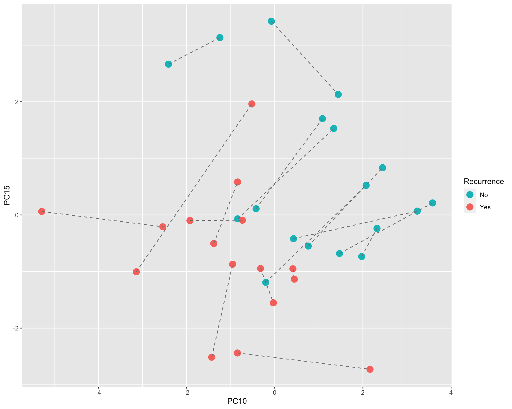
| Version | Author | Date |
|---|---|---|
| 2f62f8a | LiaoQianWu | 2023-05-17 |
ggplot(pcTab, aes(x=PC1, y=PC4, col=Metastasis, group=Patient)) +
geom_point(size = 4) +
geom_line(col = 'grey50', linetype = 'dashed') +
th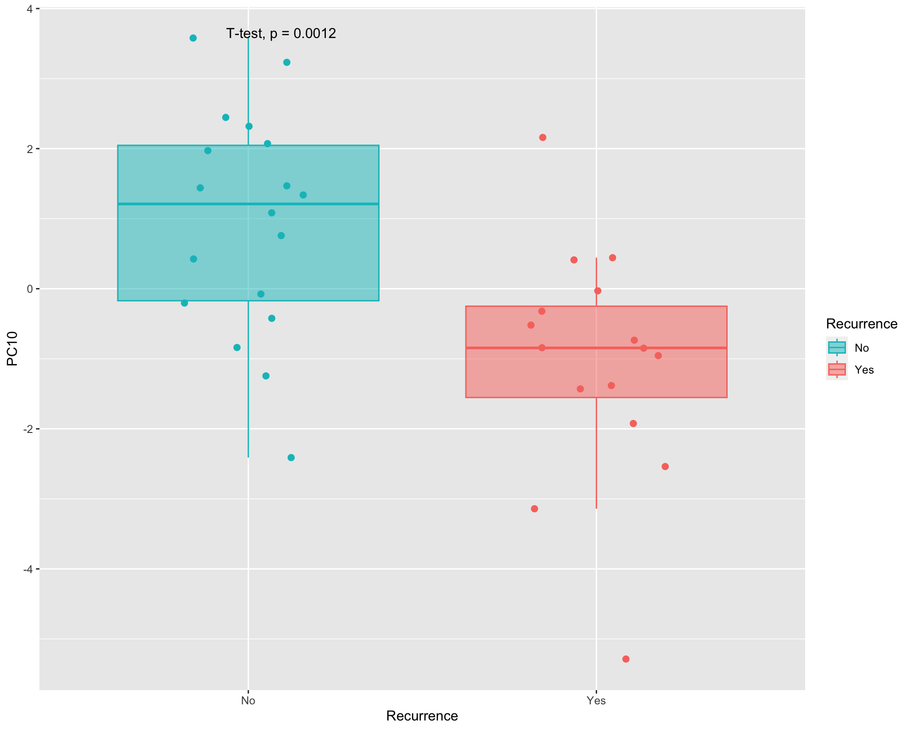
| Version | Author | Date |
|---|---|---|
| 2f62f8a | LiaoQianWu | 2023-05-17 |
ggplot(pcTab, aes(x=Recurrence, y=PC11, col=Recurrence, fill=Recurrence)) +
geom_boxplot(alpha = 0.3, outlier.shape = NA) +
geom_jitter(position = position_jitter(0.2), size = 2, show.legend = F) +
scale_color_manual(values=c('#00BFC4', '#F8766D')) +
scale_fill_manual(values=c('#00BFC4', '#F8766D')) +
ggpubr::stat_compare_means(method = 't.test', paired = F,
method.args = list(var.equal = T),
show.legend = F) +
th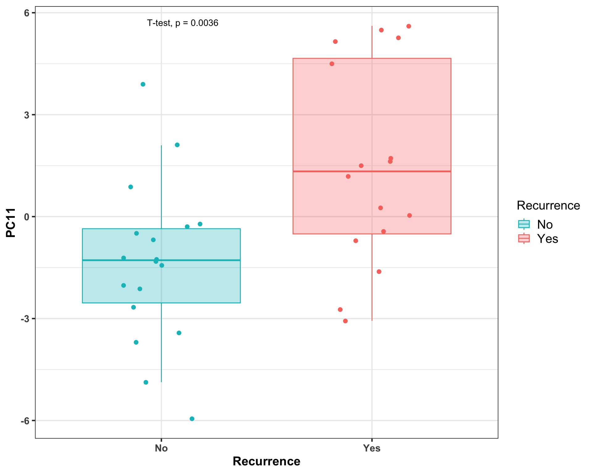
| Version | Author | Date |
|---|---|---|
| 2f62f8a | LiaoQianWu | 2023-05-17 |
Display variance explained by each PC
# Display proportion of total variance captured by all PCs explained by each PC
varExplained <- pcaRes@sDev^2 / sum(pcaRes@sDev^2)
PC <- paste0('PC', seq(length(varExplained)))
varTab <- data.frame(PC = factor(PC, levels = PC),
Var_explained = varExplained)
ggplot(varTab, aes(x=PC, y=Var_explained*100)) +
geom_col() +
labs(x = '', y = 'Variance explained (%)') +
th + theme(axis.text.x = element_text(angle = 90, hjust = 1, vjust = 0.5))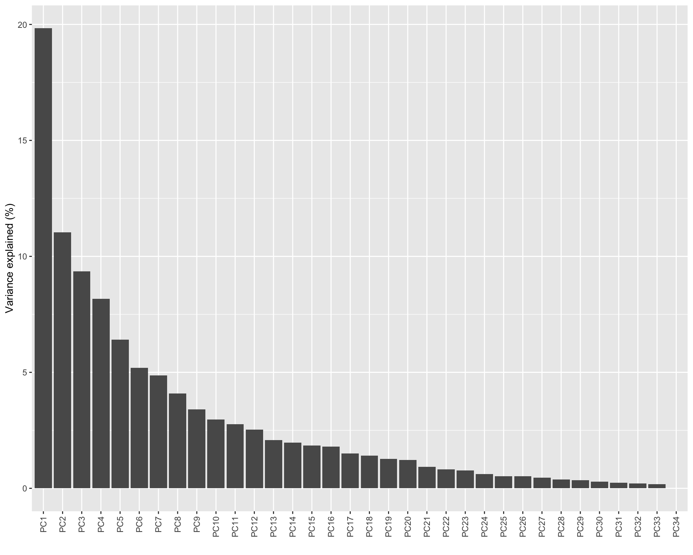
| Version | Author | Date |
|---|---|---|
| 2f62f8a | LiaoQianWu | 2023-05-17 |
Baseline samples
Display significant associations between learned PCs (Var1) and metadata variables (Var2)
# Subset baseline samples
smpBaseIdx <- which(colData(proPlasma)$Condition == 'Baseline')
proBase <- proPlasma[, smpBaseIdx]
# Display significant associations between PCs and metadata variables
proBaseAssoRes <- doSOA(proBase, meta_var = c('Recurrence', 'Gender', 'Age',
'Smoking', 'Stage', 'Metastasis'),
do_onlyPCA = T, pca_method = 'ppca', num_PCs = 15)
proBaseAssoRes$tPCASigRes Var1 Var2 pVal pValAdj Stat Test
1 PC1 Stage 0.008535839 0.3479541 6.8240182 ANOVA
2 PC3 Age 0.010777808 0.3479541 -0.6006715 Correlation
3 PC11 Smoking 0.012639518 0.3479541 6.0701146 ANOVA
4 PC1 Metastasis 0.017607291 0.3479541 -2.6663220 T-test
5 PC4 Metastasis 0.019330784 0.3479541 2.6195624 T-test
6 PC6 Stage 0.028144419 0.4221663 4.6577148 ANOVA
7 PC4 Stage 0.040969501 0.5026422 4.0488720 ANOVA
8 PC10 Gender 0.045261474 0.5026422 -2.1839263 T-testDisplay significant associations between features (Var1) and cancer recurrence (Var2) and observe molecular signatures in input data through heatmap. Note that features in heatmap are ordered by their t-statistics.
# Perform analysis
proBaseRes <- doSOA(proBase, meta_var = 'Recurrence', pca_method = 'ppca',
num_PCs = 15, num_PCfeats = 30)
datMat <- proBaseRes$data
smpAnno <- proBaseRes$smpMetadata
tFeatSigRes <- proBaseRes$tFeatSigRes
tPCASigRes <- proBaseRes$tPCASigRes
# Display features that can significantly separate recurrence and non-recurrence
# patients
dplyr::mutate(tFeatSigRes, Gene = plyr::mapvalues(Var1,
from = featInfo$Protein.Groups,
to = featInfo$Genes,
warn_missing = F)) Var1 Var2 pVal pValAdj Stat Test Gene
1 Q08380 Recurrence 0.004699866 0.6786376 -3.316229 T-test LGALS3BP
2 A0A0B4J1U3 Recurrence 0.005085481 0.6786376 3.317176 T-test IGLV1-36
3 P49913 Recurrence 0.005825039 0.6786376 3.211501 T-test CAMP
4 P80723 Recurrence 0.006976745 0.6786376 3.199318 T-test BASP1
5 P02538 Recurrence 0.007832681 0.6786376 -3.139209 T-test KRT6A
6 P01833 Recurrence 0.009842198 0.6786376 -2.954539 T-test PIGR
7 P68371 Recurrence 0.011930805 0.6786376 -2.959542 T-test TUBB4B
8 P27169 Recurrence 0.016019524 0.6786376 2.713484 T-test PON1
9 P04439 Recurrence 0.016409444 0.6786376 -2.701497 T-test HLA-A
10 P61026 Recurrence 0.017187729 0.6786376 -2.729819 T-test RAB10
11 Q04695 Recurrence 0.019445075 0.6786376 -3.164854 T-test KRT17
12 P02745 Recurrence 0.019532133 0.6786376 -2.614364 T-test C1QA
13 P07339 Recurrence 0.020163412 0.6786376 -2.598393 T-test CTSD
14 Q9ULV4 Recurrence 0.024061894 0.6786376 -2.580809 T-test CORO1C
15 O95810 Recurrence 0.025938542 0.6786376 -2.513124 T-test CAVIN2
16 P05141 Recurrence 0.028923547 0.6786376 -2.455298 T-test SLC25A5
17 A0A0C4DH31 Recurrence 0.030116370 0.6786376 2.395023 T-test IGHV1-18
18 P06312 Recurrence 0.030193090 0.6786376 2.393721 T-test IGKV4-1
19 A0A0J9YXX1 Recurrence 0.030491742 0.6786376 -2.388680 T-test IGHV5-10-1
20 P05106 Recurrence 0.030500567 0.6786376 -2.427027 T-test ITGB3
21 Q9UK55 Recurrence 0.034353303 0.7279629 2.327394 T-test SERPINA10
22 P14625 Recurrence 0.036795797 0.7442786 -2.291897 T-test HSP90B1
23 A0A075B6Q5 Recurrence 0.040771648 0.7626199 -2.238585 T-test IGHV3-64
24 Q05682 Recurrence 0.041130063 0.7626199 -2.312324 T-test CALD1
25 A0A087WSZ0 Recurrence 0.049216139 0.8571990 2.187634 T-test IGKV1D-8# Plot molecular signatures in input data
# Order features according to t-statistics
featOrder <- dplyr::arrange(tFeatSigRes, dplyr::desc(Stat))$Var1
# Arrange samples to make same groups in same clusters
smpOrder <- c(which(smpAnno$Recurrence == 'No'),
which(smpAnno$Recurrence == 'Yes'))
# Prepare recurrence table for annotating samples in heatmap
smpRecur <- dplyr::select(smpAnno, Sample, Recurrence) %>%
tibble::column_to_rownames('Sample')
# Change protein names to gene names
datMatSub <- datMat[featOrder, smpOrder]
rownames(datMatSub) <- plyr::mapvalues(rownames(datMatSub),
from = featInfo$Protein.Groups,
to = featInfo$Genes,
warn_missing = F)
pheatmap::pheatmap(datMatSub,
annotation_col = smpRecur,
color = colorRampPalette(c('navy', 'white', 'red'))(100),
cluster_rows = F, cluster_cols = F,
scale = 'row', #row scaling is across columns
main = 'Baseline plasma proteomics')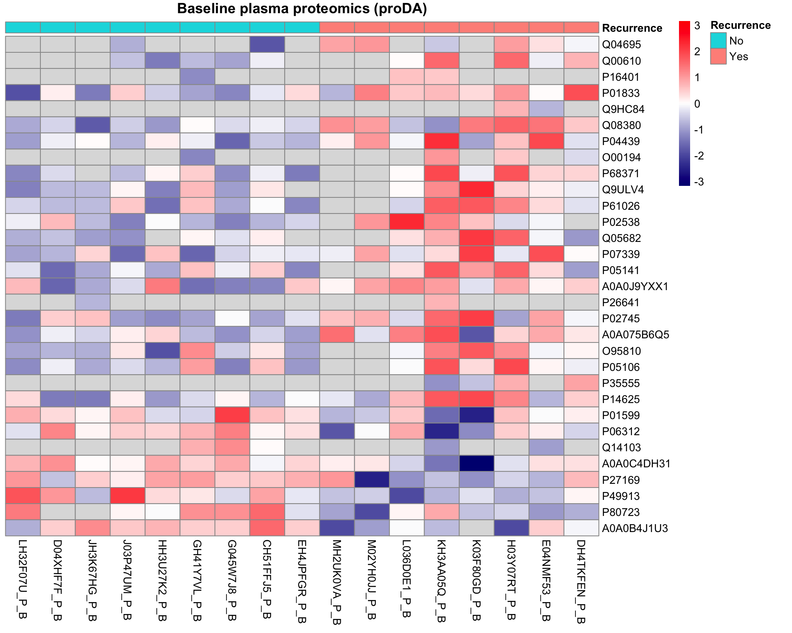
| Version | Author | Date |
|---|---|---|
| 2f62f8a | LiaoQianWu | 2023-05-17 |
Owing to missing values, there might be a situation that only few observations in one sample group, e.g., KRT17 right above, resulting in unreliable t-statistics. We used probabilistic dropout model to account for data missingness and identify differentially abundant entities that are significantly associated with cancer recurrence. Note that features in heatmap are ordered by their t-statistics.
# Fit linear probabilistic dropout model to normalized data
fit <- proDA::proDA(datMat, design = ~ smpAnno$Recurrence)
# fit
# Check coefficient names for Parameter 'contrast' in proDA::test_diff()
# proDA::result_names(fit)
# Identify significant differentially abundant entities
all_proDAProBaseRes <- proDA::test_diff(fit,
contrast = Intercept + `smpAnno$RecurrenceYes` - Intercept,
sort_by = 'pval')
proDAProBaseRes <- dplyr::select(all_proDAProBaseRes, -c(diff, se, df, avg_abundance, n_approx, n_obs)) %>%
dplyr::filter(pval < 0.05) %>%
dplyr::mutate(Gene = plyr::mapvalues(name,
from = featInfo$Protein.Groups,
to = featInfo$Genes,
warn_missing = F))
proDAProBaseRes name pval adj_pval t_statistic Gene
1 Q04695 0.001837364 0.6701611 3.774282 KRT17
2 A0A0B4J1U3 0.003011960 0.6701611 -3.533085 IGLV1-36
3 P49913 0.006236788 0.7024140 -3.178138 CAMP
4 P80723 0.006313834 0.7024140 -3.172139 BASP1
5 P01833 0.009532747 0.7278452 2.970251 PIGR
6 Q08380 0.011160524 0.7278452 2.892616 LGALS3BP
7 P02538 0.013262068 0.7278452 2.807331 KRT6A
8 P04439 0.013823965 0.7278452 2.786761 HLA-A
9 P61026 0.016706428 0.7278452 2.692550 RAB10
10 Q9ULV4 0.016912480 0.7278452 2.686433 CORO1C
11 P27169 0.019987450 0.7278452 -2.602796 PON1
12 P68371 0.022454350 0.7278452 2.544206 TUBB4B
13 Q05682 0.024657861 0.7278452 2.496866 CALD1
14 P05141 0.025482752 0.7278452 2.480176 SLC25A5
15 A0A0C4DH31 0.026531957 0.7278452 -2.459677 IGHV1-18
16 O95810 0.028091736 0.7278452 2.430583 CAVIN2
17 P07339 0.028287702 0.7278452 2.427037 CTSD
18 A0A0J9YXX1 0.030433248 0.7278452 2.389664 IGHV5-10-1
19 P02745 0.031675302 0.7278452 2.369153 C1QA
20 P05106 0.032712144 0.7278452 2.352604 ITGB3
21 A0A075B6Q5 0.034452101 0.7300564 2.325913 IGHV3-64
22 P01599 0.047333671 0.9164484 -2.160380 IGKV1-17
23 P06312 0.047366997 0.9164484 -2.160010 IGKV4-1# Plot molecular signatures in input data
# Order features according to t-statistics
featOrder <- dplyr::arrange(proDAProBaseRes, dplyr::desc(t_statistic))$name
# Change protein names to gene names
datMatSub <- datMat[featOrder, smpOrder]
rownames(datMatSub) <- plyr::mapvalues(rownames(datMatSub),
from = featInfo$Protein.Groups,
to = featInfo$Genes,
warn_missing = F)
pheatmap::pheatmap(datMatSub,
annotation_col = smpRecur,
color = colorRampPalette(c('navy', 'white', 'red'))(100),
cluster_rows = F, cluster_cols = F,
scale = 'row', main = 'Baseline plasma proteomics (proDA)')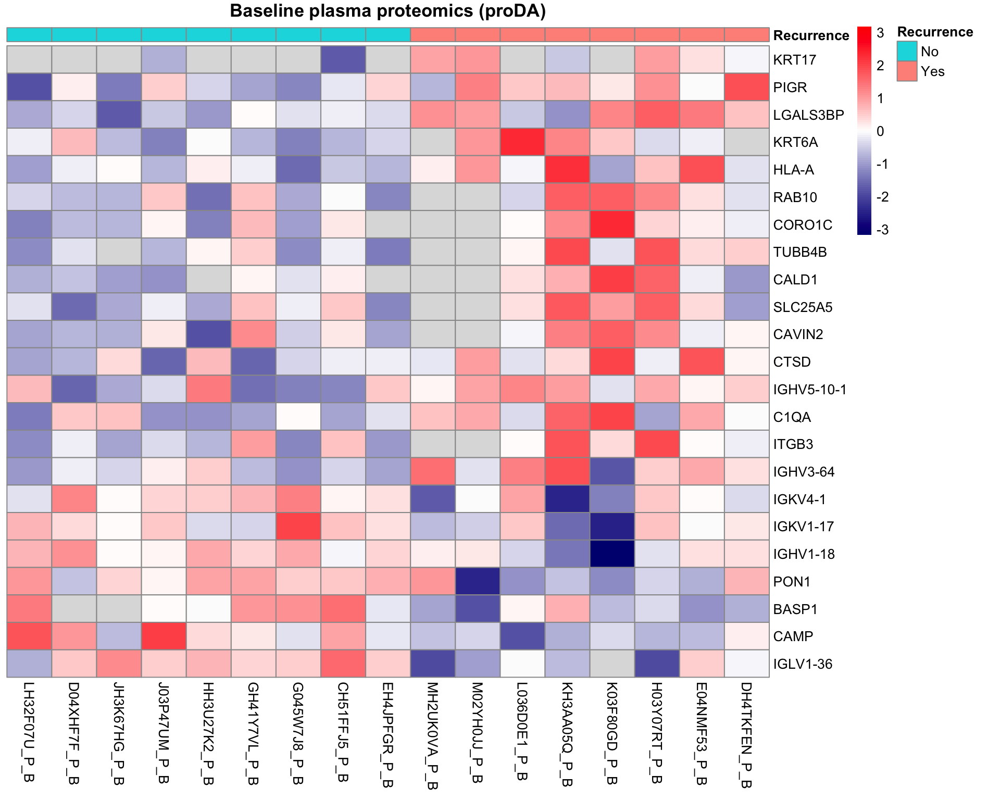
| Version | Author | Date |
|---|---|---|
| 2f62f8a | LiaoQianWu | 2023-05-17 |
Visualize data of top 6 significant features based on proDA result
# Visualize data of top 6 significant features
topSigFeats <- proDAProBaseRes$name[1:6]
topSigFeatData <- tibble::as_tibble(datMat[topSigFeats,], rownames = 'Feature') %>%
tidyr::pivot_longer(cols = -'Feature',
names_to = 'Sample', values_to = 'Abundance') %>%
dplyr::mutate(Feature = plyr::mapvalues(Feature,
from = featInfo$Protein.Groups,
to = featInfo$Genes,
warn_missing = F),
Feature = factor(Feature, levels = plyr::mapvalues(topSigFeats,
from = featInfo$Protein.Groups,
to = featInfo$Genes,
warn_missing = F))) %>%
dplyr::left_join(smpAnno, by = 'Sample')
ggplot(topSigFeatData, aes(x=Recurrence, y=Abundance, col=Recurrence, fill=Recurrence)) +
geom_boxplot(alpha = 0.3, outlier.shape = NA) +
geom_jitter(position = position_jitter(0.2), size = 2, show.legend = F) +
scale_color_manual(values=c('#00BFC4', '#F8766D')) +
scale_fill_manual(values=c('#00BFC4', '#F8766D')) +
facet_wrap(vars(Feature), scales = 'free') +
ggpubr::stat_compare_means(method = 't.test', paired = F,
method.args = list(var.equal = T),
show.legend = F) +
th + theme(strip.text = element_text(size = 13, face = 'bold')) -> ADD COMMENT!
-> ADD COMMENT!
There is no significant association between PCs (Var1) and cancer recurrence (Var2).
# Display PCs that can significantly separate recurrence and non-recurrence
# patients
tPCASigRes[1] Var1 Var2 pVal pValAdj Stat Test
<0 rows> (or 0-length row.names)Follow-up samples
Display significant associations between learned PCs (Var1) and metadata variables (Var2)
# Subset follow-up samples
smpFoloIdx <- which(colData(proPlasma)$Condition != 'Baseline')
proFolo <- proPlasma[, smpFoloIdx]
# Display significant associations between PCs and metadata variables
proFoloAssoRes <- doSOA(proFolo, meta_var = c('Recurrence', 'Gender'),
do_onlyPCA = T, pca_method = 'ppca', num_PCs = 15)
proFoloAssoRes$tPCASigRes Var1 Var2 pVal pValAdj Stat Test
1 PC9 Recurrence 0.002493242 0.07479727 -3.625238 T-test
2 PC3 Gender 0.019309557 0.28964336 2.620113 T-testDisplay significant associations between features (Var1) and cancer recurrence (Var2) and observe molecular signatures in input data through heatmap. Note that features in heatmap are ordered by their t-statistics.
# Perform analysis
proFoloRes <- doSOA(proFolo, meta_var = 'Recurrence', pca_method = 'ppca',
num_PCs = 15, num_PCfeats = 30)
datMat <- proFoloRes$data
smpAnno <- proFoloRes$smpMetadata
tFeatSigRes <- proFoloRes$tFeatSigRes
tPCASigRes <- proFoloRes$tPCASigRes
pcaRes <- proFoloRes$pcaRes
pcTab <- proFoloRes$pcTab
pcTopFeatTab <- proFoloRes$pcTopFeatTab
# Display features that can significantly separate recurrence and non-recurrence
# patients
dplyr::mutate(tFeatSigRes, Gene = plyr::mapvalues(Var1,
from = featInfo$Protein.Groups,
to = featInfo$Genes,
warn_missing = F)) %>%
dplyr::select(-Test) Var1 Var2 pVal pValAdj Stat Gene
1 P50395 Recurrence 0.007926227 0.9995797 3.306484 GDI2
2 A0A075B6J1 Recurrence 0.021597440 0.9995797 2.675073 IGLV5-37
3 P01782;P0DP04 Recurrence 0.027988644 0.9995797 2.432458 IGHV3-43D;IGHV3-9
4 P02748 Recurrence 0.028447840 0.9995797 -2.424156 C9
5 Q13822 Recurrence 0.029811866 0.9995797 2.439196 ENPP2
6 P02649 Recurrence 0.032862812 0.9995797 2.350240 APOE
7 A0A0J9YXX1 Recurrence 0.042447906 0.9995797 -2.232273 IGHV5-10-1
8 P14625 Recurrence 0.043344768 0.9995797 -2.206614 HSP90B1
9 Q92954 Recurrence 0.043532127 0.9995797 2.204355 PRG4
10 P01817 Recurrence 0.044588676 0.9995797 2.191787 IGHV2-5# Plot molecular signatures in input data
# Order features according to t-statistics
featOrder <- dplyr::arrange(tFeatSigRes, dplyr::desc(Stat))$Var1
# Arrange samples to make same groups in same clusters
smpOrder <- c(which(smpAnno$Recurrence == 'No'),
which(smpAnno$Recurrence == 'Yes'))
# Prepare recurrence table for annotating samples in heatmap
smpRecur <- dplyr::select(smpAnno, Sample, Recurrence) %>%
tibble::column_to_rownames('Sample')
# Change protein names to gene names
datMatSub <- datMat[featOrder, smpOrder]
rownames(datMatSub) <- plyr::mapvalues(rownames(datMatSub),
from = featInfo$Protein.Groups,
to = featInfo$Genes,
warn_missing = F)
pheatmap::pheatmap(datMatSub,
annotation_col = smpRecur,
color = colorRampPalette(c('navy', 'white', 'red'))(100),
cluster_rows = F, cluster_cols = F,
scale = 'row', main = 'Follow-up plasma proteomics')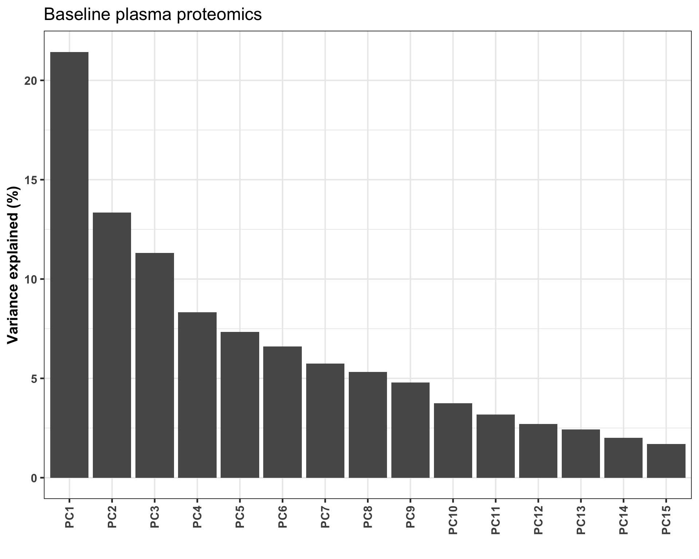
| Version | Author | Date |
|---|---|---|
| 2f62f8a | LiaoQianWu | 2023-05-17 |
Use probabilistic dropout model to account for data missingness and identify differentially abundant entities that are significantly associated with cancer recurrence. Note that features in heatmap are ordered by their t-statistics.
# Fit linear probabilistic dropout model to normalized data
fit <- proDA::proDA(datMat, design = ~ smpAnno$Recurrence)
# fit
# Check coefficient names for Parameter 'contrast' in proDA::test_diff()
# proDA::result_names(fit)
# Identify significant differentially abundant entities
all_proDAProFoloRes <- proDA::test_diff(fit,
contrast = Intercept + `smpAnno$RecurrenceYes` - Intercept,
sort_by = 'pval')
proDAProFoloRes <- dplyr::select(all_proDAProFoloRes, -c(diff, se, df, avg_abundance, n_approx, n_obs)) %>%
dplyr::filter(pval < 0.05) %>%
dplyr::mutate(Gene = plyr::mapvalues(name,
from = featInfo$Protein.Groups,
to = featInfo$Genes,
warn_missing = F))
proDAProFoloRes name pval adj_pval t_statistic Gene
1 P50395 0.003024671 0.9995711 -3.531033 GDI2
2 A0A075B6J1 0.015351937 0.9995711 -2.734679 IGLV5-37
3 P01782;P0DP04 0.027159214 0.9995711 -2.447786 IGHV3-43D;IGHV3-9
4 A0A0J9YXX1 0.030228955 0.9995711 2.393113 IGHV5-10-1
5 P02748 0.031177966 0.9995711 2.377273 C9
6 A0A075B6S5 0.045218122 0.9995711 2.184430 IGKV1-27
7 P01817 0.047995973 0.9995711 -2.153056 IGHV2-5
8 Q13822 0.048214422 0.9995711 -2.150661 ENPP2
9 P00325 0.048355421 0.9995711 -2.149120 ADH1B# Plot molecular signatures in input data
# Order features according to t-statistics
featOrder <- dplyr::arrange(proDAProFoloRes, dplyr::desc(t_statistic))$name
# Change protein names to gene names
datMatSub <- datMat[featOrder, smpOrder]
rownames(datMatSub) <- plyr::mapvalues(rownames(datMatSub),
from = featInfo$Protein.Groups,
to = featInfo$Genes,
warn_missing = F)
pheatmap::pheatmap(datMatSub,
annotation_col = smpRecur,
color = colorRampPalette(c('navy', 'white', 'red'))(100),
cluster_rows = F, cluster_cols = F,
scale = 'row', main = 'Follow-up plasma proteomics (proDA)')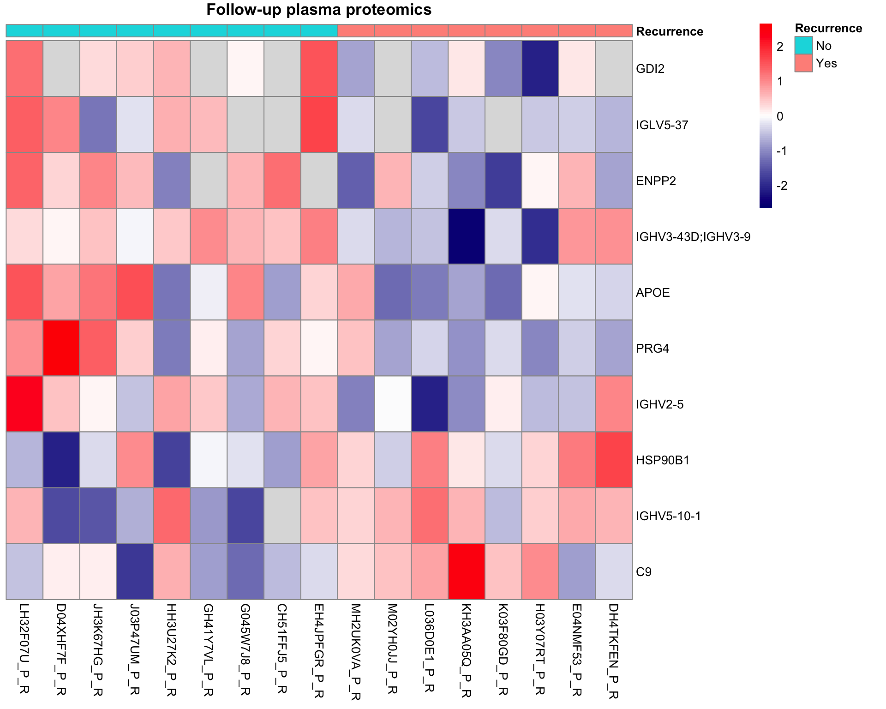
| Version | Author | Date |
|---|---|---|
| 2f62f8a | LiaoQianWu | 2023-05-17 |
Visualize data of top 6 significant features based on proDA result
# Visualize data of top 6 significant features
topSigFeats <- proDAProFoloRes$name[1:6]
topSigFeatData <- tibble::as_tibble(datMat[topSigFeats,], rownames = 'Feature') %>%
tidyr::pivot_longer(cols = -'Feature',
names_to = 'Sample', values_to = 'Abundance') %>%
dplyr::mutate(Feature = plyr::mapvalues(Feature,
from = featInfo$Protein.Groups,
to = featInfo$Genes,
warn_missing = F),
Feature = factor(Feature, levels = plyr::mapvalues(topSigFeats,
from = featInfo$Protein.Groups,
to = featInfo$Genes,
warn_missing = F))) %>%
dplyr::left_join(smpAnno, by = 'Sample')
ggplot(topSigFeatData, aes(x=Recurrence, y=Abundance, col=Recurrence, fill=Recurrence)) +
geom_boxplot(alpha = 0.3, outlier.shape = NA) +
geom_jitter(position = position_jitter(0.2), size = 2, show.legend = F) +
scale_color_manual(values=c('#00BFC4', '#F8766D')) +
scale_fill_manual(values=c('#00BFC4', '#F8766D')) +
facet_wrap(vars(Feature), scales = 'free') +
ggpubr::stat_compare_means(method = 't.test', paired = F,
method.args = list(var.equal = T),
show.legend = F) +
th + theme(strip.text = element_text(size = 13, face = 'bold'))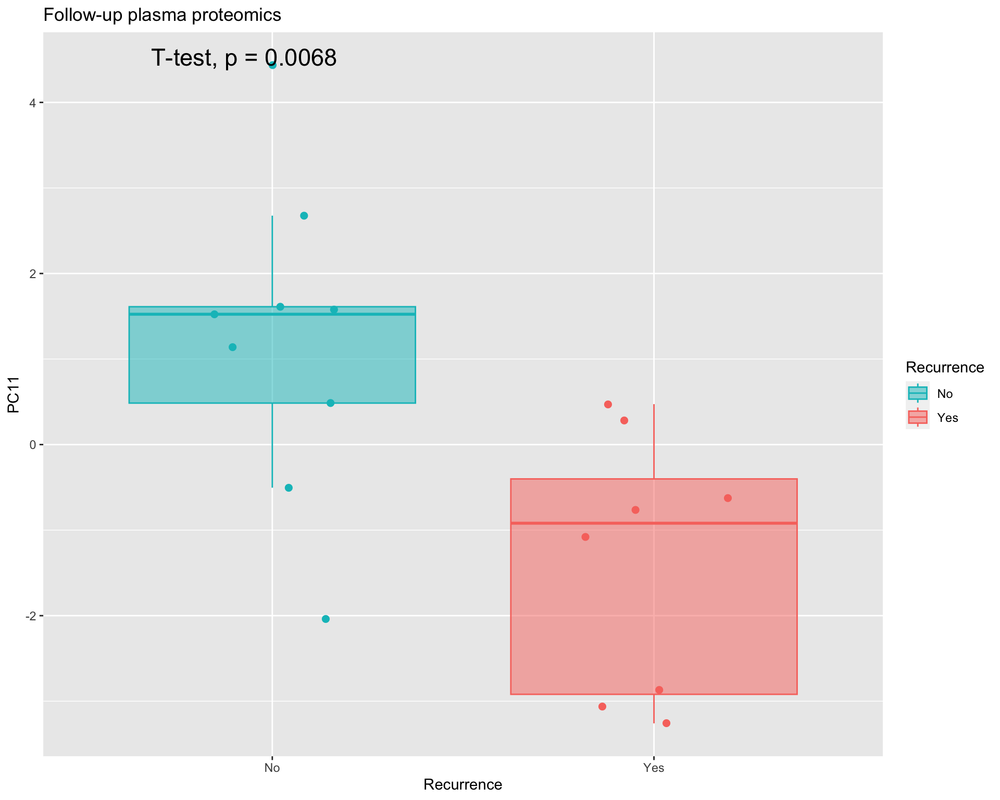
| Version | Author | Date |
|---|---|---|
| 2f62f8a | LiaoQianWu | 2023-05-17 |
Display significant associations between PCs (Var1) and cancer recurrence (Var2)
# Display PCs that can significantly separate recurrence and non-recurrence
# patients
tPCASigRes Var1 Var2 pVal pValAdj Stat Test
1 PC9 Recurrence 0.002493242 0.03739864 -3.625238 T-test# Display proportion of total variance captured by all PCs explained by each PC
varExplained <- pcaRes@sDev^2 / sum(pcaRes@sDev^2)
PC <- paste0('PC', seq(length(varExplained)))
varTab <- data.frame(PC = factor(PC, levels = PC),
Var_explained = varExplained)
ggplot(varTab, aes(x=PC, y=Var_explained*100)) +
geom_col() +
labs(x = '', y = 'Variance explained (%)',
title = 'Follow-up plasma proteomics') +
th + theme(axis.text.x = element_text(angle = 90, hjust = 1, vjust = 0.5))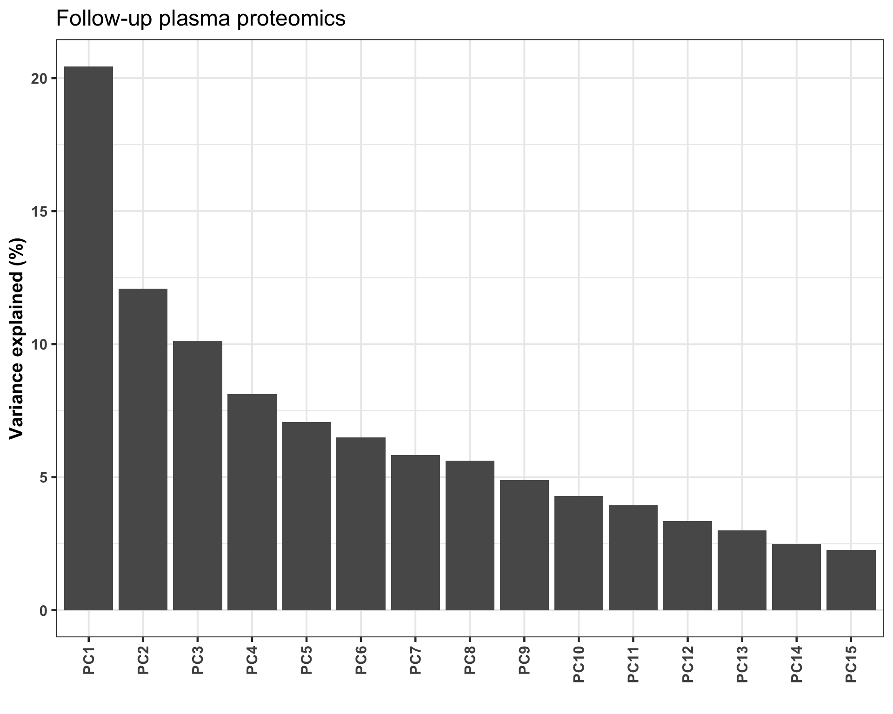
| Version | Author | Date |
|---|---|---|
| 2f62f8a | LiaoQianWu | 2023-05-17 |
PC9 potentially separates recurrence and non-recurrence patients.
# Visualize PCs
ggplot(pcTab, aes(x=Recurrence, y=PC9, col=Recurrence, fill=Recurrence)) +
geom_boxplot(alpha = 0.3, outlier.shape = NA) +
geom_jitter(position = position_jitter(0.2), size = 2, show.legend = F) +
labs(title = 'Follow-up plasma proteomics') +
scale_color_manual(values=c('#00BFC4', '#F8766D')) +
scale_fill_manual(values=c('#00BFC4', '#F8766D')) +
ggpubr::stat_compare_means(method = 't.test', paired = F, size = 6,
method.args = list(var.equal = T), hjust = 0.65,
show.legend = F) +
th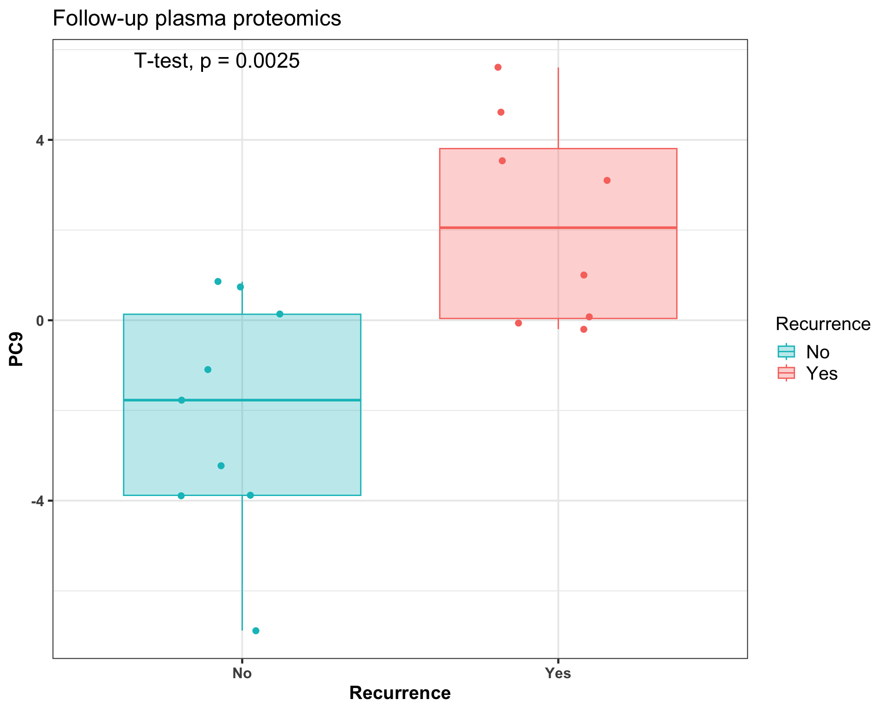
Plot molecular signatures captured by PC9 in input data. We took a look at top 20 features with highest loadings and observed protein levels of these top features through heatmap. Note that features in heatmap are ordered by their loadings. There is no single feature that can decently hint if patients will suffer cancer recurrence or not, which means each of these top features contributes a bit to explaining variation between recurrence and non-recurrence patients.
# Plot molecular signatures in input data
# Extract top features with highest loadings
topFeats <- pcTopFeatTab$PC9$Feature[1:20]
# Order features by loadings
topFeatsIdx <- sapply(topFeats, function(feat) {which(rownames(datMat) == feat)})
# Change protein names to gene names
datMatSub <- datMat[topFeatsIdx, smpOrder]
rownames(datMatSub) <- plyr::mapvalues(rownames(datMatSub),
from = featInfo$Protein.Groups,
to = featInfo$Genes,
warn_missing = F)
# Manually shorten names
rownames(datMatSub)[20] <- 'H2AC11;H2AC12'
pheatmap::pheatmap(datMatSub,
annotation_col = smpRecur,
color = colorRampPalette(c('navy', 'white', 'red'))(100),
cluster_rows = F, cluster_cols = F,
scale = 'row', main = 'Follow-up plasma proteomics - PC9')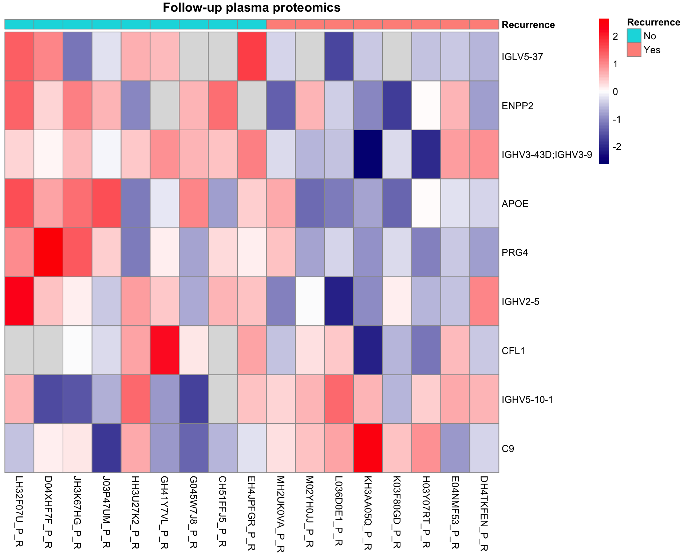
| Version | Author | Date |
|---|---|---|
| 2f62f8a | LiaoQianWu | 2023-05-17 |
Display top features that build the PC9
# Display top features with highest loadings of PC of interest
pcTopFeatTab <- dplyr::mutate(pcTopFeatTab$PC9, Gene = plyr::mapvalues(Feature,
from = featInfo$Protein.Groups,
to = featInfo$Genes,
warn_missing = F))
# Manually shorten names
pcTopFeatTab$Feature[20] <- 'P0C0S8;P20671'
pcTopFeatTab$Gene[20] <- 'H2AC11;H2AC12'
pcTopFeatTab Feature Loading Gene
1 P01880 0.25299281 IGHD
2 A0A0J9YXX1 0.22988400 IGHV5-10-1
3 P06702 0.22266505 S100A9
4 P02545 0.21840685 LMNA
5 P05109 0.18672374 S100A8
6 P81605 0.18203291 DCD
7 P20742 0.17363346 PZP
8 P00915 0.16024643 CA1
9 A0A0G2JMI3 0.14611662 IGHV1-69-2
10 P01854 0.14245823 IGHE
11 P69905 0.14062048 HBA1
12 P02042 0.13193440 HBD
13 P31146 0.13171480 CORO1A
14 P68871 0.13123065 HBB
15 P32119 0.12614458 PRDX2
16 P07355 0.12225685 ANXA2
17 A0A0B4J1Y8 0.11371931 IGLV9-49
18 P80723 0.11309723 BASP1
19 A0M8Q6 0.11120945 IGLC7
20 P0C0S8;P20671 0.11085651 H2AC11;H2AC12
21 P11226 0.10805044 MBL2
22 P06703 0.10563000 S100A6
23 P01861 0.10019593 IGHG4
24 A0A0G2JS06 0.09909902 IGLV5-39
25 A0A075B6R2 0.09616703 IGHV4-4
26 P22891 0.09379545 PROZ
27 P01876 0.09313463 IGHA1
28 A0A0C4DH39 0.09185228 IGHV1-58
29 P11169;Q8TDB8 0.09062534 SLC2A14;SLC2A3
30 P35527 0.09053241 KRT9Changes in time course
Differences between Follow-up and Baseline samples (Follow-up matrix
- baseline matrix):
Display significant associations between features (Var1) and cancer recurrence (Var2) and observe molecular signatures in input data through heatmap. Note that features in heatmap are ordered by their t-statistics.
# Subset baseline samples
smpBaseIdx <- which(colData(proPlasma)$Condition == 'Baseline')
proBase <- proPlasma[, smpBaseIdx]
# Subset follow-up samples
smpFoloIdx <- which(colData(proPlasma)$Condition != 'Baseline')
proFolo <- proPlasma[, smpFoloIdx]
# Modify column names for matching two matrices
colnames(proBase) <- stringr::str_remove(colnames(proBase), '_P_B')
colnames(proFolo) <- stringr::str_remove(colnames(proFolo), '_P_R')
# Retrieve data matrix
proBaseMat <- SummarizedExperiment::assay(proBase)
proFoloMat <- SummarizedExperiment::assay(proFolo)
# Subtract follow-up matrix by baseline matrix
if (identical(colnames(proBaseMat), colnames(proFoloMat)) &
identical(rownames(proBaseMat), rownames(proFoloMat))) {
proPlasmaDiffMat <- proFoloMat - proBaseMat
} else {
print('Align samples or features first.')
}
# Retrieve samples metadata for creating SE object
colAnno <- dplyr::select(as.data.frame(colData(proBase)), Patient, Recurrence)
proPlasmaDiff <- SummarizedExperiment(assays = proPlasmaDiffMat, colData = colAnno)
# Perform analysis
proPlasmaDiffRes <- doSOA(proPlasmaDiff, meta_var = 'Recurrence', pca_method = 'ppca',
num_PCs = 15, num_PCfeats = 30)
datMat <- proPlasmaDiffRes$data
smpAnno <- proPlasmaDiffRes$smpMetadata
tFeatSigRes <- proPlasmaDiffRes$tFeatSigRes
tPCASigRes <- proPlasmaDiffRes$tPCASigRes
# Display features that can significantly separate recurrence and non-recurrence
# patients
dplyr::mutate(tFeatSigRes, Gene = plyr::mapvalues(Var1,
from = featInfo$Protein.Groups,
to = featInfo$Genes,
warn_missing = F)) Var1 Var2 pVal pValAdj Stat Test Gene
1 P02745 Recurrence 0.001030428 0.4575100 4.057997 T-test C1QA
2 P61769 Recurrence 0.020910545 0.9847154 2.580099 T-test B2M
3 P01742 Recurrence 0.023500990 0.9847154 -2.521192 T-test IGHV1-69
4 A0A075B6J1 Recurrence 0.023575075 0.9847154 2.667957 T-test IGLV5-37
5 A0A0C4DH29 Recurrence 0.025445160 0.9847154 2.523296 T-test IGHV1-3
6 P01871 Recurrence 0.034879791 0.9847154 2.319546 T-test IGHM
7 P04070 Recurrence 0.036202769 0.9847154 -2.300308 T-test PROC
8 P01591 Recurrence 0.036788331 0.9847154 2.292002 T-test JCHAIN
9 A0A075B6S5 Recurrence 0.038336481 0.9847154 -2.270627 T-test IGKV1-27
10 Q9ULV4 Recurrence 0.044792515 0.9847154 2.376460 T-test CORO1C
11 P04439 Recurrence 0.045662330 0.9847154 2.209864 T-test HLA-A
12 P02786 Recurrence 0.048848868 0.9847154 -2.143761 T-test TFRC
13 Q9BXR6 Recurrence 0.049724352 0.9847154 -2.134373 T-test CFHR5# Plot molecular signatures in input data
# Order features according to t-statistics
featOrder <- dplyr::arrange(tFeatSigRes, dplyr::desc(Stat))$Var1
# Arrange samples to make same groups in same clusters
smpOrder <- c(which(smpAnno$Recurrence == 'No'),
which(smpAnno$Recurrence == 'Yes'))
# Prepare recurrence table for annotating samples in heatmap
smpRecur <- dplyr::select(smpAnno, Sample, Recurrence) %>%
tibble::column_to_rownames('Sample')
# Change protein names to gene names
datMatSub <- datMat[featOrder, smpOrder]
rownames(datMatSub) <- plyr::mapvalues(rownames(datMatSub),
from = featInfo$Protein.Groups,
to = featInfo$Genes,
warn_missing = F)
pheatmap::pheatmap(datMatSub,
annotation_col = smpRecur,
color = colorRampPalette(c('navy', 'white', 'red'))(100),
cluster_rows = F, cluster_cols = F,
scale = 'row', main = 'Differential plasma proteomics')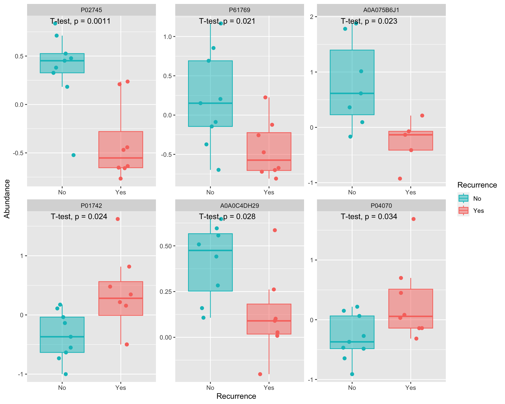
| Version | Author | Date |
|---|---|---|
| 2f62f8a | LiaoQianWu | 2023-05-17 |
Use probabilistic dropout model to account for data missingness and identify differentially abundant entity differences that are significantly associated with cancer recurrence. Note that there is no differentially abundant protein.
# Fit linear probabilistic dropout model to normalized data
fit <- proDA::proDA(datMat, design = ~ smpAnno$Recurrence)
# fit
# Check coefficient names for Parameter 'contrast' in proDA::test_diff()
# proDA::result_names(fit)
# Identify significant differentially abundant entities
proDAProPlasmaDiffRes <- proDA::test_diff(fit,
contrast = Intercept + `smpAnno$RecurrenceYes` - Intercept,
sort_by = 'pval', n_max = 20) %>%
dplyr::select(-c(diff, se, df, avg_abundance, n_approx, n_obs)) %>%
dplyr::mutate(Gene = plyr::mapvalues(name,
from = featInfo$Protein.Groups,
to = featInfo$Genes,
warn_missing = F))
proDAProPlasmaDiffRes name pval adj_pval t_statistic Gene
145 P02745 0.5220230 0.9996898 -0.6555802 C1QA
124 P01871 0.5995095 0.9996898 -0.5364566 IGHM
160 P02786 0.6185767 0.9996898 0.5083871 TFRC
94 P01591 0.6264989 0.9996898 -0.4968480 JCHAIN
51 B9A064 0.6417939 0.9996898 0.4747635 IGLL5
387 Q12805 0.6425736 0.9996898 -0.4736443 EFEMP1
355 P61769 0.6489091 0.9996898 -0.4645728 B2M
107 P01717 0.6584977 0.9996898 0.4509192 IGLV3-25
272 P14151 0.6665074 0.9996898 0.4395814 SELL
190 P05362 0.6673705 0.9996898 -0.4383632 ICAM1
292 P22352 0.6742378 0.9996898 0.4286951 GPX3
144 P02743 0.6759521 0.9996898 0.4262882 APCS
170 P04114 0.6785509 0.9996898 -0.4226445 APOB
70 P00488 0.6871165 0.9996898 -0.4106762 F13A1
109 P01742 0.6918279 0.9996898 0.4041197 IGHV1-69
162 P02790 0.6926524 0.9996898 0.4029741 HPX
168 P04070 0.6962956 0.9996898 0.3979191 PROC
345 P55072 0.7013427 0.9996898 -0.3909338 VCP
422 Q92954 0.7027036 0.9996898 -0.3890537 PRG4
380 Q04756 0.7031292 0.9996898 0.3884661 HGFACVisualize data of top 6 significant features based on regular t-test result
# Visualize data of top 6 significant features
topSigFeats <- tFeatSigRes$Var1[1:6]
topSigFeatData <- tibble::as_tibble(datMat[topSigFeats,], rownames = 'Feature') %>%
tidyr::pivot_longer(cols = -'Feature',
names_to = 'Sample', values_to = 'Abundance') %>%
dplyr::mutate(Feature = plyr::mapvalues(Feature,
from = featInfo$Protein.Groups,
to = featInfo$Genes,
warn_missing = F),
Feature = factor(Feature, levels = plyr::mapvalues(topSigFeats,
from = featInfo$Protein.Groups,
to = featInfo$Genes,
warn_missing = F))) %>%
dplyr::left_join(smpAnno, by = 'Sample')
ggplot(topSigFeatData, aes(x=Recurrence, y=Abundance, col=Recurrence, fill=Recurrence)) +
geom_boxplot(alpha = 0.3, outlier.shape = NA) +
geom_jitter(position = position_jitter(0.2), size = 2, show.legend = F) +
scale_color_manual(values=c('#00BFC4', '#F8766D')) +
scale_fill_manual(values=c('#00BFC4', '#F8766D')) +
facet_wrap(vars(Feature), scales = 'free') +
ggpubr::stat_compare_means(method = 't.test', paired = F,
method.args = list(var.equal = T),
show.legend = F) +
th + theme(strip.text = element_text(size = 13, face = 'bold'))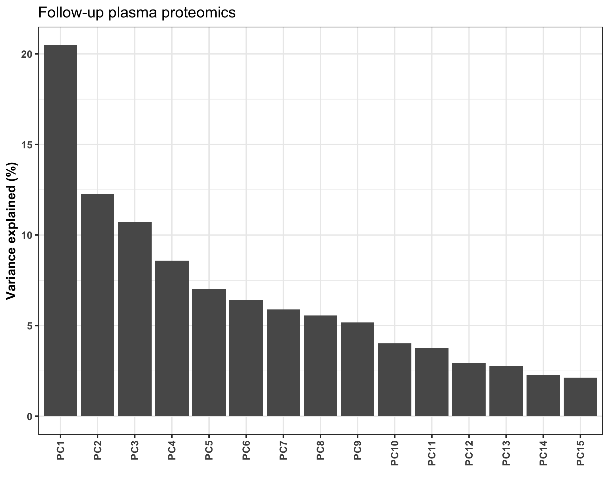
There is no significant association between PCs (Var1) and cancer recurrence (Var2).
# Display PCs that can significantly separate recurrence and non-recurrence
# patients
tPCASigRes[1] Var1 Var2 pVal pValAdj Stat Test
<0 rows> (or 0-length row.names)Tissue Proteomics
Tumor and Normal Tissue sample groups cannot be easily separated, bad data quality?
# Load normalized data
proTissue <- readRDS('./data/AG_Krijgsveld/proTissueNorm_DIA.rds')
# Prepare protein-gene table for changing protein names to gene names
featInfo <- tibble::as_tibble(rowData(proTissue), rownames = 'Protein.Groups')
# Manually modify metadata information (time point, metastasis)
tmp_metadata <- as.data.frame(colData(proTissue)) %>%
dplyr::mutate(
Metastasis = case_when(
Stage == 'IIB' ~ 'Yes',
Stage != 'IIB' ~ 'No'
))
colData(proTissue)['Metastasis'] <- tmp_metadata$Metastasis
# Perform analysis
proTissueRes <- doSOA(proTissue, meta_var = c('Recurrence', 'Gender', 'Age',
'Condition', 'Smoking', 'Stage',
'Metastasis'),
do_onlyPCA = T, pca_method = 'ppca')
tPCASigRes <- proTissueRes$tPCASigRes
pcaRes <- proTissueRes$pcaRes
pcTab <- proTissueRes$pcTabDisplay significant associations between learned PCs (Var1) and metadata variables (Var2). Note that each patient has two samples that have same patient annotations, so association test results may have additive effects.
# Display PCs of interest
tPCASigRes Var1 Var2 pVal pValAdj Stat Test
1 PC1 Stage 0.01463977 0.8765745 4.8556192 ANOVA
2 PC9 Stage 0.01547573 0.8765745 4.7828228 ANOVA
3 PC6 Condition 0.02328965 0.8765745 2.3828020 T-test
4 PC8 Age 0.03649076 0.8765745 0.3600151 Correlation
5 PC5 Condition 0.04942776 0.8765745 -2.0423641 T-testVisualize some significant PCs
ggplot(pcTab, aes(x=PC6, y=PC5, col=Condition, group=Patient)) +
geom_point(size = 4) +
geom_line(col = 'grey50', linetype = 'dashed') +
th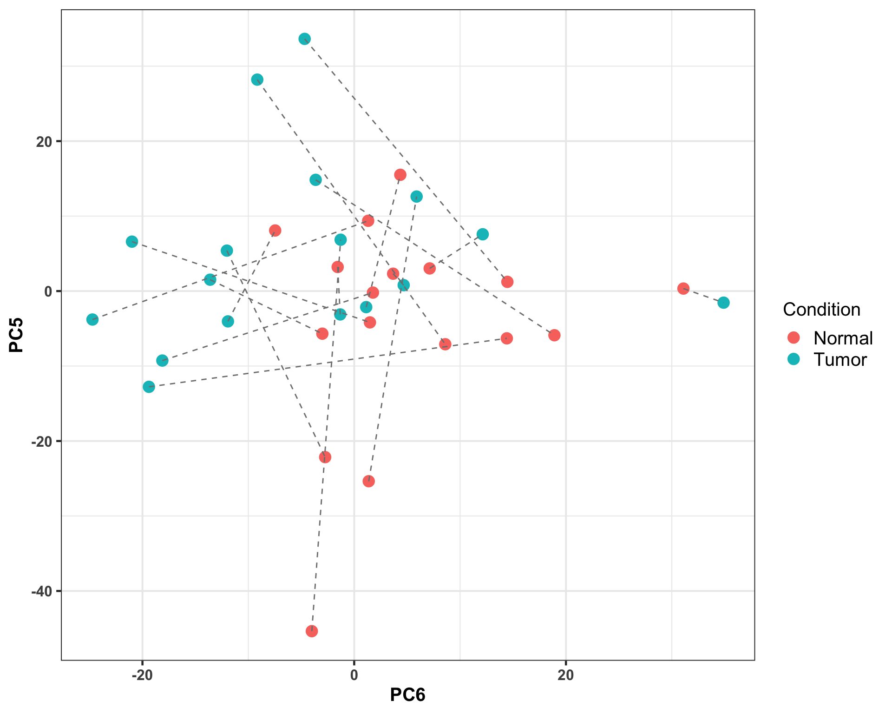
| Version | Author | Date |
|---|---|---|
| 2f62f8a | LiaoQianWu | 2023-05-17 |
ggplot(pcTab, aes(x=Condition, y=PC6, color=Condition, fill=Condition)) +
geom_boxplot(alpha = 0.3, outlier.shape = NA) +
geom_jitter(position = position_jitter(0.2), size = 2, show.legend = F) +
ggpubr::stat_compare_means(method = 't.test', paired = F,
method.args = list(var.equal = T),
show.legend = F) +
th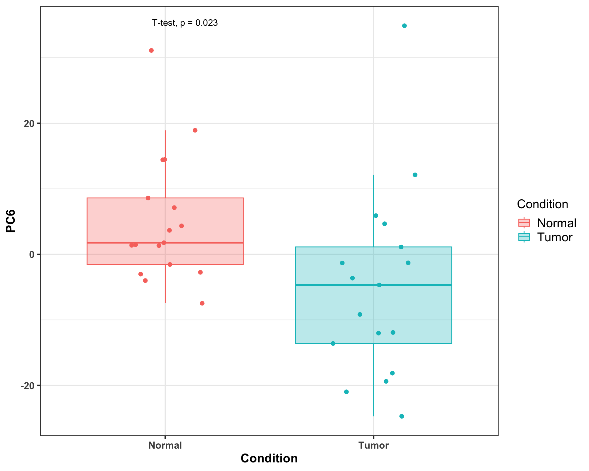
ggplot(pcTab, aes(x=Condition, y=PC5, color=Condition, fill=Condition)) +
geom_boxplot(alpha = 0.3, outlier.shape = NA) +
geom_jitter(position = position_jitter(0.2), size = 2, show.legend = F) +
ggpubr::stat_compare_means(method = 't.test', paired = F,
method.args = list(var.equal = T),
show.legend = F) +
th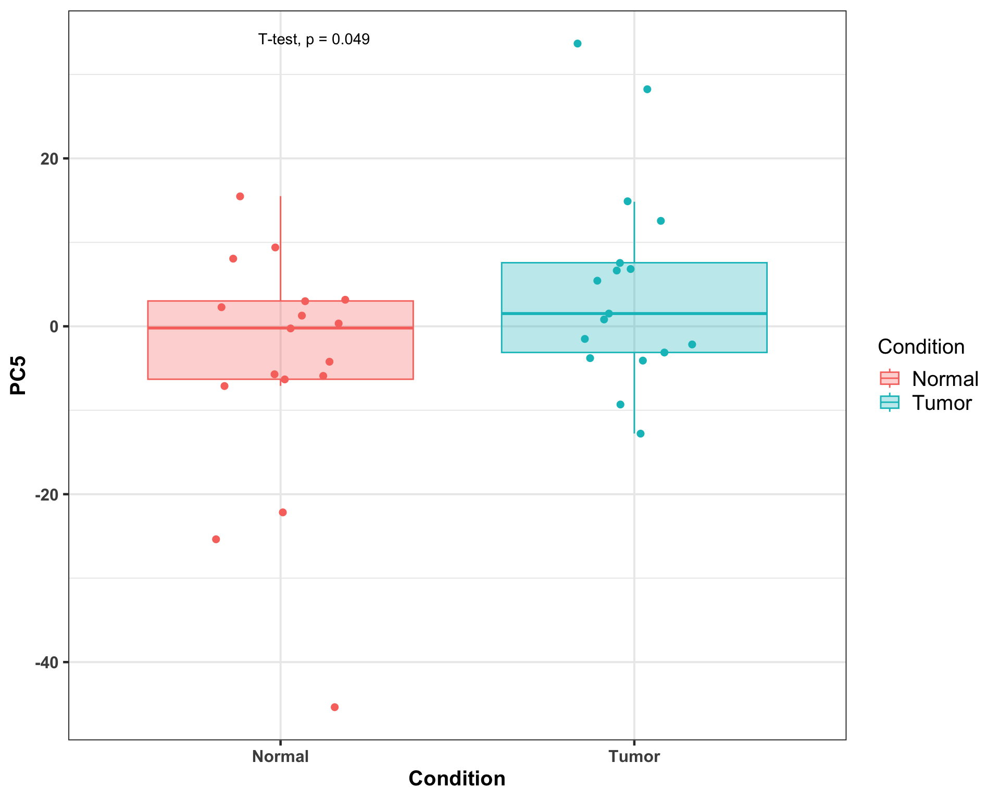
Display variance explained by each PC
# Display proportion of total variance captured by all PCs explained by each PC
varExplained <- pcaRes@sDev^2 / sum(pcaRes@sDev^2)
PC <- paste0('PC', seq(length(varExplained)))
varTab <- data.frame(PC = factor(PC, levels = PC),
Var_explained = varExplained)
ggplot(varTab, aes(x=PC, y=Var_explained*100)) +
geom_col() +
labs(x = '', y = 'Variance explained (%)') +
th + theme(axis.text.x = element_text(angle = 90, hjust = 1, vjust = 0.5))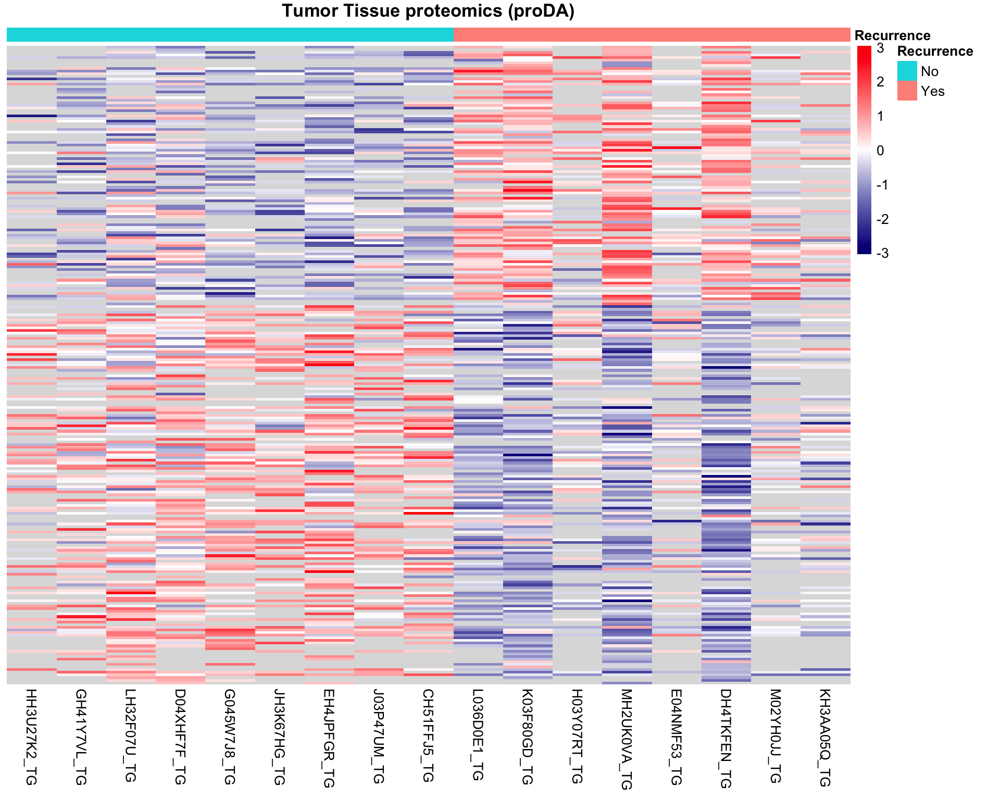
| Version | Author | Date |
|---|---|---|
| 2f62f8a | LiaoQianWu | 2023-05-17 |
Tumor samples
Display significant associations between learned PCs (Var1) and metadata variables (Var2)
# Subset tumor samples
smpTumorIdx <- which(colData(proTissue)$Condition == 'Tumor')
proTumor <- proTissue[, smpTumorIdx]
# Display significant associations between PCs and metadata variables
proTumorAssoRes <- doSOA(proTumor, meta_var = c('Recurrence', 'Gender', 'Age',
'Smoking', 'Stage', 'Metastasis'),
do_onlyPCA = T, pca_method = 'ppca', num_PCs = 15)
proTumorAssoRes$tPCASigRes Var1 Var2 pVal pValAdj Stat Test
1 PC8 Gender 0.002300282 0.2070254 3.6645374 T-test
2 PC2 Stage 0.005388157 0.2424671 7.7631151 ANOVA
3 PC6 Age 0.009978725 0.2993617 -0.6056423 Correlation
4 PC9 Recurrence 0.041288284 0.7910641 -2.2320179 T-testDisplay significant associations between features (Var1) and cancer recurrence (Var2) and observe molecular signatures in input data through heatmap. Note that features in heatmap are ordered by their t-statistics.
# Perform analysis
proTumorRes <- doSOA(proTumor, meta_var = 'Recurrence', pca_method = 'ppca',
num_PCs = 15, num_PCfeats = 30)
datMat <- proTumorRes$data
smpAnno <- proTumorRes$smpMetadata
tFeatSigRes <- proTumorRes$tFeatSigRes
tPCASigRes <- proTumorRes$tPCASigRes
pcaRes <- proTumorRes$pcaRes
pcTab <- proTumorRes$pcTab
pcTopFeatTab <- proTumorRes$pcTopFeatTab
# Display features that can significantly separate recurrence and non-recurrence
# patients
tFeatSigRes <- dplyr::mutate(tFeatSigRes, Gene = plyr::mapvalues(Var1,
from = featInfo$Protein.Groups,
to = featInfo$Genes,
warn_missing = F)) %>%
dplyr::select(-Test)
# Manually shorten names
tFeatSigRes$Var1[127] <- 'P05496;P48201'
tFeatSigRes$Gene[127] <- 'ATP5MC1;ATP5MC2'
tFeatSigRes Var1 Var2 pVal pValAdj Stat Gene
1 Q6IPR1 Recurrence 8.680661e-05 0.4908914 5.596188 ETFRF1
2 P05771 Recurrence 3.869705e-04 0.9590220 5.025026 PRKCB
3 Q9Y6X3 Recurrence 7.992795e-04 0.9590220 -4.255688 MAU2
4 P20472 Recurrence 8.431580e-04 0.9590220 5.179609 PVALB
5 Q6P9B9 Recurrence 8.479416e-04 0.9590220 -4.154166 INTS5
6 Q8IUR0 Recurrence 1.429041e-03 0.9851921 -3.897313 TRAPPC5
7 Q96T76 Recurrence 2.283371e-03 0.9851921 -3.668138 MMS19
8 Q15042 Recurrence 2.598731e-03 0.9851921 -4.119796 RAB3GAP1
9 P43358 Recurrence 2.764625e-03 0.9851921 4.259138 MAGEA4
10 P01920 Recurrence 3.356239e-03 0.9851921 3.480340 HLA-DQB1
11 Q9H2V7 Recurrence 3.677463e-03 0.9851921 3.595305 SPNS1
12 Q8WYJ6 Recurrence 4.400501e-03 0.9851921 3.348318 SEPTIN1
13 Q9UKZ1 Recurrence 4.449876e-03 0.9851921 -3.914957 CNOT11
14 Q86Y56 Recurrence 5.087658e-03 0.9851921 -3.277561 DNAAF5
15 Q969X1 Recurrence 5.531874e-03 0.9851921 5.443045 TMBIM1
16 Q9Y6Y9 Recurrence 5.553671e-03 0.9851921 3.234793 LY96
17 Q5EG05 Recurrence 5.610637e-03 0.9851921 5.421711 CARD16
18 P52566 Recurrence 6.356274e-03 0.9851921 3.168864 ARHGDIB
19 Q3KRA6 Recurrence 6.379533e-03 0.9851921 -3.533428 C2orf76
20 P30260 Recurrence 6.723762e-03 0.9851921 -3.176795 CDC27
21 Q86U42 Recurrence 6.746369e-03 0.9851921 3.139745 PABPN1
22 Q3V6T2 Recurrence 7.252789e-03 0.9851921 3.573861 CCDC88A
23 P10321 Recurrence 7.930295e-03 0.9851921 3.060589 HLA-C
24 O95696 Recurrence 8.190166e-03 0.9851921 -3.044782 BRD1
25 Q15334 Recurrence 8.306058e-03 0.9851921 -3.037891 LLGL1
26 Q14139 Recurrence 8.807694e-03 0.9851921 3.009116 UBE4A
27 Q2TAL8 Recurrence 8.968246e-03 0.9851921 -3.000246 QRICH1
28 Q14CX7 Recurrence 9.352671e-03 0.9851921 -3.047064 NAA25
29 P49795 Recurrence 9.626420e-03 0.9851921 3.127152 RGS19
30 Q96RE7 Recurrence 9.716331e-03 0.9851921 -3.186218 NACC1
31 P63172 Recurrence 9.759759e-03 0.9851921 -3.183591 DYNLT1
32 P62072 Recurrence 1.028626e-02 0.9851921 3.089990 TIMM10
33 Q9NUJ3 Recurrence 1.032631e-02 0.9851921 -3.333773 TCP11L1
34 O15160 Recurrence 1.101030e-02 0.9851921 -2.899300 POLR1C
35 Q9BTZ2 Recurrence 1.117712e-02 0.9851921 2.891883 DHRS4
36 P28065 Recurrence 1.159855e-02 0.9851921 2.873617 PSMB9
37 Q8NEU8 Recurrence 1.207302e-02 0.9851921 -2.853812 APPL2
38 P19634 Recurrence 1.229201e-02 0.9851921 3.121342 SLC9A1
39 P48382 Recurrence 1.229413e-02 0.9851921 3.121235 RFX5
40 Q9BY32 Recurrence 1.279843e-02 0.9851921 -2.883853 ITPA
41 Q9H098 Recurrence 1.316519e-02 0.9851921 3.007881 FAM107B
42 P48163 Recurrence 1.323099e-02 0.9851921 2.808493 ME1
43 Q9BTT0 Recurrence 1.507221e-02 0.9851921 -2.743826 ANP32E
44 Q8TDH9 Recurrence 1.518001e-02 0.9851921 -2.924617 BLOC1S5
45 Q9Y5L0 Recurrence 1.520955e-02 0.9851921 2.871174 TNPO3
46 Q15120 Recurrence 1.526262e-02 0.9851921 2.737582 PDK3
47 Q9H4G0 Recurrence 1.541032e-02 0.9851921 2.732790 EPB41L1
48 P28062 Recurrence 1.568906e-02 0.9851921 2.723867 PSMB8
49 P62136 Recurrence 1.590232e-02 0.9851921 -2.717143 PPP1CA
50 O43914 Recurrence 1.608364e-02 0.9851921 3.153042 TYROBP
51 Q8IZH2 Recurrence 1.617466e-02 0.9851921 -2.708682 XRN1
52 Q13576 Recurrence 1.669917e-02 0.9851921 2.692767 IQGAP2
53 P86790;P86791 Recurrence 1.719988e-02 0.9851921 -2.762482 CCZ1;CCZ1B
54 P07333 Recurrence 1.737000e-02 0.9851921 2.845959 CSF1R
55 Q9HCU5 Recurrence 1.744115e-02 0.9851921 2.722152 PREB
56 O15066 Recurrence 1.749808e-02 0.9851921 2.903406 KIF3B
57 P51812 Recurrence 1.759124e-02 0.9851921 2.666778 RPS6KA3
58 Q96BY6 Recurrence 1.761081e-02 0.9851921 2.689623 DOCK10
59 P28074 Recurrence 1.770275e-02 0.9851921 -2.663619 PSMB5
60 Q9P287 Recurrence 1.838384e-02 0.9851921 -2.694554 BCCIP
61 P20701 Recurrence 1.855710e-02 0.9851921 2.721474 ITGAL
62 Q96FS4 Recurrence 1.868914e-02 0.9851921 2.636483 SIPA1
63 P19838 Recurrence 1.870872e-02 0.9851921 2.635959 NFKB1
64 Q8NBF6 Recurrence 1.955122e-02 0.9851921 -3.160557 AVL9
65 O00425 Recurrence 1.964634e-02 0.9851921 -3.156728 IGF2BP3
66 Q9P2D1 Recurrence 1.996398e-02 0.9851921 2.625419 CHD7
67 Q7Z3U7 Recurrence 2.010963e-02 0.9851921 -2.599734 MON2
68 P17568 Recurrence 2.018143e-02 0.9851921 2.890572 NDUFB7
69 P12830 Recurrence 2.020097e-02 0.9851921 2.597458 CDH1
70 Q9BRR9 Recurrence 2.043234e-02 0.9851921 2.591734 ARHGAP9
71 Q8N6R0 Recurrence 2.077165e-02 0.9851921 -2.583452 EEF1AKNMT
72 P36952 Recurrence 2.096144e-02 0.9851921 2.964812 SERPINB5
73 P06746 Recurrence 2.176417e-02 0.9851921 -2.938353 POLB
74 Q92734 Recurrence 2.227268e-02 0.9851921 -2.548305 TFG
75 Q92934 Recurrence 2.289757e-02 0.9851921 2.738664 BAD
76 Q68E01 Recurrence 2.334101e-02 0.9851921 -2.545035 INTS3
77 Q96RN5 Recurrence 2.346436e-02 0.9851921 -2.670699 MED15
78 P54803 Recurrence 2.359146e-02 0.9851921 -2.519248 GALC
79 P46019 Recurrence 2.418093e-02 0.9851921 2.611773 PHKA2
80 P09525 Recurrence 2.435035e-02 0.9851921 2.503224 ANXA4
81 Q9BX97 Recurrence 2.464189e-02 0.9851921 2.601184 PLVAP
82 Q7Z3T8 Recurrence 2.508417e-02 0.9851921 -2.530859 ZFYVE16
83 Q13231 Recurrence 2.520894e-02 0.9851921 2.746138 CHIT1
84 Q8TED4 Recurrence 2.522899e-02 0.9851921 2.679445 SLC37A2
85 Q99731 Recurrence 2.566095e-02 0.9851921 2.476638 CCL19
86 P06331 Recurrence 2.582135e-02 0.9851921 2.473474 IGHV4-34
87 Q96TA2 Recurrence 2.610165e-02 0.9851921 -2.487245 YME1L1
88 Q2TV78 Recurrence 2.613318e-02 0.9851921 2.509163 MST1L
89 O75594 Recurrence 2.642309e-02 0.9851921 2.480902 PGLYRP1
90 Q8WZA9 Recurrence 2.658903e-02 0.9851921 -2.458584 IRGQ
91 Q9BWH2 Recurrence 2.689208e-02 0.9851921 2.452818 FUNDC2
92 Q6P4Q7 Recurrence 2.707077e-02 0.9851921 2.700078 CNNM4
93 Q92562 Recurrence 2.769266e-02 0.9851921 2.535668 FIG4
94 P14317 Recurrence 2.780409e-02 0.9851921 2.435831 HCLS1
95 Q5VWQ0 Recurrence 2.819084e-02 0.9851921 2.468941 RSBN1
96 Q96GK7 Recurrence 2.837478e-02 0.9851921 2.425468 FAHD2A
97 P19075 Recurrence 2.891257e-02 0.9851921 -2.740134 TSPAN8
98 Q9Y3T9 Recurrence 2.897617e-02 0.9851921 -2.454331 NOC2L
99 Q13237 Recurrence 2.923228e-02 0.9851921 2.410264 PRKG2
100 Q9H9Y6 Recurrence 2.931142e-02 0.9851921 -2.648776 POLR1B
101 Q15166 Recurrence 2.958971e-02 0.9851921 -2.422075 PON3
102 P62140 Recurrence 2.978026e-02 0.9851921 -2.400767 PPP1CB
103 Q8IUI8 Recurrence 2.988135e-02 0.9851921 2.416964 CRLF3
104 Q15029 Recurrence 3.039972e-02 0.9851921 -2.390229 EFTUD2
105 Q8N6L1 Recurrence 3.082294e-02 0.9851921 -2.616387 KRTCAP2
106 Q9H583 Recurrence 3.101965e-02 0.9851921 -2.507983 HEATR1
107 P26572 Recurrence 3.162258e-02 0.9851921 2.370008 MGAT1
108 Q9BQ69 Recurrence 3.218119e-02 0.9851921 2.361016 MACROD1
109 Q92900 Recurrence 3.248437e-02 0.9851921 -2.356197 UPF1
110 Q8WUY1 Recurrence 3.280318e-02 0.9851921 2.351175 THEM6
111 P68400 Recurrence 3.322563e-02 0.9851921 -2.344591 CSNK2A1
112 O95379 Recurrence 3.339881e-02 0.9851921 2.910023 TNFAIP8
113 Q9Y4B6 Recurrence 3.346478e-02 0.9851921 -2.377486 DCAF1
114 P09972 Recurrence 3.391711e-02 0.9851921 2.333982 ALDOC
115 P55957 Recurrence 3.407064e-02 0.9851921 2.496253 BID
116 P33897 Recurrence 3.416387e-02 0.9851921 2.417400 ABCD1
117 Q9Y3L3 Recurrence 3.523955e-02 0.9851921 2.314248 SH3BP1
118 Q9BYD1 Recurrence 3.536609e-02 0.9851921 -2.328745 MRPL13
119 A5YKK6 Recurrence 3.555410e-02 0.9851921 -2.309656 CNOT1
120 Q92600 Recurrence 3.592225e-02 0.9851921 -2.304331 CNOT9
121 Q06323 Recurrence 3.632436e-02 0.9851921 2.298573 PSME1
122 Q14141 Recurrence 3.646712e-02 0.9851921 2.296543 SEPTIN6
123 Q9Y572 Recurrence 3.655065e-02 0.9851921 2.679703 RIPK3
124 Q9H078 Recurrence 3.668909e-02 0.9851921 2.293401 CLPB
125 Q96MU7 Recurrence 3.681974e-02 0.9851921 2.326237 YTHDC1
126 Q92766 Recurrence 3.702436e-02 0.9851921 -2.445577 RREB1
127 P05496;P48201 Recurrence 3.756529e-02 0.9851921 2.315454 ATP5MC1;ATP5MC2
128 P51114 Recurrence 3.757990e-02 0.9851921 -2.280970 FXR1
129 Q9Y5Z4 Recurrence 3.766707e-02 0.9851921 -2.279768 HEBP2
130 P01911 Recurrence 3.788617e-02 0.9851921 2.276759 HLA-DRB1
131 P58107 Recurrence 3.791166e-02 0.9851921 -2.276410 EPPK1
132 Q99988 Recurrence 3.833349e-02 0.9851921 2.424392 GDF15
133 P53597 Recurrence 3.839361e-02 0.9851921 2.269853 SUCLG1
134 P62316 Recurrence 3.845721e-02 0.9851921 -2.268994 SNRPD2
135 Q9NQR4 Recurrence 3.862971e-02 0.9851921 -2.266669 NIT2
136 Q2NL82 Recurrence 3.898993e-02 0.9851921 -2.295403 TSR1
137 P55084 Recurrence 3.905009e-02 0.9851921 2.261044 HADHB
138 Q92506 Recurrence 4.005961e-02 0.9851921 2.247765 HSD17B8
139 Q16836 Recurrence 4.017918e-02 0.9851921 2.246213 HADH
140 Q92905 Recurrence 4.047590e-02 0.9851921 -2.242380 COPS5
141 Q9BYD2 Recurrence 4.049019e-02 0.9851921 -2.321227 MRPL9
142 Q8NFH3 Recurrence 4.061035e-02 0.9851921 -2.319545 NUP43
143 Q16576 Recurrence 4.071943e-02 0.9851921 -2.239253 RBBP7
144 Q14232 Recurrence 4.072190e-02 0.9851921 -2.239222 EIF2B1
145 A0A0B4J1X5 Recurrence 4.089654e-02 0.9851921 2.236991 IGHV3-74
146 Q6P9B6 Recurrence 4.095672e-02 0.9851921 -2.236224 MEAK7
147 Q8NCG7 Recurrence 4.119682e-02 0.9851921 -2.380457 DAGLB
148 Q5TCQ9 Recurrence 4.125221e-02 0.9851921 2.429223 MAGI3
149 Q8IY67 Recurrence 4.149606e-02 0.9851921 -2.307292 RAVER1
150 Q8N8A2 Recurrence 4.171236e-02 0.9851921 2.226684 ANKRD44
151 Q9H201 Recurrence 4.195572e-02 0.9851921 -2.276328 EPN3
152 Q9BRP4 Recurrence 4.202865e-02 0.9851921 -2.222739 PAAF1
153 Q9NPA8 Recurrence 4.267005e-02 0.9851921 -2.214823 ENY2
154 O14787 Recurrence 4.275535e-02 0.9851921 -2.213778 TNPO2
155 Q99622 Recurrence 4.282793e-02 0.9851921 -2.699142 C12orf57
156 P00915 Recurrence 4.319093e-02 0.9851921 2.208475 CA1
157 Q14692 Recurrence 4.336538e-02 0.9851921 -2.220901 BMS1
158 O14618 Recurrence 4.365459e-02 0.9851921 2.202884 CCS
159 Q96QK1 Recurrence 4.377495e-02 0.9851921 -2.201442 VPS35
160 Q5VV42 Recurrence 4.380915e-02 0.9851921 -2.390682 CDKAL1
161 O94822 Recurrence 4.414484e-02 0.9851921 -2.538926 LTN1
162 Q14241 Recurrence 4.459877e-02 0.9851921 2.295443 ELOA
163 P42331 Recurrence 4.570897e-02 0.9851921 2.178758 ARHGAP25
164 Q5BJF2 Recurrence 4.575124e-02 0.9851921 2.178272 TMEM97
165 Q9H7D0 Recurrence 4.674954e-02 0.9851921 -2.197056 DOCK5
166 Q9ULF5 Recurrence 4.693504e-02 0.9851921 -2.214082 SLC39A10
167 Q9BTT6 Recurrence 4.708364e-02 0.9851921 -2.177007 LRRC1
168 Q9BQ52 Recurrence 4.726130e-02 0.9851921 -2.233194 ELAC2
169 Q14657 Recurrence 4.795816e-02 0.9851921 2.392982 LAGE3
170 O76070 Recurrence 4.821102e-02 0.9851921 -2.180274 SNCG
171 Q14966 Recurrence 4.821529e-02 0.9851921 -2.150651 ZNF638
172 P17302 Recurrence 4.843806e-02 0.9851921 -2.219142 GJA1
173 Q96EH3 Recurrence 4.870194e-02 0.9851921 2.466293 MALSU1
174 P03891 Recurrence 4.926422e-02 0.9851921 2.187089 MT-ND2
175 P48426 Recurrence 4.938999e-02 0.9851921 2.137940 PIP4K2A
176 Q6P1X6 Recurrence 4.972741e-02 0.9851921 2.368341 C8orf82
177 P01857 Recurrence 4.997568e-02 0.9851921 2.131707 IGHG1tFeatSigRes$Var1[127] <- 'P05496;P48201;Q06055'
tFeatSigRes$Gene[127] <- 'ATP5MC1;ATP5MC2;ATP5MC3'
# Plot molecular signatures in input data
# Order features according to t-statistics
featOrder <- dplyr::arrange(tFeatSigRes, dplyr::desc(Stat))$Var1
# Arrange samples to make same groups in same clusters
smpOrder <- c(which(smpAnno$Recurrence == 'No'),
which(smpAnno$Recurrence == 'Yes'))
# Prepare recurrence table for annotating samples in heatmap
smpRecur <- dplyr::select(smpAnno, Sample, Recurrence) %>%
tibble::column_to_rownames('Sample')
# Change protein names to gene names
datMatSub <- datMat[featOrder, smpOrder]
rownames(datMatSub) <- plyr::mapvalues(rownames(datMatSub),
from = featInfo$Protein.Groups,
to = featInfo$Genes,
warn_missing = F)
pheatmap::pheatmap(datMatSub,
annotation_col = smpRecur,
color = colorRampPalette(c('navy', 'white', 'red'))(100),
cluster_rows = F, cluster_cols = F, show_rownames = F,
scale = 'row', #row scaling is across columns
main = 'Tumor Tissue proteomics')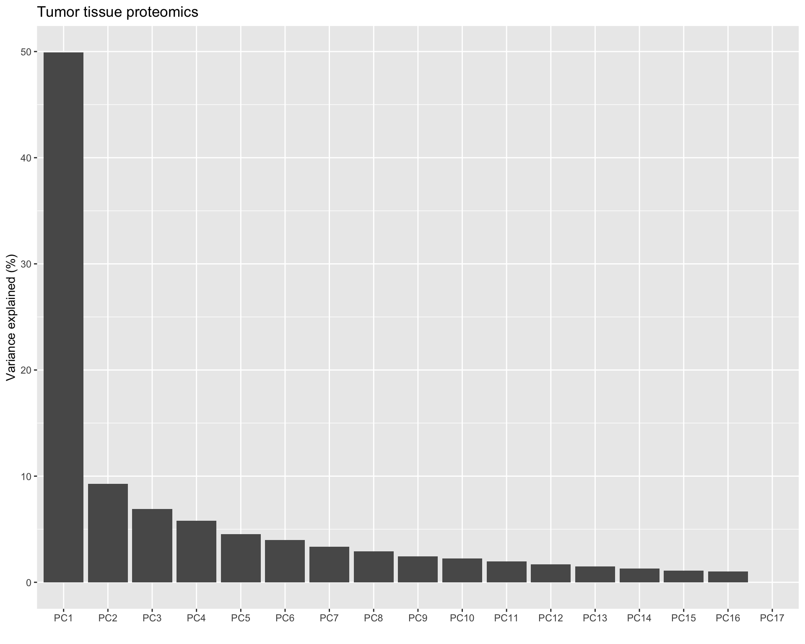
| Version | Author | Date |
|---|---|---|
| 2f62f8a | LiaoQianWu | 2023-05-17 |
Owing to missing values, there might be a situation that only few observations in sample groups, resulting in unreliable t-statistics. To this end, we used probabilistic dropout model to account for data missingness and identify differentially abundant entities that are significantly associated with cancer recurrence. Note that features in heatmap are ordered by their t-statistics.
# Fit linear probabilistic dropout model to normalized data
fit <- proDA::proDA(datMat, design = ~ smpAnno$Recurrence)
# fit
# Check coefficient names for Parameter 'contrast' in proDA::test_diff()
# proDA::result_names(fit)
# Identify significant differentially abundant entities
all_proDAProTumorRes <- proDA::test_diff(fit,
contrast = Intercept + `smpAnno$RecurrenceYes` - Intercept,
sort_by = 'pval')
proDAProTumorRes <- dplyr::select(all_proDAProTumorRes, -c(diff, se, df, avg_abundance, n_approx, n_obs)) %>%
dplyr::filter(pval < 0.05) %>%
dplyr::mutate(Gene = plyr::mapvalues(name,
from = featInfo$Protein.Groups,
to = featInfo$Genes,
warn_missing = F))
# Manually shorten names
proDAProTumorRes$name[107] <- 'P05496;P48201'
proDAProTumorRes$Gene[107] <- 'ATP5MC1;ATP5MC2'
proDAProTumorRes name pval adj_pval t_statistic Gene
1 P05771 0.0001451596 0.4078025 -5.045012 PRKCB
2 Q6IPR1 0.0001616640 0.4078025 -4.989378 ETFRF1
3 P20472 0.0002162261 0.4078025 -4.840082 PVALB
4 Q969X1 0.0006166960 0.7493015 -4.312035 TMBIM1
5 P43358 0.0006621611 0.7493015 -4.276682 MAGEA4
6 Q5EG05 0.0008956204 0.8445700 -4.127142 CARD16
7 Q15042 0.0014439765 0.9890514 3.892216 RAB3GAP1
8 Q9UKZ1 0.0015032293 0.9890514 3.872509 CNOT11
9 Q9Y6X3 0.0015732525 0.9890514 3.850208 MAU2
10 Q9NUJ3 0.0028994299 0.9984939 3.551645 TCP11L1
11 Q3V6T2 0.0030636425 0.9984939 -3.524793 CCDC88A
12 Q6P9B9 0.0036772469 0.9984939 3.435828 INTS5
13 Q8IUR0 0.0039073591 0.9984939 3.406249 TRAPPC5
14 Q8WYJ6 0.0043757931 0.9984939 -3.351063 SEPTIN1
15 Q9H2V7 0.0044891428 0.9984939 -3.338595 SPNS1
16 Q3KRA6 0.0049476635 0.9984939 3.291171 C2orf76
17 P01920 0.0050420496 0.9984939 -3.281953 HLA-DQB1
18 Q96T76 0.0052015736 0.9984939 3.266757 MMS19
19 Q86Y56 0.0052437249 0.9984939 3.262819 DNAAF5
20 Q9Y6Y9 0.0053567617 0.9984939 -3.252412 LY96
21 P63172 0.0077493311 0.9984939 3.071901 DYNLT1
22 P10321 0.0077506407 0.9984939 -3.071818 HLA-C
23 P48382 0.0079797335 0.9984939 -3.057543 RFX5
24 Q96RE7 0.0089585706 0.9984939 3.000776 NACC1
25 P62072 0.0095332446 0.9984939 -2.970225 TIMM10
26 Q14CX7 0.0098419137 0.9984939 2.954554 NAA25
27 P06746 0.0099402195 0.9984939 2.949663 POLB
28 O95379 0.0100619446 0.9984939 -2.943674 TNFAIP8
29 O95696 0.0101131416 0.9984939 2.941176 BRD1
30 Q86U42 0.0106105293 0.9984939 -2.917531 PABPN1
31 P52566 0.0110402639 0.9984939 -2.897960 ARHGDIB
32 P19634 0.0112578397 0.9984939 -2.888333 SLC9A1
33 Q9BY32 0.0118884416 0.9984939 2.861425 ITPA
34 Q15334 0.0120624122 0.9984939 2.854246 LLGL1
35 Q2TAL8 0.0123628881 0.9984939 2.842083 QRICH1
36 P48163 0.0124439898 0.9984939 -2.838849 ME1
37 O15160 0.0129919889 0.9984939 2.817522 POLR1C
38 O15066 0.0131062362 0.9984939 -2.813186 KIF3B
39 Q9H098 0.0132696635 0.9984939 -2.807047 FAM107B
40 Q8NBF6 0.0134359581 0.9984939 2.800876 AVL9
41 P07333 0.0137423677 0.9984939 -2.789697 CSF1R
42 Q92934 0.0140916949 0.9984939 -2.777243 BAD
43 P55957 0.0144368061 0.9984939 -2.765231 BID
44 Q15120 0.0148208634 0.9984939 -2.752187 PDK3
45 Q9BTT0 0.0152592194 0.9984939 2.737693 ANP32E
46 Q9P2D1 0.0156632710 0.9984939 -2.724686 CHD7
47 Q9P287 0.0161429916 0.9984939 2.709658 BCCIP
48 Q96RN5 0.0161974336 0.9984939 2.707980 MED15
49 Q9Y5L0 0.0166137188 0.9984939 -2.695327 TNPO3
50 Q9BTZ2 0.0170379262 0.9984939 -2.682744 DHRS4
51 Q9H9Y6 0.0173139050 0.9984939 2.674719 POLR1B
52 Q8NEU8 0.0174157125 0.9984939 2.671790 APPL2
53 Q99988 0.0175697797 0.9984939 -2.667388 GDF15
54 P28065 0.0175734662 0.9984939 -2.667283 PSMB9
55 Q13576 0.0175917877 0.9984939 -2.666762 IQGAP2
56 P20701 0.0179998195 0.9984939 -2.655296 ITGAL
57 Q96BY6 0.0181120977 0.9984939 -2.652185 DOCK10
58 Q9Y572 0.0181939836 0.9984939 -2.649928 RIPK3
59 Q92766 0.0182129570 0.9984939 2.649406 RREB1
60 P86790;P86791 0.0186164399 0.9984939 2.638436 CCZ1;CCZ1B
61 P19075 0.0186919395 0.9984939 2.636408 TSPAN8
62 Q13231 0.0195521121 0.9984939 -2.613851 CHIT1
63 P28074 0.0196075490 0.9984939 2.612430 PSMB5
64 P30260 0.0199351260 0.9984939 2.604112 CDC27
65 Q8N6R0 0.0204784951 0.9984939 2.590600 EEF1AKNMT
66 Q9BRR9 0.0205384625 0.9984939 -2.589130 ARHGAP9
67 Q8TED4 0.0209175750 0.9984939 -2.579930 SLC37A2
68 Q92562 0.0213210800 0.9984939 -2.570313 FIG4
69 Q6P4Q7 0.0223759151 0.9984939 -2.545972 CNNM4
70 P54803 0.0230207896 0.9984939 2.531626 GALC
71 Q9H4G0 0.0240357408 0.9984939 -2.509808 EPB41L1
72 Q96EH3 0.0241258089 0.9984939 -2.507915 MALSU1
73 Q68E01 0.0243743124 0.9984939 2.502725 INTS3
74 P51812 0.0245558630 0.9984939 -2.498966 RPS6KA3
75 Q15166 0.0249529592 0.9984939 2.490835 PON3
76 Q99731 0.0260913933 0.9984939 -2.468189 CCL19
77 P17568 0.0262636909 0.9984939 -2.464844 NDUFB7
78 O75787 0.0268437949 0.9984939 2.453732 ATP6AP2
79 P49795 0.0272031866 0.9984939 -2.446962 RGS19
80 P14317 0.0277158191 0.9984939 -2.437452 HCLS1
81 Q7Z3U7 0.0283631860 0.9984939 2.425677 MON2
82 Q2TV78 0.0285274029 0.9984939 -2.422730 MST1L
83 Q6P1X6 0.0286671183 0.9984939 -2.420236 C8orf82
84 Q5TCQ9 0.0289232767 0.9984939 -2.415693 MAGI3
85 P06331 0.0291250330 0.9984939 -2.412142 IGHV4-34
86 O00425 0.0292461483 0.9984939 2.410021 IGF2BP3
87 Q9BX97 0.0294460397 0.9984939 -2.406539 PLVAP
88 Q5VWQ0 0.0301241138 0.9984939 -2.394892 RSBN1
89 Q9Y3T9 0.0305512777 0.9984939 2.387681 NOC2L
90 P28062 0.0307631204 0.9984939 -2.384140 PSMB8
91 Q96TA2 0.0308445939 0.9984939 2.382785 YME1L1
92 P26572 0.0308682524 0.9984939 -2.382392 MGAT1
93 Q7Z3T8 0.0309630942 0.9984939 2.380819 ZFYVE16
94 Q8IUI8 0.0310083011 0.9984939 -2.380071 CRLF3
95 Q9Y4B6 0.0310115093 0.9984939 2.380018 DCAF1
96 Q96GK7 0.0312574389 0.9984939 -2.375967 FAHD2A
97 Q86VU5 0.0314218950 0.9984939 -2.373275 COMTD1
98 Q96FS4 0.0316336291 0.9984939 -2.369829 SIPA1
99 P46019 0.0320075469 0.9984939 -2.363795 PHKA2
100 Q9BQ69 0.0324835190 0.9984939 -2.356210 MACROD1
101 Q8WUY1 0.0328137269 0.9984939 -2.351009 THEM6
102 Q14657 0.0329306497 0.9984939 -2.349180 LAGE3
103 Q16798 0.0330350889 0.9984939 -2.347550 ME3
104 P09525 0.0331292382 0.9984939 -2.346086 ANXA4
105 Q9H201 0.0337221996 0.9984939 2.336951 EPN3
106 Q13237 0.0345397179 0.9984939 -2.324603 PRKG2
107 P05496;P48201 0.0355415994 0.9984939 -2.309838 ATP5MC1;ATP5MC2
108 Q8WZA9 0.0356058339 0.9984939 2.308905 IRGQ
109 P09972 0.0360065054 0.9984939 -2.303120 ALDOC
110 O94822 0.0360987206 0.9984939 2.301797 LTN1
111 Q2NL82 0.0365206171 0.9984939 2.295784 TSR1
112 P12830 0.0373167028 0.9984939 -2.284614 CDH1
113 P58107 0.0379659109 0.9984939 2.275668 EPPK1
114 O15335 0.0385990395 0.9984939 -2.267082 CHAD
115 A0A0C4DH67 0.0387627956 0.9984939 -2.264882 IGKV1-8
116 Q9BYM8 0.0391627546 0.9984939 -2.259547 RBCK1
117 Q8IZH2 0.0395963155 0.9984939 2.253820 XRN1
118 A0A0B4J1X5 0.0400672775 0.9984939 -2.247665 IGHV3-74
119 Q16836 0.0401124159 0.9984939 -2.247079 HADH
120 Q14241 0.0405374082 0.9984939 -2.241588 ELOA
121 Q9BYD1 0.0409355929 0.9984939 2.236493 MRPL13
122 Q70UQ0 0.0410023781 0.9984939 2.235643 IKBIP
123 Q14139 0.0410663616 0.9984939 -2.234829 UBE4A
124 Q92600 0.0411654809 0.9984939 2.233572 CNOT9
125 Q9Y3L3 0.0412742277 0.9984939 -2.232196 SH3BP1
126 P33897 0.0415910657 0.9984939 -2.228205 ABCD1
127 Q9BRP4 0.0416569432 0.9984939 2.227378 PAAF1
128 P52849 0.0416745799 0.9984939 2.227157 NDST2
129 Q9H583 0.0418157406 0.9984939 2.225392 HEATR1
130 Q9H078 0.0423338345 0.9984939 -2.218958 CLPB
131 P01911 0.0427337998 0.9984939 -2.214042 HLA-DRB1
132 Q7Z7B0 0.0430560930 0.9984939 -2.210111 FILIP1
133 Q92506 0.0430852757 0.9984939 -2.209757 HSD17B8
134 Q8N6L1 0.0438357995 0.9984939 2.200714 KRTCAP2
135 Q08AD1 0.0441775776 0.9984939 -2.196644 CAMSAP2
136 Q5BJF2 0.0443910249 0.9984939 -2.194117 TMEM97
137 Q96S59 0.0447098196 0.9984939 2.190363 RANBP9
138 P01857 0.0448707670 0.9984939 -2.188478 IGHG1
139 Q9Y6K0 0.0452389684 0.9984939 2.184187 CEPT1
140 Q92734 0.0454535939 0.9984939 2.181702 TFG
141 P56377 0.0456041991 0.9984939 -2.179964 AP1S2
142 Q9HCU5 0.0458638925 0.9984939 -2.176980 PREB
143 Q6UX46 0.0461810059 0.9984939 -2.173357 ALKAL2
144 Q9ULF5 0.0462466772 0.9984939 2.172610 SLC39A10
145 Q9BYD2 0.0466433734 0.9984939 2.168116 MRPL9
146 P04626 0.0466719966 0.9984939 2.167793 ERBB2
147 Q6P9B6 0.0469051294 0.9984939 2.165170 MEAK7
148 P19838 0.0478571428 0.9984939 -2.154584 NFKB1
149 P09326 0.0484146136 0.9984939 -2.148474 CD48
150 P42331 0.0487224652 0.9984939 -2.145129 ARHGAP25
151 Q9NPA8 0.0490356134 0.9984939 2.141745 ENY2
152 Q8N8A2 0.0490666392 0.9984939 -2.141411 ANKRD44proDAProTumorRes$name[107] <- 'P05496;P48201;Q06055'
proDAProTumorRes$Gene[107] <- 'ATP5MC1;ATP5MC2;ATP5MC3'
# Plot molecular signatures in input data
# Order features according to t-statistics
featOrder <- dplyr::arrange(proDAProTumorRes, dplyr::desc(t_statistic))$name
# Change protein names to gene names
datMatSub <- datMat[featOrder, smpOrder]
rownames(datMatSub) <- plyr::mapvalues(rownames(datMatSub),
from = featInfo$Protein.Groups,
to = featInfo$Genes,
warn_missing = F)
pheatmap::pheatmap(datMatSub,
annotation_col = smpRecur,
color = colorRampPalette(c('navy', 'white', 'red'))(100),
cluster_rows = F, cluster_cols = F, show_rownames = F,
scale = 'row', main = 'Tumor Tissue proteomics (proDA)')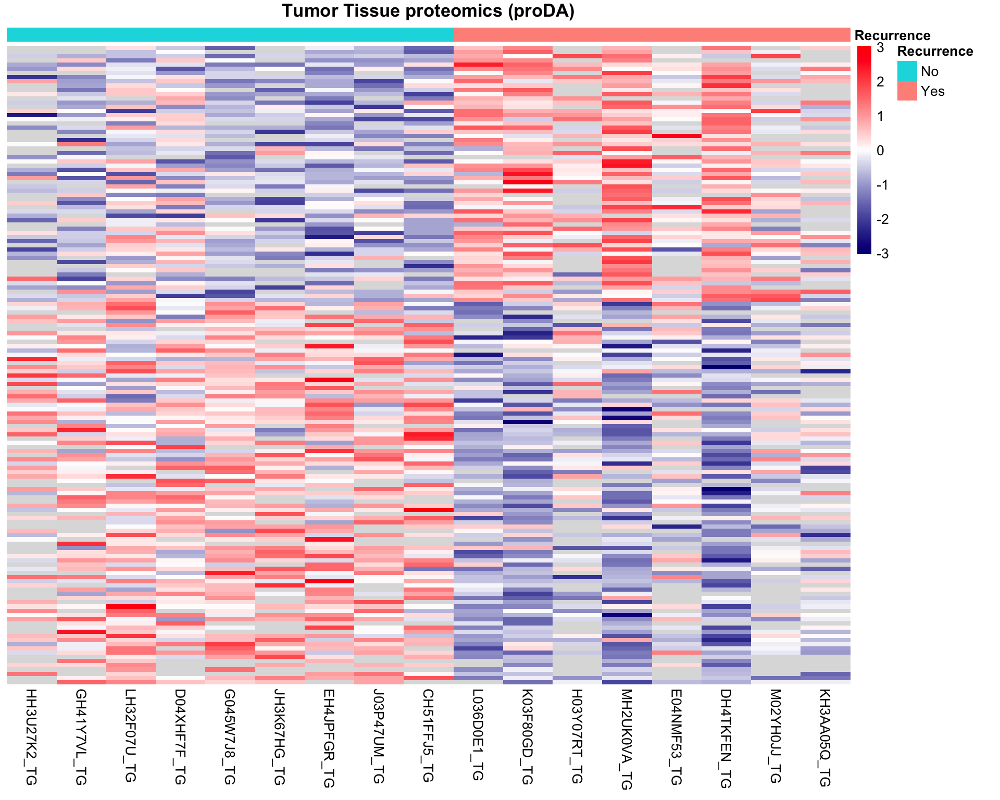
| Version | Author | Date |
|---|---|---|
| 2f62f8a | LiaoQianWu | 2023-05-17 |
Visualize data of top 6 significant features based on proDA result
# Visualize data of top 6 significant features
topSigFeats <- proDAProTumorRes$name[1:6]
topSigFeatData <- tibble::as_tibble(datMat[topSigFeats,], rownames = 'Feature') %>%
tidyr::pivot_longer(cols = -'Feature',
names_to = 'Sample', values_to = 'Abundance') %>%
dplyr::mutate(Feature = plyr::mapvalues(Feature,
from = featInfo$Protein.Groups,
to = featInfo$Genes,
warn_missing = F),
Feature = factor(Feature, levels = plyr::mapvalues(topSigFeats,
from = featInfo$Protein.Groups,
to = featInfo$Genes,
warn_missing = F))) %>%
dplyr::left_join(smpAnno, by = 'Sample')
ggplot(topSigFeatData, aes(x=Recurrence, y=Abundance, col=Recurrence, fill=Recurrence)) +
geom_boxplot(alpha = 0.3, outlier.shape = NA) +
geom_jitter(position = position_jitter(0.2), size = 2, show.legend = F) +
scale_color_manual(values=c('#00BFC4', '#F8766D')) +
scale_fill_manual(values=c('#00BFC4', '#F8766D')) +
facet_wrap(vars(Feature), scales = 'free') +
ggpubr::stat_compare_means(method = 't.test', paired = F,
method.args = list(var.equal = T),
show.legend = F) +
th + theme(strip.text = element_text(size = 13, face = 'bold'))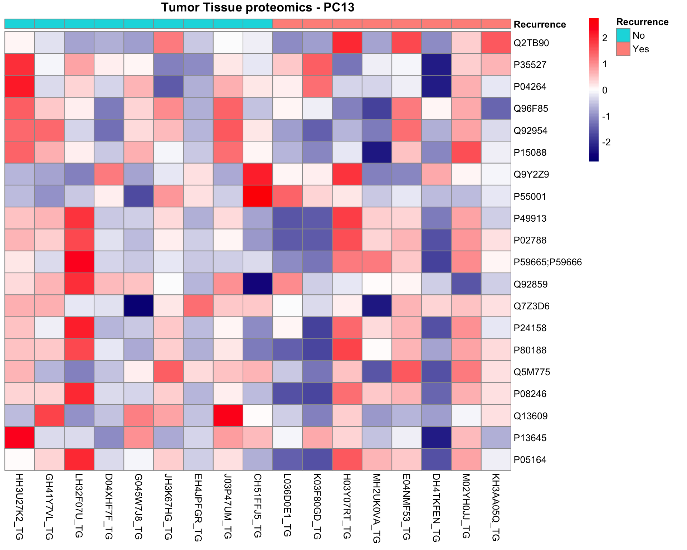
| Version | Author | Date |
|---|---|---|
| 2f62f8a | LiaoQianWu | 2023-05-17 |
Display significant associations between PCs (Var1) and cancer recurrence (Var2)
# Display PCs that can significantly separate recurrence and non-recurrence
# patients
tPCASigRes Var1 Var2 pVal pValAdj Stat Test
1 PC9 Recurrence 0.04128828 0.6193243 -2.232018 T-test# Display proportion of total variance captured by all PCs explained by each PC
varExplained <- pcaRes@sDev^2 / sum(pcaRes@sDev^2)
PC <- paste0('PC', seq(length(varExplained)))
varTab <- data.frame(PC = factor(PC, levels = PC),
Var_explained = varExplained)
ggplot(varTab, aes(x=PC, y=Var_explained*100)) +
geom_col() +
labs(x = '', y = 'Variance explained (%)',
title = 'Tumor tissue proteomics') +
th + theme(axis.text.x = element_text(angle = 90, hjust = 1, vjust = 0.5))PC9 potentially separates recurrence and non-recurrence patients.
# Visualize PCs
ggplot(pcTab, aes(x=Recurrence, y=PC9, col=Recurrence, fill=Recurrence)) +
geom_boxplot(alpha = 0.3, outlier.shape = NA) +
geom_jitter(position = position_jitter(0.2), size = 2, show.legend = F) +
labs(title = 'Tumor Tissue proteomics') +
scale_color_manual(values=c('#00BFC4', '#F8766D')) +
scale_fill_manual(values=c('#00BFC4', '#F8766D')) +
ggpubr::stat_compare_means(method = 't.test', paired = F, size = 6,
method.args = list(var.equal = T), hjust = 0.65,
show.legend = F) +
th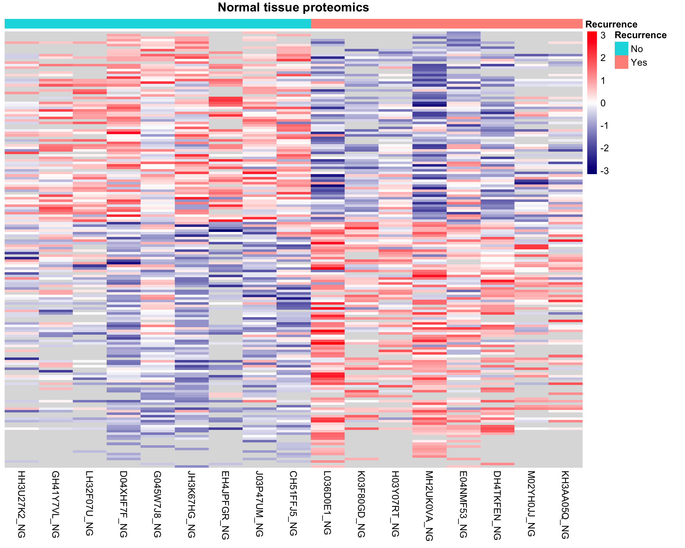
| Version | Author | Date |
|---|---|---|
| 2f62f8a | LiaoQianWu | 2023-05-17 |
Plot molecular signatures captured by PC9 in input data. We took a look at top 20 features with highest loadings and observed protein levels of these top features through heatmap. Note that features in heatmap are ordered by their loadings. There is no single feature that can decently hint if patients will suffer cancer recurrence or not, which means each of these top features contributes a bit to explaining variation between recurrence and non-recurrence patients.
# Plot molecular signatures in input data
# Extract top features with highest loadings
topFeats <- pcTopFeatTab$PC9$Feature[1:20]
# Order features by loadings
topFeatsIdx <- sapply(topFeats, function(feat) {which(rownames(datMat) == feat)})
# Change protein names to gene names
datMatSub <- datMat[topFeatsIdx, smpOrder]
rownames(datMatSub) <- plyr::mapvalues(rownames(datMatSub),
from = featInfo$Protein.Groups,
to = featInfo$Genes,
warn_missing = F)
pheatmap::pheatmap(datMatSub,
annotation_col = smpRecur,
color = colorRampPalette(c('navy', 'white', 'red'))(100),
cluster_rows = F, cluster_cols = F,
scale = 'row', main = 'Tumor Tissue proteomics - PC9')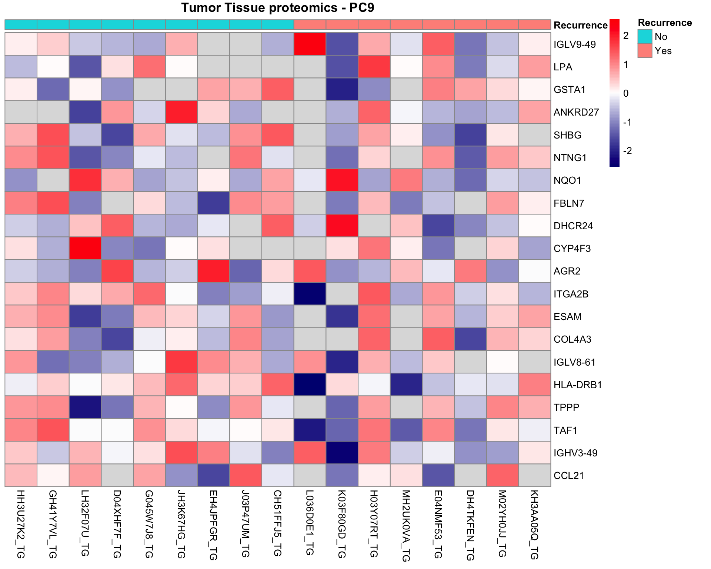
| Version | Author | Date |
|---|---|---|
| 2f62f8a | LiaoQianWu | 2023-05-17 |
Display top features that build the PC13
# Display top features with highest loadings of PC of interest
dplyr::mutate(pcTopFeatTab$PC9, Gene = plyr::mapvalues(Feature,
from = featInfo$Protein.Groups,
to = featInfo$Genes,
warn_missing = F)) Feature Loading Gene
1 A0A0B4J1Y8 0.14423523 IGLV9-49
2 P08519 0.10116088 LPA
3 P08263 0.09923267 GSTA1
4 Q96NW4 0.08053470 ANKRD27
5 P04278 0.07883000 SHBG
6 Q9Y2I2 0.07775913 NTNG1
7 P15559 0.07490409 NQO1
8 Q53RD9 0.07371529 FBLN7
9 Q15392 0.07334389 DHCR24
10 Q08477 0.07282900 CYP4F3
11 O95994 0.07219705 AGR2
12 P08514 0.07074064 ITGA2B
13 Q96AP7 0.07042163 ESAM
14 Q01955 0.06641045 COL4A3
15 A0A075B6I0 0.06510128 IGLV8-61
16 P01911 0.06497715 HLA-DRB1
17 O94811 0.06486308 TPPP
18 P21675 0.06473622 TAF1
19 A0A0A0MS15 0.06451973 IGHV3-49
20 O00585 0.06423677 CCL21
21 O60218 0.06391057 AKR1B10
22 Q08AD1 0.06208670 CAMSAP2
23 Q16787 0.06111225 LAMA3
24 Q2M2W7 0.05964726 C17orf58
25 Q9BXM0 0.05900277 PRX
26 Q9H773 0.05817167 DCTPP1
27 O95760 0.05813563 IL33
28 O75636 0.05715478 FCN3
29 P00915 0.05606202 CA1
30 P12532 0.05483420 CKMT1ANormal samples
Display significant associations between learned PCs (Var1) and metadata variables (Var2)
# Subset normal samples
smpNormalIdx <- which(colData(proTissue)$Condition == 'Normal')
proNormal <- proTissue[, smpNormalIdx]
# Display significant associations between PCs and metadata variables
proNormalAssoRes <- doSOA(proNormal, meta_var = c('Recurrence', 'Gender', 'Age',
'Smoking', 'Stage', 'Metastasis'),
do_onlyPCA = T, pca_method = 'ppca', num_PCs = 15)
proNormalAssoRes$tPCASigRes Var1 Var2 pVal pValAdj Stat Test
1 PC15 Age 0.02147464 0.9129617 0.5524198 Correlation
2 PC7 Gender 0.03601193 0.9129617 -2.3030416 T-testDisplay significant associations between features (Var1) and cancer recurrence (Var2) and observe molecular signatures in input data through heatmap. Note that features in heatmap are ordered by their t-statistics.
# Perform analysis
proNormalRes <- doSOA(proNormal, meta_var = 'Recurrence', pca_method = 'ppca',
num_PCs = 15, num_PCfeats = 30)
datMat <- proNormalRes$data
smpAnno <- proNormalRes$smpMetadata
tFeatSigRes <- proNormalRes$tFeatSigRes
tPCASigRes <- proNormalRes$tPCASigRes
pcaRes <- proNormalRes$pcaRes
pcTab <- proNormalRes$pcTab
pcTopFeatTab <- proNormalRes$pcTopFeatTab
# Display features that can significantly separate recurrence and non-recurrence
# patients
tFeatSigRes <- dplyr::mutate(tFeatSigRes, Gene = plyr::mapvalues(Var1,
from = featInfo$Protein.Groups,
to = featInfo$Genes,
warn_missing = F)) %>%
dplyr::select(-Test)
# Manually shorten names
tFeatSigRes$Var1[16] <- 'A0A075B6P5'
tFeatSigRes$Gene[16] <- 'IGKV2-28'
tFeatSigRes$Var1[100] <- 'A6NCE7'
tFeatSigRes$Gene[100] <- 'MAP1LC3B'
tFeatSigRes Var1 Var2 pVal pValAdj Stat Gene
1 O75208 Recurrence 0.0007025036 0.9997487 -4.247328 COQ9
2 Q96RF0 Recurrence 0.0011029554 0.9997487 4.024512 SNX18
3 Q8TED4 Recurrence 0.0012106565 0.9997487 4.645000 SLC37A2
4 Q13509 Recurrence 0.0013669561 0.9997487 4.053656 TUBB3
5 P61086 Recurrence 0.0017105247 0.9997487 -3.809264 UBE2K
6 O14548 Recurrence 0.0023673610 0.9997487 -3.650512 COX7A2L
7 P08842 Recurrence 0.0030385274 0.9997487 4.431557 STS
8 P78381 Recurrence 0.0031581349 0.9997487 3.860411 SLC35A2
9 Q9UKD2 Recurrence 0.0032422540 0.9997487 -4.378023 MRTO4
10 Q5J8M3 Recurrence 0.0039598928 0.9997487 -3.493927 EMC4
11 A0A075B6K5 Recurrence 0.0042964227 0.9997487 3.359986 IGLV3-9
12 Q14728 Recurrence 0.0055589607 0.9997487 -3.234329 MFSD10
13 Q96CP2 Recurrence 0.0061874091 0.9997487 3.375889 FLYWCH2
14 Q9BXW7 Recurrence 0.0068285461 0.9997487 -3.133823 HDHD5
15 P53801 Recurrence 0.0095552318 0.9997487 3.131315 PTTG1IP
16 A0A075B6P5 Recurrence 0.0097682682 0.9997487 2.958248 IGKV2-28
17 A0A0C4DH34 Recurrence 0.0101669215 0.9997487 2.938565 IGHV4-28
18 P01834 Recurrence 0.0108394890 0.9997487 2.907009 IGKC
19 Q99627 Recurrence 0.0121625735 0.9997487 -2.850159 COPS8
20 P52788 Recurrence 0.0138428230 0.9997487 -2.812235 SMS
21 Q15434 Recurrence 0.0140912338 0.9997487 3.248255 RBMS2
22 Q96CW5 Recurrence 0.0142078004 0.9997487 -2.773171 TUBGCP3
23 O15438 Recurrence 0.0147044604 0.9997487 -3.010478 ABCC3
24 O43674 Recurrence 0.0148852644 0.9997487 2.883221 NDUFB5
25 P21964 Recurrence 0.0159213079 0.9997487 -2.716548 COMT
26 O00399 Recurrence 0.0174844170 0.9997487 -2.753627 DCTN6
27 Q5HYK3 Recurrence 0.0181204255 0.9997487 -2.734336 COQ5
28 Q9Y5Z4 Recurrence 0.0181854398 0.9997487 2.650163 HEBP2
29 P24158 Recurrence 0.0182111183 0.9997487 2.649457 PRTN3
30 P06310 Recurrence 0.0182446887 0.9997487 2.648535 IGKV2-30
31 A0A075B6I0 Recurrence 0.0184571119 0.9997487 2.692468 IGLV8-61
32 O14791 Recurrence 0.0190491006 0.9997487 2.626923 APOL1
33 P01876 Recurrence 0.0195191676 0.9997487 2.614697 IGHA1
34 Q5TCQ9 Recurrence 0.0197615397 0.9997487 3.760779 MAGI3
35 Q96CT7 Recurrence 0.0198284630 0.9997487 2.606806 CCDC124
36 Q14166 Recurrence 0.0200973366 0.9997487 -2.600042 TTLL12
37 O95786 Recurrence 0.0203065449 0.9997487 2.594838 DDX58
38 O75689 Recurrence 0.0210840893 0.9997487 2.622542 ADAP1
39 P51153 Recurrence 0.0212599751 0.9997487 2.571758 RAB13
40 P24043 Recurrence 0.0213780254 0.9997487 -2.590275 LAMA2
41 Q13363 Recurrence 0.0214212384 0.9997487 -2.567953 CTBP1
42 P31153 Recurrence 0.0215191718 0.9997487 -2.565655 MAT2A
43 Q9Y3D0 Recurrence 0.0216381386 0.9997487 -2.584056 CIAO2B
44 Q12884 Recurrence 0.0217184579 0.9997487 2.606930 FAP
45 A1A4S6 Recurrence 0.0223434802 0.9997487 -2.699214 ARHGAP10
46 Q9BVP2 Recurrence 0.0230759114 0.9997487 -2.574961 GNL3
47 P0DOY2;P0DOY3 Recurrence 0.0239909225 0.9997487 2.510753 IGLC2;IGLC3
48 Q7Z3C6 Recurrence 0.0244675234 0.9997487 2.520700 ATG9A
49 A0M8Q6 Recurrence 0.0244766612 0.9997487 2.500603 IGLC7
50 P49326 Recurrence 0.0246685278 0.9997487 -2.539699 FMO5
51 Q99909 Recurrence 0.0250515849 0.9997487 2.750190 SSX3
52 Q96T88 Recurrence 0.0252146237 0.9997487 -2.745992 UHRF1
53 Q92734 Recurrence 0.0252664517 0.9997487 -2.484502 TFG
54 Q6IQ23 Recurrence 0.0252893406 0.9997487 -2.959805 PLEKHA7
55 Q8TAQ2 Recurrence 0.0256345143 0.9997487 -2.477162 SMARCC2
56 Q9Y2Z9 Recurrence 0.0260227935 0.9997487 -2.488813 COQ6
57 P01877 Recurrence 0.0261596349 0.9997487 2.535377 IGHA2
58 P35080 Recurrence 0.0263671341 0.9997487 -2.462845 PFN2
59 Q13769 Recurrence 0.0263918229 0.9997487 -2.602197 THOC5
60 Q99442 Recurrence 0.0268276390 0.9997487 2.454039 SEC62
61 Q9UDR5 Recurrence 0.0272488225 0.9997487 -2.446109 AASS
62 Q7Z460 Recurrence 0.0278832014 0.9997487 -2.618417 CLASP1
63 Q9Y221 Recurrence 0.0281293642 0.9997487 -2.613057 NIP7
64 Q11201 Recurrence 0.0283492114 0.9997487 2.608310 ST3GAL1
65 Q9UKR5 Recurrence 0.0285718470 0.9997487 -2.421936 ERG28
66 P19827 Recurrence 0.0292930882 0.9997487 2.409201 ITIH1
67 Q9NXH8 Recurrence 0.0303080989 0.9997487 -2.391774 TOR4A
68 P62330 Recurrence 0.0310237106 0.9997487 -2.379816 ARF6
69 P30711 Recurrence 0.0311012239 0.9997487 -2.378537 GSTT1
70 Q14012 Recurrence 0.0317515973 0.9997487 -2.494370 CAMK1
71 Q9NYY8 Recurrence 0.0320380026 0.9997487 -2.453644 FASTKD2
72 P36222 Recurrence 0.0324252261 0.9997487 2.418176 CHI3L1
73 Q9BZ23 Recurrence 0.0324268822 0.9997487 2.660855 PANK2
74 Q96MH6 Recurrence 0.0327237650 0.9997487 -2.352421 TMEM68
75 Q15629 Recurrence 0.0328483180 0.9997487 2.350467 TRAM1
76 Q9NUL5 Recurrence 0.0329146895 0.9997487 2.349429 SHFL
77 P20160 Recurrence 0.0338799105 0.9997487 2.334547 AZU1
78 Q8TB37 Recurrence 0.0345227247 0.9997487 -2.360815 NUBPL
79 O60493 Recurrence 0.0359149723 0.9997487 2.304436 SNX3
80 O43823 Recurrence 0.0361705000 0.9997487 -2.513547 AKAP8
81 Q13546 Recurrence 0.0363077127 0.9997487 2.298810 RIPK1
82 P50281 Recurrence 0.0363945031 0.9997487 2.297574 MMP14
83 Q96EY8 Recurrence 0.0366212660 0.9997487 -2.294359 MMAB
84 Q9Y572 Recurrence 0.0368537533 0.9997487 2.448393 RIPK3
85 P80188 Recurrence 0.0372679018 0.9997487 2.285292 LCN2
86 Q96S99 Recurrence 0.0373585413 0.9997487 2.299883 PLEKHF1
87 Q8WUM0 Recurrence 0.0377733857 0.9997487 -2.278306 NUP133
88 O43731 Recurrence 0.0379275382 0.9997487 2.553173 KDELR3
89 P49913 Recurrence 0.0388017346 0.9997487 2.264361 CAMP
90 Q9H061 Recurrence 0.0388076575 0.9997487 2.264281 TMEM126A
91 P02753 Recurrence 0.0392678023 0.9997487 2.258154 RBP4
92 O96005 Recurrence 0.0393005501 0.9997487 2.257720 CLPTM1
93 Q12830 Recurrence 0.0393315180 0.9997487 -2.408720 BPTF
94 Q8N357 Recurrence 0.0397769734 0.9997487 2.251451 SLC35F6
95 P29034 Recurrence 0.0398889566 0.9997487 -3.001347 S100A2
96 Q13547 Recurrence 0.0399591257 0.9997487 -2.249073 HDAC1
97 O60749 Recurrence 0.0400023366 0.9997487 2.248510 SNX2
98 Q5T1C6 Recurrence 0.0405301317 0.9997487 2.390410 THEM4
99 P01591 Recurrence 0.0405794817 0.9997487 2.241048 JCHAIN
100 A6NCE7 Recurrence 0.0409678573 0.9997487 2.268687 MAP1LC3B
101 P28070 Recurrence 0.0411964782 0.9997487 2.233179 PSMB4
102 O60318 Recurrence 0.0412957482 0.9997487 -2.264377 MCM3AP
103 P11532 Recurrence 0.0413530452 0.9997487 -2.263627 DMD
104 Q29RF7 Recurrence 0.0414434502 0.9997487 -2.230060 PDS5A
105 Q92878 Recurrence 0.0414731611 0.9997487 2.229686 RAD50
106 Q9UL12 Recurrence 0.0420475933 0.9997487 -2.416982 SARDH
107 Q53EL6 Recurrence 0.0421281336 0.9997487 -2.221504 PDCD4
108 Q9H1H9 Recurrence 0.0427211365 0.9997487 2.228862 KIF13A
109 P49662 Recurrence 0.0427406788 0.9997487 2.228619 CASP4
110 Q9UBU8 Recurrence 0.0429549670 0.9997487 -2.468059 MORF4L1
111 P20674 Recurrence 0.0434291044 0.9997487 -2.205596 COX5A
112 Q9Y265 Recurrence 0.0437810264 0.9997487 -2.201369 RUVBL1
113 Q3ZCW2 Recurrence 0.0440647311 0.9997487 -2.249149 LGALSL
114 Q8N4Q0 Recurrence 0.0446055915 0.9997487 -2.242378 ZADH2
115 P61457 Recurrence 0.0450149496 0.9997487 -2.186794 PCBD1
116 P20290 Recurrence 0.0453889720 0.9997487 -2.213129 BTF3
117 O43169 Recurrence 0.0459976241 0.9997487 -2.175449 CYB5B
118 Q86U44 Recurrence 0.0461944544 0.9997487 -2.222931 METTL3
119 P00403 Recurrence 0.0464596197 0.9997487 -2.170193 MT-CO2
120 Q15386 Recurrence 0.0470003559 0.9997487 -2.164103 UBE3C
121 Q9Y672 Recurrence 0.0473307753 0.9997487 -2.341148 ALG6
122 Q99807 Recurrence 0.0484257536 0.9997487 -2.219287 COQ7
123 P05976 Recurrence 0.0485534776 0.9997487 2.146963 MYL1
124 Q5T1J5;Q9Y6H1 Recurrence 0.0489298775 0.9997487 -2.240895 CHCHD2;CHCHD2P9
125 O15382 Recurrence 0.0498422721 0.9997487 -2.133121 BCAT2tFeatSigRes$Var1[16] <- 'A0A075B6P5;A0A087WW87;P01614;P01615'
tFeatSigRes$Gene[16] <- 'IGKV2-28;IGKV2-40;IGKV2D-28;IGKV2D-40'
tFeatSigRes$Var1[100] <- 'A6NCE7;Q9GZQ8'
tFeatSigRes$Gene[100] <- 'MAP1LC3B;MAP1LC3B2'
# Plot molecular signatures in input data
# Order features according to t-statistics
featOrder <- dplyr::arrange(tFeatSigRes, dplyr::desc(Stat))$Var1
# Arrange samples to make same groups in same clusters
smpOrder <- c(which(smpAnno$Recurrence == 'No'),
which(smpAnno$Recurrence == 'Yes'))
# Prepare recurrence table for annotating samples in heatmap
smpRecur <- dplyr::select(smpAnno, Sample, Recurrence) %>%
tibble::column_to_rownames('Sample')
# Change protein names to gene names
datMatSub <- datMat[featOrder, smpOrder]
rownames(datMatSub) <- plyr::mapvalues(rownames(datMatSub),
from = featInfo$Protein.Groups,
to = featInfo$Genes,
warn_missing = F)
pheatmap::pheatmap(datMatSub,
annotation_col = smpRecur,
color = colorRampPalette(c('navy', 'white', 'red'))(100),
cluster_rows = F, cluster_cols = F, show_rownames = F,
scale = 'row', main = 'Normal tissue proteomics')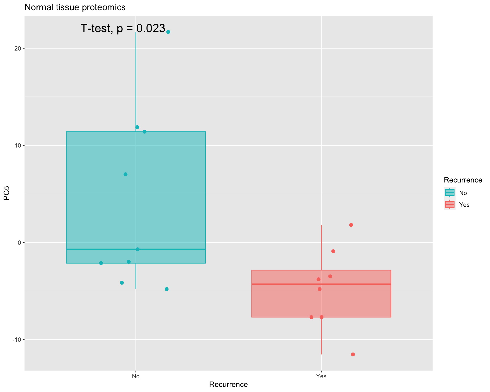
| Version | Author | Date |
|---|---|---|
| 2f62f8a | LiaoQianWu | 2023-05-17 |
Use probabilistic dropout model to account for data missingness and identify differentially abundant entities that are significantly associated with cancer recurrence. Note that features in heatmap are ordered by their t-statistics.
# Fit linear probabilistic dropout model to normalized data
fit <- proDA::proDA(datMat, design = ~ smpAnno$Recurrence)
# fit
# Check coefficient names for Parameter 'contrast' in proDA::test_diff()
# proDA::result_names(fit)
# Identify significant differentially abundant entities
all_proDAProNormalRes <- proDA::test_diff(fit,
contrast = Intercept + `smpAnno$RecurrenceYes` - Intercept,
sort_by = 'pval')
proDAProNormalRes <- dplyr::select(all_proDAProNormalRes, -c(diff, se, df, avg_abundance, n_approx, n_obs)) %>%
dplyr::filter(pval < 0.05) %>%
dplyr::mutate(Gene = plyr::mapvalues(name,
from = featInfo$Protein.Groups,
to = featInfo$Genes,
warn_missing = F))
# Manually shorten names
proDAProNormalRes$name[19] <- 'A0A075B6P5;A0A087WW87'
proDAProNormalRes$Gene[19] <- 'IGKV2-28;IGKV2-40'
proDAProNormalRes name pval adj_pval t_statistic Gene
1 Q8TED4 0.0005161563 0.9997905 -4.400727 SLC37A2
2 O75208 0.0011841403 0.9997905 3.989585 COQ9
3 P08842 0.0025149740 0.9997905 -3.621005 STS
4 Q96RF0 0.0033272729 0.9997905 -3.484564 SNX18
5 A0A075B6K5 0.0042017588 0.9997905 -3.370845 IGLV3-9
6 Q96CP2 0.0052802689 0.9997905 -3.259431 FLYWCH2
7 P78381 0.0054647971 0.9997905 -3.242667 SLC35A2
8 Q13509 0.0059900132 0.9997905 -3.197862 TUBB3
9 Q15434 0.0065593937 0.9997905 -3.153488 RBMS2
10 O15438 0.0069012952 0.9997905 3.128639 ABCC3
11 Q5TCQ9 0.0072743377 0.9997905 -3.102878 MAGI3
12 O14548 0.0075032669 0.9997905 3.087707 COX7A2L
13 Q6IQ23 0.0083121167 0.9997905 3.037534 PLEKHA7
14 P01877 0.0084345811 0.9997905 -3.030359 IGHA2
15 P53801 0.0089387005 0.9997905 -3.001866 PTTG1IP
16 P01834 0.0101756397 0.9997905 -2.938143 IGKC
17 A0A0C4DH34 0.0102598805 0.9997905 -2.934084 IGHV4-28
18 Q9UKD2 0.0105801617 0.9997905 2.918943 MRTO4
19 A0A075B6P5;A0A087WW87 0.0107789240 0.9997905 -2.909771 IGKV2-28;IGKV2-40
20 Q9BXW7 0.0108046192 0.9997905 2.908597 HDHD5
21 P61086 0.0110715138 0.9997905 2.896566 UBE2K
22 Q14728 0.0125274342 0.9997905 2.835543 MFSD10
23 Q99909 0.0137295522 0.9997905 -2.790159 SSX3
24 Q96T88 0.0152421264 0.9997905 2.738250 UHRF1
25 P21964 0.0172063457 0.9997905 2.677832 COMT
26 Q5HYK3 0.0175361937 0.9997905 2.668344 COQ5
27 P01876 0.0176333183 0.9997905 -2.665584 IGHA1
28 Q9BZ23 0.0178960255 0.9997905 -2.658189 PANK2
29 P24158 0.0186122578 0.9997905 -2.638548 PRTN3
30 O14791 0.0186362324 0.9997905 -2.637903 APOL1
31 P06310 0.0190078621 0.9997905 -2.628009 IGKV2-30
32 P24043 0.0209622482 0.9997905 2.578857 LAMA2
33 Q12884 0.0210504665 0.9997905 -2.576743 FAP
34 P52788 0.0210963629 0.9997905 2.575647 SMS
35 O75689 0.0217104494 0.9997905 -2.561196 ADAP1
36 P0DOY2;P0DOY3 0.0226214065 0.9997905 -2.540465 IGLC2;IGLC3
37 O43731 0.0227420550 0.9997905 -2.537779 KDELR3
38 Q9Y2Z9 0.0233413166 0.9997905 2.524638 COQ6
39 P36222 0.0238543995 0.9997905 -2.513641 CHI3L1
40 O43674 0.0241040928 0.9997905 -2.508371 NDUFB5
41 A0M8Q6 0.0245830961 0.9997905 -2.498404 IGLC7
42 Q9Y5Z4 0.0247966323 0.9997905 -2.494021 HEBP2
43 Q96CW5 0.0259927179 0.9997905 2.470114 TUBGCP3
44 P35080 0.0268477504 0.9997905 2.453657 PFN2
45 Q14166 0.0269283072 0.9997905 2.452133 TTLL12
46 Q9UDR5 0.0272359195 0.9997905 2.446350 AASS
47 O00399 0.0278379527 0.9997905 2.435210 DCTN6
48 Q9Y572 0.0286538841 0.9997905 -2.420472 RIPK3
49 P49326 0.0294468368 0.9997905 2.406525 FMO5
50 P19827 0.0294654932 0.9997905 -2.406201 ITIH1
51 Q96CT7 0.0299856170 0.9997905 -2.397250 CCDC124
52 Q9Y3D0 0.0303029831 0.9997905 2.391861 CIAO2B
53 Q9Y221 0.0309642663 0.9997905 2.380800 NIP7
54 Q9NYY8 0.0317493186 0.9997905 2.367955 FASTKD2
55 Q9UKR5 0.0320022759 0.9997905 2.363880 ERG28
56 Q14012 0.0328106184 0.9997905 2.351058 CAMK1
57 P30711 0.0331276395 0.9997905 2.346111 GSTT1
58 Q9BVP2 0.0332082234 0.9997905 2.344860 GNL3
59 Q3ZCW2 0.0339784261 0.9997905 2.333051 LGALSL
60 Q9Y672 0.0345503659 0.9997905 2.324444 ALG6
61 Q9UBU8 0.0347916421 0.9997905 2.320853 MORF4L1
62 Q8TB37 0.0357858866 0.9997905 2.306298 NUBPL
63 Q96EY8 0.0362111467 0.9997905 2.300188 MMAB
64 P50281 0.0365121931 0.9997905 -2.295903 MMP14
65 Q9NXH8 0.0366259928 0.9997905 2.294292 TOR4A
66 Q15629 0.0368048702 0.9997905 -2.291769 TRAM1
67 A0A075B6I0 0.0375648110 0.9997905 -2.281178 IGLV8-61
68 Q8N4Q0 0.0376021499 0.9997905 2.280663 ZADH2
69 Q6N069 0.0376187749 0.9997905 2.280434 NAA16
70 Q7Z3C6 0.0379815654 0.9997905 -2.275455 ATG9A
71 Q5T1C6 0.0380229185 0.9997905 -2.274890 THEM4
72 P80188 0.0381015237 0.9997905 -2.273818 LCN2
73 P02753 0.0385801119 0.9997905 -2.267337 RBP4
74 Q96MH6 0.0391423844 0.9997905 2.259817 TMEM68
75 Q11201 0.0391961756 0.9997905 -2.259103 ST3GAL1
76 P51153 0.0392989697 0.9997905 -2.257741 RAB13
77 P11532 0.0394755946 0.9997905 2.255409 DMD
78 Q9H1H9 0.0398807249 0.9997905 -2.250095 KIF13A
79 Q99442 0.0404414419 0.9997905 -2.242824 SEC62
80 O95786 0.0406442422 0.9997905 -2.240217 DDX58
81 Q9UL12 0.0412887176 0.9997905 2.232012 SARDH
82 Q99720 0.0419552976 0.9997905 2.223651 SIGMAR1
83 Q9H061 0.0419731154 0.9997905 -2.223430 TMEM126A
84 P20160 0.0420935832 0.9997905 -2.221932 AZU1
85 P49913 0.0420936333 0.9997905 -2.221932 CAMP
86 A6NCE7;Q9GZQ8 0.0423802229 0.9997905 -2.218386 MAP1LC3B;MAP1LC3B2
87 A1A4S6 0.0428338531 0.9997905 2.212819 ARHGAP10
88 Q86U44 0.0428364120 0.9997905 2.212787 METTL3
89 Q8N357 0.0431926233 0.9997905 -2.208454 SLC35F6
90 P02538 0.0432164187 0.9997905 -2.208166 KRT6A
91 Q99627 0.0440327008 0.9997905 2.198365 COPS8
92 Q9Y296 0.0458959400 0.9997905 2.176613 TRAPPC4
93 Q99807 0.0462112558 0.9997905 2.173013 COQ7
94 P61457 0.0464562193 0.9997905 2.170232 PCBD1
95 P55081 0.0465480008 0.9997905 2.169193 MFAP1
96 P31153 0.0465552205 0.9997905 2.169112 MAT2A
97 O75616 0.0472030732 0.9997905 2.161836 ERAL1
98 Q9NRF9 0.0473024402 0.9997905 2.160728 POLE3
99 Q96S99 0.0474052517 0.9997905 -2.159584 PLEKHF1
100 P49662 0.0477849530 0.9997905 -2.155380 CASP4
101 P01591 0.0495505890 0.9997905 -2.136224 JCHAIN
102 Q3KQZ1 0.0497862552 0.9997905 2.133716 SLC25A35
103 Q6ZXV5 0.0497890320 0.9997905 2.133686 TMTC3proDAProNormalRes$name[19] <- 'A0A075B6P5;A0A087WW87;P01614;P01615'
proDAProNormalRes$Gene[19] <- 'IGKV2-28;IGKV2-40;IGKV2D-28;IGKV2D-40'
# Plot molecular signatures in input data
# Order features according to t-statistics
featOrder <- dplyr::arrange(proDAProNormalRes, dplyr::desc(t_statistic))$name
# Change protein names to gene names
datMatSub <- datMat[featOrder, smpOrder]
rownames(datMatSub) <- plyr::mapvalues(rownames(datMatSub),
from = featInfo$Protein.Groups,
to = featInfo$Genes,
warn_missing = F)
pheatmap::pheatmap(datMatSub,
annotation_col = smpRecur,
color = colorRampPalette(c('navy', 'white', 'red'))(100),
cluster_rows = F, cluster_cols = F, show_rownames = F,
scale = 'row', main = 'Normal Tissue proteomics (proDA)')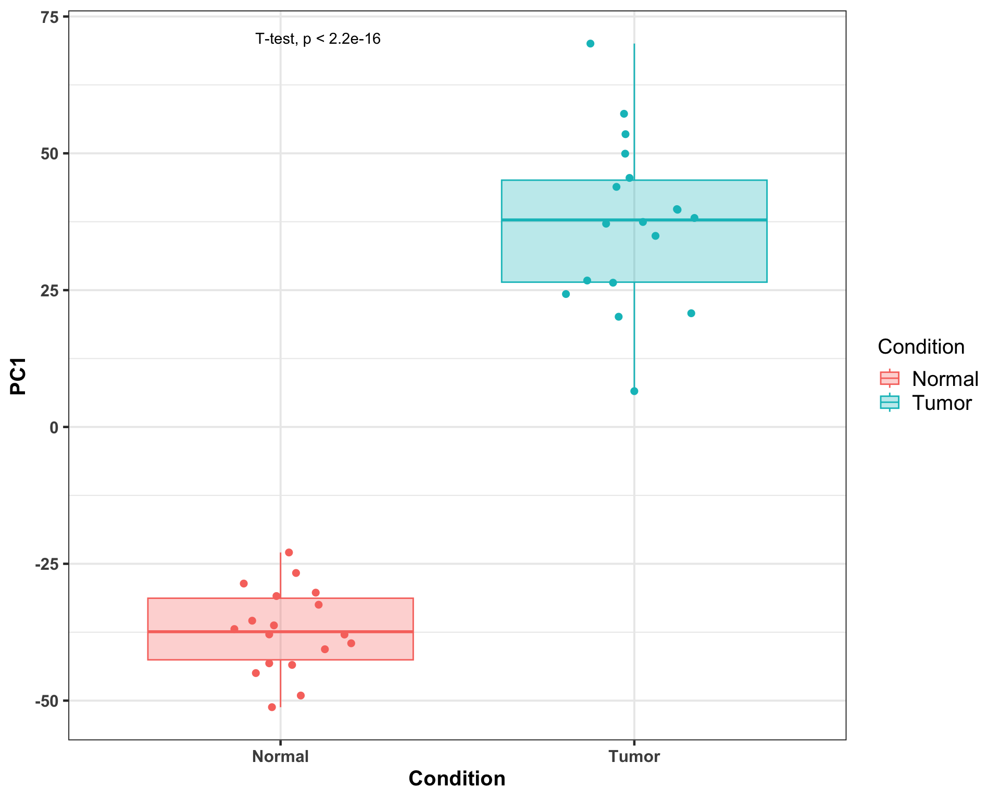
| Version | Author | Date |
|---|---|---|
| 2f62f8a | LiaoQianWu | 2023-05-17 |
Visualize data of top 6 significant features based on proDA result
# Visualize data of top 6 significant features
topSigFeats <- proDAProNormalRes$name[1:6]
topSigFeatData <- tibble::as_tibble(datMat[topSigFeats,], rownames = 'Feature') %>%
tidyr::pivot_longer(cols = -'Feature',
names_to = 'Sample', values_to = 'Abundance') %>%
dplyr::mutate(Feature = plyr::mapvalues(Feature,
from = featInfo$Protein.Groups,
to = featInfo$Genes,
warn_missing = F),
Feature = factor(Feature, levels = plyr::mapvalues(topSigFeats,
from = featInfo$Protein.Groups,
to = featInfo$Genes,
warn_missing = F))) %>%
dplyr::left_join(smpAnno, by = 'Sample')
ggplot(topSigFeatData, aes(x=Recurrence, y=Abundance, col=Recurrence, fill=Recurrence)) +
geom_boxplot(alpha = 0.3, outlier.shape = NA) +
geom_jitter(position = position_jitter(0.2), size = 2, show.legend = F) +
scale_color_manual(values=c('#00BFC4', '#F8766D')) +
scale_fill_manual(values=c('#00BFC4', '#F8766D')) +
facet_wrap(vars(Feature), scales = 'free') +
ggpubr::stat_compare_means(method = 't.test', paired = F,
method.args = list(var.equal = T),
show.legend = F) +
th + theme(strip.text = element_text(size = 13, face = 'bold'))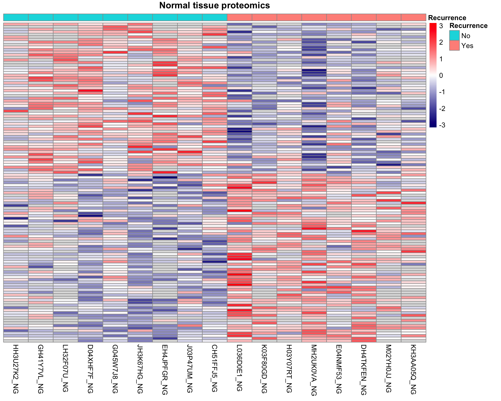
There is no significant association between PCs (Var1) and cancer recurrence (Var2).
# Display PCs that can significantly separate recurrence and non-recurrence
# patients
tPCASigRes[1] Var1 Var2 pVal pValAdj Stat Test
<0 rows> (or 0-length row.names)Difference in tissue conditions
Differences between Tumor and Normal samples (Tumor matrix - Normal
matrix):
Display significant associations between features (Var1) and cancer recurrence (Var2) and observe molecular signatures in input data through heatmap. Note that features in heatmap are ordered by their t-statistics.
# Subset tumor samples
smpTumorIdx <- which(colData(proTissue)$Condition == 'Tumor')
proTumor <- proTissue[, smpTumorIdx]
# Subset normal samples
smpNormalIdx <- which(colData(proTissue)$Condition == 'Normal')
proNormal <- proTissue[, smpNormalIdx]
# Modify column names for matching two matrices
colnames(proTumor) <- stringr::str_remove(colnames(proTumor), '_TG')
colnames(proNormal) <- stringr::str_remove(colnames(proNormal), '_NG')
# Retrieve data matrix
proTumorMat <- SummarizedExperiment::assay(proTumor)
proNormalMat <- SummarizedExperiment::assay(proNormal)
# Subtract normal matrix by tumor matrix
if (identical(colnames(proTumorMat), colnames(proNormalMat)) &
identical(rownames(proTumorMat), rownames(proNormalMat))) {
proTissueDiffMat <- proTumorMat - proNormalMat
allNAsIdx <- which(apply(proTissueDiffMat, 1, function(x) {all(is.na(x))}))
proTissueDiffMat <- proTissueDiffMat[-allNAsIdx,]
} else {
print('Align samples or features first.')
}
# Retrieve samples metadata for creating SE object
colAnno <- dplyr::select(as.data.frame(colData(proTumor)), Patient, Recurrence)
proTissueDiff <- SummarizedExperiment(assays = proTissueDiffMat, colData = colAnno)
# Perform analysis
proTissueDiffRes <- doSOA(proTissueDiff, meta_var = 'Recurrence', pca_method = 'ppca',
num_PCs = 15, num_PCfeats = 30)
datMat <- proTissueDiffRes$data
smpAnno <- proTissueDiffRes$smpMetadata
tFeatSigRes <- proTissueDiffRes$tFeatSigRes
tPCASigRes <- proTissueDiffRes$tPCASigRes
pcaRes <- proTissueDiffRes$pcaRes
pcTab <- proTissueDiffRes$pcTab
pcTopFeatTab <- proTissueDiffRes$pcTopFeatTab
# Display features that can significantly separate recurrence and non-recurrence
# patients
dplyr::mutate(tFeatSigRes, Gene = plyr::mapvalues(Var1,
from = featInfo$Protein.Groups,
to = featInfo$Genes,
warn_missing = F)) Var1 Var2 pVal pValAdj Stat Test Gene
1 Q8NBZ7 Recurrence 0.003016497 0.9970478 5.369274 T-test UXS1
2 P36952 Recurrence 0.003277926 0.9970478 8.624774 T-test SERPINB5
3 Q5HYI7 Recurrence 0.004175950 0.9970478 5.881721 T-test MTX3
4 Q6P9B9 Recurrence 0.004566134 0.9970478 -3.419708 T-test INTS5
5 Q92934 Recurrence 0.004623136 0.9970478 4.862477 T-test BAD
6 O43426 Recurrence 0.004624656 0.9970478 137.655347 T-test SYNJ1
7 Q86U42 Recurrence 0.004835982 0.9970478 3.302306 T-test PABPN1
8 Q12979 Recurrence 0.005113509 0.9970478 3.275088 T-test ABR
9 Q9Y5Z4 Recurrence 0.005212295 0.9970478 -3.265753 T-test HEBP2
10 P48163 Recurrence 0.005293408 0.9970478 3.258218 T-test ME1
11 P49356 Recurrence 0.005557446 0.9970478 -3.234462 T-test FNTB
12 Q6IPR1 Recurrence 0.005962092 0.9970478 3.709329 T-test ETFRF1
13 Q8WZA9 Recurrence 0.006136770 0.9970478 -3.186037 T-test IRGQ
14 Q9BTC8 Recurrence 0.006670560 0.9970478 -3.631497 T-test MTA3
15 P46019 Recurrence 0.007239078 0.9970478 3.575160 T-test PHKA2
16 O43709 Recurrence 0.007491232 0.9970478 4.331149 T-test BUD23
17 Q96GK7 Recurrence 0.008043605 0.9970478 3.053635 T-test FAHD2A
18 O00625 Recurrence 0.008059575 0.9970478 3.226897 T-test PIR
19 Q96HF1 Recurrence 0.008120304 0.9970478 -6.288855 T-test SFRP2
20 Q3V6T2 Recurrence 0.008370392 0.9970478 3.859167 T-test CCDC88A
21 Q13509 Recurrence 0.008739745 0.9970478 -3.127042 T-test TUBB3
22 Q8N3Y7 Recurrence 0.008861928 0.9970478 4.155585 T-test SDR16C5
23 P62072 Recurrence 0.008930494 0.9970478 3.583820 T-test TIMM10
24 Q3ZCW2 Recurrence 0.009480857 0.9970478 3.135697 T-test LGALSL
25 P56211 Recurrence 0.009655958 0.9970478 3.271732 T-test ARPP19
26 Q13546 Recurrence 0.010048242 0.9970478 -2.944344 T-test RIPK1
27 P82675 Recurrence 0.010785167 0.9970478 -3.443550 T-test MRPS5
28 O14530 Recurrence 0.010844395 0.9970478 -2.906786 T-test TXNDC9
29 Q5BJH7 Recurrence 0.011001912 0.9970478 -4.478573 T-test YIF1B
30 Q99643 Recurrence 0.011252376 0.9970478 5.599655 T-test SDHC
31 Q96RN5 Recurrence 0.011659900 0.9970478 -3.252355 T-test MED15
32 O15438 Recurrence 0.011726860 0.9970478 3.872811 T-test ABCC3
33 Q6UX46 Recurrence 0.012399405 0.9970478 3.527888 T-test ALKAL2
34 Q9BY67 Recurrence 0.012401954 0.9970478 3.527719 T-test CADM1
35 Q8IVH4 Recurrence 0.012831797 0.9970478 3.188527 T-test MMAA
36 Q9BWH2 Recurrence 0.012982738 0.9970478 2.817875 T-test FUNDC2
37 Q99102 Recurrence 0.013053317 0.9970478 8.666727 T-test MUC4
38 A1A4S6 Recurrence 0.013671486 0.9970478 5.220205 T-test ARHGAP10
39 O75208 Recurrence 0.014584550 0.9970478 2.760174 T-test COQ9
40 Q96IV0 Recurrence 0.014768266 0.9970478 2.940682 T-test NGLY1
41 Q70UQ0 Recurrence 0.015155554 0.9970478 -2.873162 T-test IKBIP
42 P51153 Recurrence 0.015515368 0.9970478 -2.729409 T-test RAB13
43 Q9H6N6 Recurrence 0.015989126 0.9970478 3.320766 T-test MYH16
44 O00268 Recurrence 0.016190850 0.9970478 7.763206 T-test TAF4
45 P51812 Recurrence 0.016243036 0.9970478 2.706579 T-test RPS6KA3
46 P80723 Recurrence 0.016542157 0.9970478 -2.697480 T-test BASP1
47 Q8N6L1 Recurrence 0.016545851 0.9970478 -3.293285 T-test KRTCAP2
48 Q8NBK3 Recurrence 0.016667824 0.9970478 3.127503 T-test SUMF1
49 Q969E8 Recurrence 0.016691657 0.9970478 -3.286255 T-test TSR2
50 Q9Y512 Recurrence 0.016749529 0.9970478 2.691265 T-test SAMM50
51 P05771 Recurrence 0.016832765 0.9970478 2.864287 T-test PRKCB
52 P19838 Recurrence 0.016933386 0.9970478 2.685816 T-test NFKB1
53 Q7Z460 Recurrence 0.017773612 0.9970478 3.473959 T-test CLASP1
54 Q9H4A4 Recurrence 0.018174781 0.9970478 -2.650456 T-test RNPEP
55 Q9BWF3 Recurrence 0.018220387 0.9970478 -2.672228 T-test RBM4
56 P53597 Recurrence 0.018341802 0.9970478 2.645878 T-test SUCLG1
57 P09488 Recurrence 0.018549554 0.9970478 2.807649 T-test GSTM1
58 P42771 Recurrence 0.018679494 0.9970478 -3.826155 T-test CDKN2A
59 Q9BXW7 Recurrence 0.018769748 0.9970478 2.634327 T-test HDHD5
60 Q8IUR0 Recurrence 0.018937578 0.9970478 -2.629866 T-test TRAPPC5
61 Q96GM5 Recurrence 0.019000779 0.9970478 3.412065 T-test SMARCD1
62 O14548 Recurrence 0.019180919 0.9970478 2.623466 T-test COX7A2L
63 P40424 Recurrence 0.019300226 0.9970478 32.974989 T-test PBX1
64 O43708 Recurrence 0.019704530 0.9970478 2.830556 T-test GSTZ1
65 P86790;P86791 Recurrence 0.019827607 0.9970478 -2.768814 T-test CCZ1;CCZ1B
66 Q8ND04 Recurrence 0.019897541 0.9970478 -3.369639 T-test SMG8
67 A0A075B6I0 Recurrence 0.020175821 0.9970478 -2.713182 T-test IGLV8-61
68 Q9NVH1 Recurrence 0.020226850 0.9970478 2.596814 T-test DNAJC11
69 Q9H4G0 Recurrence 0.020585674 0.9970478 2.587975 T-test EPB41L1
70 Q9Y5K6 Recurrence 0.020951739 0.9970478 -2.579109 T-test CD2AP
71 Q3KRA6 Recurrence 0.021862670 0.9970478 -2.935177 T-test C2orf76
72 P53701 Recurrence 0.022347437 0.9970478 -2.591883 T-test HCCS
73 Q9Y4D1 Recurrence 0.022817101 0.9970478 2.905170 T-test DAAM1
74 Q9NUJ1 Recurrence 0.022927748 0.9970478 2.533672 T-test ABHD10
75 Q96CT7 Recurrence 0.023145410 0.9970478 -2.528899 T-test CCDC124
76 O43299 Recurrence 0.023271396 0.9970478 -2.728769 T-test AP5Z1
77 Q16543 Recurrence 0.023501605 0.9970478 -2.521178 T-test CDC37
78 Q96RF0 Recurrence 0.023507867 0.9970478 -2.521044 T-test SNX18
79 P17302 Recurrence 0.023761119 0.9970478 -2.716046 T-test GJA1
80 Q9NX62 Recurrence 0.023911741 0.9970478 -3.003120 T-test BPNT2
81 P82921 Recurrence 0.024290574 0.9970478 2.861352 T-test MRPS21
82 P28068 Recurrence 0.024473897 0.9970478 2.856097 T-test HLA-DMB
83 Q7L7X3 Recurrence 0.024709198 0.9970478 2.515620 T-test TAOK1
84 Q13286 Recurrence 0.025001963 0.9970478 -2.968626 T-test CLN3
85 Q9BRP4 Recurrence 0.025546259 0.9970478 -2.478913 T-test PAAF1
86 Q5MNZ6 Recurrence 0.026487050 0.9970478 -2.924174 T-test WDR45B
87 P17813 Recurrence 0.026896990 0.9970478 2.452725 T-test ENG
88 Q9Y316 Recurrence 0.027320203 0.9970478 -2.582047 T-test MEMO1
89 Q96GQ7 Recurrence 0.027454131 0.9970478 -2.442286 T-test DDX27
90 Q8N3U4 Recurrence 0.028417526 0.9970478 2.424700 T-test STAG2
91 O60508 Recurrence 0.028881133 0.9970478 -2.740888 T-test CDC40
92 P24593 Recurrence 0.028999212 0.9970478 -3.333931 T-test IGFBP5
93 Q9BQ69 Recurrence 0.029040812 0.9970478 2.413622 T-test MACROD1
94 Q66K74 Recurrence 0.029283042 0.9970478 -2.409377 T-test MAP1S
95 Q7Z5L0 Recurrence 0.029762772 0.9970478 2.834972 T-test VMO1
96 P54803 Recurrence 0.030095883 0.9970478 -2.395372 T-test GALC
97 Q99459 Recurrence 0.030106994 0.9970478 -2.395183 T-test CDC5L
98 A6NDB9 Recurrence 0.030514374 0.9970478 2.517566 T-test PALM3
99 P21964 Recurrence 0.030831832 0.9970478 2.382997 T-test COMT
100 Q8N8N7 Recurrence 0.030923993 0.9970478 2.419675 T-test PTGR2
101 Q63HK3 Recurrence 0.031341604 0.9970478 5.514928 T-test ZKSCAN2
102 Q14139 Recurrence 0.031824699 0.9970478 2.366737 T-test UBE4A
103 Q13287 Recurrence 0.032079659 0.9970478 2.362639 T-test NMI
104 P03891 Recurrence 0.032341272 0.9970478 2.448333 T-test MT-ND2
105 Q5SY16 Recurrence 0.032426473 0.9970478 2.446850 T-test NOL9
106 O15212 Recurrence 0.032468507 0.9970478 -2.356448 T-test PFDN6
107 Q9NTM9 Recurrence 0.033711423 0.9970478 2.353907 T-test CUTC
108 Q7Z3C6 Recurrence 0.034632171 0.9970478 -2.359119 T-test ATG9A
109 Q5JSH3 Recurrence 0.034757443 0.9970478 2.321360 T-test WDR44
110 O75462 Recurrence 0.035005491 0.9970478 -3.669778 T-test CRLF1
111 Q96BW5 Recurrence 0.035248929 0.9970478 -2.314110 T-test PTER
112 Q9Y3C6 Recurrence 0.035259682 0.9970478 -2.313953 T-test PPIL1
113 P42025 Recurrence 0.035450677 0.9970478 2.311162 T-test ACTR1B
114 O14907 Recurrence 0.035479679 0.9970478 -2.310739 T-test TAX1BP3
115 P01701 Recurrence 0.035519139 0.9970478 -3.648921 T-test IGLV1-51
116 O75683 Recurrence 0.035779407 0.9970478 -2.520527 T-test SURF6
117 P10644 Recurrence 0.036341049 0.9970478 -2.298335 T-test PRKAR1A
118 Q96EY8 Recurrence 0.037673903 0.9970478 2.279674 T-test MMAB
119 Q2TAL8 Recurrence 0.037991510 0.9970478 -2.275319 T-test QRICH1
120 Q9NUB1 Recurrence 0.038532415 0.9970478 2.267979 T-test ACSS1
121 Q9BT73 Recurrence 0.038544813 0.9970478 -2.301592 T-test PSMG3
122 A0A075B6H9 Recurrence 0.038730629 0.9970478 -2.299000 T-test IGLV4-69
123 Q9BZE9 Recurrence 0.038966969 0.9970478 -2.262152 T-test ASPSCR1
124 Q8IZH2 Recurrence 0.039067906 0.9970478 -2.260807 T-test XRN1
125 P55084 Recurrence 0.039274920 0.9970478 2.258059 T-test HADHB
126 Q96JK2 Recurrence 0.039276379 0.9970478 -3.017066 T-test DCAF5
127 P16435 Recurrence 0.039792998 0.9970478 2.251241 T-test POR
128 O75787 Recurrence 0.040174444 0.9970478 -2.994118 T-test ATP6AP2
129 Q00722 Recurrence 0.041849919 0.9970478 2.239809 T-test PLCB2
130 Q9BSJ8 Recurrence 0.042021480 0.9970478 2.222828 T-test ESYT1
131 Q9Y5S1 Recurrence 0.042024677 0.9970478 2.237597 T-test TRPV2
132 Q15750 Recurrence 0.042267034 0.9970478 2.364808 T-test TAB1
133 Q9UKZ1 Recurrence 0.042289812 0.9970478 -2.709730 T-test CNOT11
134 P52298 Recurrence 0.042343149 0.9970478 2.708674 T-test NCBP2
135 Q6NUQ4 Recurrence 0.042365410 0.9970478 -2.250537 T-test TMEM214
136 Q9Y6N6 Recurrence 0.042482828 0.9970478 2.937784 T-test LAMC3
137 Q15147 Recurrence 0.042642303 0.9970478 2.407981 T-test PLCB4
138 Q9BS40 Recurrence 0.043001833 0.9970478 -2.210771 T-test LXN
139 P06737 Recurrence 0.043454973 0.9970478 -2.205284 T-test PYGL
140 Q14012 Recurrence 0.043478366 0.9970478 2.395539 T-test CAMK1
141 Q8TAQ2 Recurrence 0.043581846 0.9970478 2.203757 T-test SMARCC2
142 Q53EL6 Recurrence 0.043781771 0.9970478 2.201360 T-test PDCD4
143 Q96QD9 Recurrence 0.044186932 0.9970478 -2.247612 T-test FYTTD1
144 Q9P287 Recurrence 0.044244642 0.9970478 -2.246888 T-test BCCIP
145 Q00765 Recurrence 0.044970270 0.9970478 2.187315 T-test REEP5
146 Q5BJF2 Recurrence 0.045292971 0.9970478 2.183561 T-test TMEM97
147 Q9NXG2 Recurrence 0.045314630 0.9970478 2.183310 T-test THUMPD1
148 Q9UDR5 Recurrence 0.045516052 0.9970478 2.195103 T-test AASS
149 C9JLW8 Recurrence 0.045882276 0.9970478 -2.423109 T-test MCRIP1
150 Q8NBJ4 Recurrence 0.046156066 0.9970478 -2.636757 T-test GOLM1
151 Q71RC2 Recurrence 0.046588857 0.9970478 -2.629009 T-test LARP4
152 O14523 Recurrence 0.046787567 0.9970478 2.625479 T-test C2CD2L
153 Q8TDH9 Recurrence 0.046808279 0.9970478 -2.348259 T-test BLOC1S5
154 Q53T59 Recurrence 0.046906385 0.9970478 -2.165156 T-test HS1BP3
155 Q10471 Recurrence 0.047324973 0.9970478 -2.209476 T-test GALNT2
156 P12955 Recurrence 0.047353168 0.9970478 -2.160164 T-test PEPD
157 O75911 Recurrence 0.047404817 0.9970478 -3.252358 T-test DHRS3
158 Q3MHD2 Recurrence 0.047560809 0.9970478 2.292742 T-test LSM12
159 Q15024 Recurrence 0.048088920 0.9970478 2.200555 T-test EXOSC7
160 P00488 Recurrence 0.048809663 0.9970478 2.144185 T-test F13A1
161 Q96I99 Recurrence 0.048876245 0.9970478 2.143465 T-test SUCLG2
162 Q8TB37 Recurrence 0.049332627 0.9970478 2.208676 T-test NUBPL
163 P62330 Recurrence 0.049473068 0.9970478 2.137052 T-test ARF6
164 O60476 Recurrence 0.049962572 0.9970478 -2.777177 T-test MAN1A2# Plot molecular signatures in input data
# Order features according to t-statistics
featOrder <- dplyr::arrange(tFeatSigRes, dplyr::desc(Stat))$Var1
# Arrange samples to make same groups in same clusters
smpOrder <- c(which(smpAnno$Recurrence == 'No'),
which(smpAnno$Recurrence == 'Yes'))
# Prepare recurrence table for annotating samples in heatmap
smpRecur <- dplyr::select(smpAnno, Sample, Recurrence) %>%
tibble::column_to_rownames('Sample')
# Change protein names to gene names
datMatSub <- datMat[featOrder, smpOrder]
rownames(datMatSub) <- plyr::mapvalues(rownames(datMatSub),
from = featInfo$Protein.Groups,
to = featInfo$Genes,
warn_missing = F)
pheatmap::pheatmap(datMatSub,
annotation_col = smpRecur,
color = colorRampPalette(c('navy', 'white', 'red'))(100),
cluster_rows = F, cluster_cols = F, show_rownames = F,
scale = 'row', main = 'Differential tissue proteomics')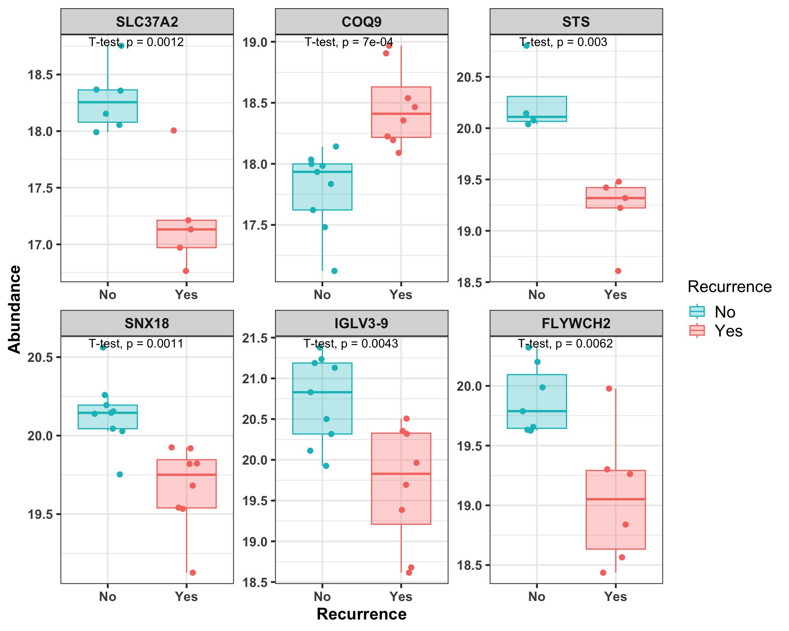
Use probabilistic dropout model to account for data missingness and identify differentially abundant entity differences that are significantly associated with cancer recurrence. Note that there is no differentially abundant protein.
# Fit linear probabilistic dropout model to normalized data
fit <- proDA::proDA(datMat, design = ~ smpAnno$Recurrence)
# fit
# Check coefficient names for Parameter 'contrast' in proDA::test_diff()
# proDA::result_names(fit)
# Identify significant differentially abundant entities
proDAProTissueDiffRes <- proDA::test_diff(fit,
contrast = Intercept + `smpAnno$RecurrenceYes` - Intercept,
sort_by = 'pval', n_max = 20) %>%
dplyr::select(-c(diff, se, df, avg_abundance, n_approx, n_obs)) %>%
dplyr::mutate(Gene = plyr::mapvalues(name,
from = featInfo$Protein.Groups,
to = featInfo$Genes,
warn_missing = F))
proDAProTissueDiffRes name pval adj_pval t_statistic Gene
4583 Q9BWH2 0.4696422 0.99999 -0.7418385 FUNDC2
1928 P49356 0.5058833 0.99999 0.6815950 FNTB
5042 Q9NVH1 0.5083356 0.99999 -0.6776117 DNAJC11
1365 P19838 0.5141507 0.99999 -0.6682106 NFKB1
2650 Q12979 0.5211326 0.99999 -0.6570033 ABR
4234 Q96GQ7 0.5353855 0.99999 0.6343853 DDX27
3869 Q8TAQ2 0.5375686 0.99999 -0.6309509 SMARCC2
3035 Q16543 0.5378788 0.99999 0.6304636 CDC37
258 O15212 0.5382862 0.99999 0.6298236 PFDN6
4394 Q99459 0.5434879 0.99999 0.6216771 CDC5L
1119 P10644 0.5466655 0.99999 0.6167217 PRKAR1A
4000 Q8WZA9 0.5485460 0.99999 0.6137965 IRGQ
2016 P51153 0.5489361 0.99999 0.6131903 RAB13
5608 Q9Y5Z4 0.5597725 0.99999 0.5964450 HEBP2
3557 Q86U42 0.5600176 0.99999 -0.5960684 PABPN1
5570 Q9Y512 0.5605276 0.99999 -0.5952847 SAMM50
2090 P53597 0.5626400 0.99999 -0.5920432 SUCLG1
2744 Q13546 0.5779096 0.99999 0.5687999 RIPK1
2810 Q14139 0.5804503 0.99999 -0.5649639 UBE4A
5585 Q9Y5K6 0.5809963 0.99999 0.5641406 CD2APVisualize data of top 6 significant features based on regular t-test result
# Visualize data of top 6 significant features
topSigFeats <- tFeatSigRes$Var1[1:6]
topSigFeatData <- tibble::as_tibble(datMat[topSigFeats,], rownames = 'Feature') %>%
tidyr::pivot_longer(cols = -'Feature',
names_to = 'Sample', values_to = 'Abundance') %>%
dplyr::mutate(Feature = plyr::mapvalues(Feature,
from = featInfo$Protein.Groups,
to = featInfo$Genes,
warn_missing = F),
Feature = factor(Feature, levels = plyr::mapvalues(topSigFeats,
from = featInfo$Protein.Groups,
to = featInfo$Genes,
warn_missing = F))) %>%
dplyr::left_join(smpAnno, by = 'Sample')
ggplot(topSigFeatData, aes(x=Recurrence, y=Abundance, col=Recurrence, fill=Recurrence)) +
geom_boxplot(alpha = 0.3, outlier.shape = NA) +
geom_jitter(position = position_jitter(0.2), size = 2, show.legend = F) +
scale_color_manual(values=c('#00BFC4', '#F8766D')) +
scale_fill_manual(values=c('#00BFC4', '#F8766D')) +
facet_wrap(vars(Feature), scales = 'free') +
ggpubr::stat_compare_means(method = 't.test', paired = F,
method.args = list(var.equal = T),
show.legend = F) +
th + theme(strip.text = element_text(size = 13, face = 'bold'))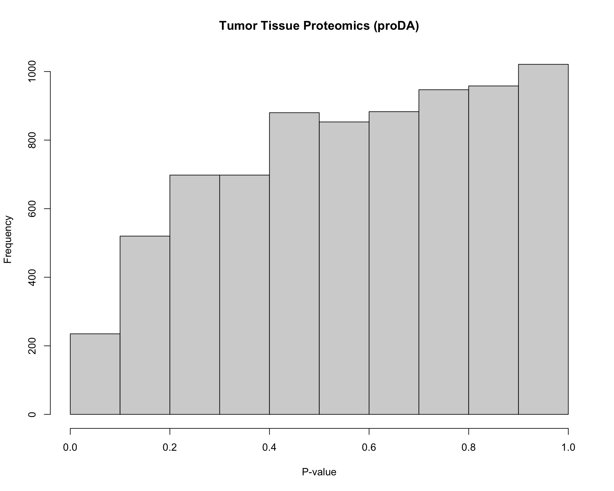
| Version | Author | Date |
|---|---|---|
| 2f62f8a | LiaoQianWu | 2023-05-17 |
Display significant associations between PCs (Var1) and cancer recurrence (Var2)
# Display PCs that can significantly separate recurrence and non-recurrence
# patients
tPCASigRes Var1 Var2 pVal pValAdj Stat Test
1 PC15 Recurrence 0.001415623 0.02123434 -3.901938 T-test# Display proportion of total variance captured by all PCs explained by each PC
varExplained <- pcaRes@sDev^2 / sum(pcaRes@sDev^2)
PC <- paste0('PC', seq(length(varExplained)))
varTab <- data.frame(PC = factor(PC, levels = PC),
Var_explained = varExplained)
ggplot(varTab, aes(x=PC, y=Var_explained*100)) +
geom_col() +
labs(x = '', y = 'Variance explained (%)',
title = 'Differential tissue proteomics') +
th + theme(axis.text.x = element_text(angle = 90, hjust = 1, vjust = 0.5))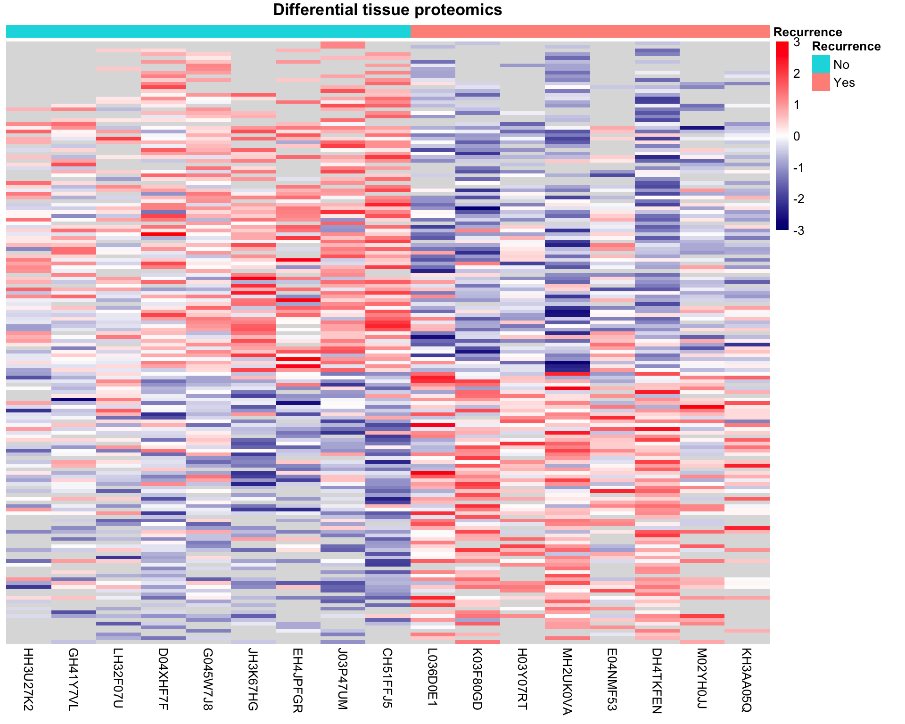
| Version | Author | Date |
|---|---|---|
| 2f62f8a | LiaoQianWu | 2023-05-17 |
PC15 potentially separates recurrence and non-recurrence patients.
# Visualize PCs
ggplot(pcTab, aes(x=Recurrence, y=PC15, col=Recurrence, fill=Recurrence)) +
geom_boxplot(alpha = 0.3, outlier.shape = NA) +
geom_jitter(position = position_jitter(0.2), size = 2, show.legend = F) +
labs(title = 'Differential tissue proteomics') +
scale_color_manual(values=c('#00BFC4', '#F8766D')) +
scale_fill_manual(values=c('#00BFC4', '#F8766D')) +
ggpubr::stat_compare_means(method = 't.test', paired = F, size = 6,
method.args = list(var.equal = T), hjust = 0.65,
show.legend = F) +
th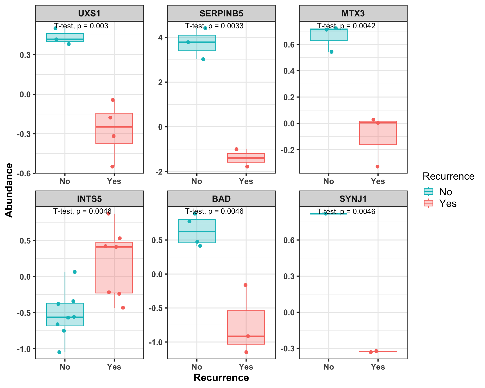
| Version | Author | Date |
|---|---|---|
| 2f62f8a | LiaoQianWu | 2023-05-17 |
Plot molecular signatures captured by PC15 in input data. We took a look at top 20 features with highest loadings and observed protein levels of these top features through heatmap. Note that features in heatmap are ordered by their loadings.
# Plot molecular signatures in input data
# Extract top features with highest loadings
topFeats <- pcTopFeatTab$PC15$Feature[1:20]
# Order features by loadings
topFeatsIdx <- sapply(topFeats, function(feat) {which(rownames(datMat) == feat)})
# Change protein names to gene names
datMatSub <- datMat[topFeatsIdx, smpOrder]
rownames(datMatSub) <- plyr::mapvalues(rownames(datMatSub),
from = featInfo$Protein.Groups,
to = featInfo$Genes,
warn_missing = F)
pheatmap::pheatmap(datMatSub,
annotation_col = smpRecur,
color = colorRampPalette(c('navy', 'white', 'red'))(100),
cluster_rows = F, cluster_cols = F,
scale = 'row', main = 'Differential tissue proteomics - PC15')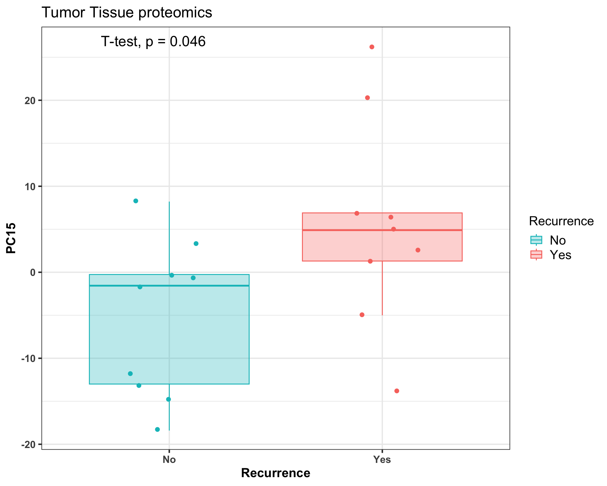
Display top features that build the PC15
# Display top features with highest loadings of PC of interest
dplyr::mutate(pcTopFeatTab$PC15, Gene = plyr::mapvalues(Feature,
from = featInfo$Protein.Groups,
to = featInfo$Genes,
warn_missing = F)) Feature Loading Gene
1 P09488 0.09816523 GSTM1
2 Q13509 0.08664467 TUBB3
3 P69891 0.08594411 HBG1
4 P08263 0.07606253 GSTA1
5 Q8N142 0.07595667 ADSS1
6 Q13938 0.07359364 CAPS
7 Q9BT09 0.07272752 CNPY3
8 Q6UX46 0.07102360 ALKAL2
9 Q9NRG9 0.07089145 AAAS
10 P01880 0.06985825 IGHD
11 Q2TB90 0.06949986 HKDC1
12 Q13609 0.06774330 DNASE1L3
13 O43278 0.06763761 SPINT1
14 A0A0C4DH34 0.06737510 IGHV4-28
15 P55317 0.06684702 FOXA1
16 P01599 0.06501820 IGKV1-17
17 P03956 0.06363059 MMP1
18 Q6ZMW3 0.06361037 EML6
19 P39900 0.06356929 MMP12
20 Q70UQ0 0.06332271 IKBIP
21 Q92859 0.06263911 NEO1
22 P05186 0.06160315 ALPL
23 Q9H9P8 0.06141583 L2HGDH
24 Q2PPJ7 0.06043891 RALGAPA2
25 P02792 0.05852869 FTL
26 A0A0C4DH25 0.05820407 IGKV3D-20
27 Q9Y446 0.05726862 PKP3
28 P34059 0.05708290 GALNS
29 Q92954 0.05642950 PRG4
30 Q9Y2E4 0.05580959 DIP2CSummary
Visualize Recurrence-related features through volcano plots. Log2-FC (up and down) is recurrence to non-recurrence groups. To be clearer, entities on up side are more abundant in recurrence group than non-recurrence group, and so forth.
# Prepare protein-gene table for annotations
proPlasmaFeatInfo <- tibble::as_tibble(rowData(proPlasma), rownames = 'Protein.Groups')
# Compute log2(FC)
# PP
proPlasmaMedi <- readRDS('./data/AG_Krijgsveld/proPlasmaMedi_DIA.rds') %>%
summExp2df(assay = 'mediAbundance', row_id = 'Feature', col_id = 'Sample') %>%
dplyr::select(Feature, Value, Condition, Recurrence)
# BPP
proBaseLogFC <- dplyr::filter(proPlasmaMedi, Condition == 'Baseline') %>%
dplyr::group_by(Feature, Recurrence) %>%
dplyr::summarise(Mean = mean(Value, na.rm = T)) %>%
dplyr::ungroup() %>%
tidyr::pivot_wider(names_from = 'Recurrence', values_from = 'Mean') %>%
dplyr::mutate(logFC = Yes - No) %>%
dplyr::select(Feature, logFC)
# FPP
proFoloLogFC <- dplyr::filter(proPlasmaMedi, Condition != 'Baseline') %>%
dplyr::group_by(Feature, Recurrence) %>%
dplyr::summarise(Mean = mean(Value, na.rm = T)) %>%
dplyr::ungroup() %>%
tidyr::pivot_wider(names_from = 'Recurrence', values_from = 'Mean') %>%
dplyr::mutate(logFC = Yes - No) %>%
dplyr::select(Feature, logFC)
# Collect all needed information for volcano plots
# BPP
proBaseVolTab <- dplyr::select(proBaseRes$tFeatRes, Var1, pVal) %>%
dplyr::rename(Feature = Var1) %>%
dplyr::left_join(proBaseLogFC, by = 'Feature') %>%
dplyr::mutate(Gene = plyr::mapvalues(Feature,
from = proPlasmaFeatInfo$Protein.Groups,
to = proPlasmaFeatInfo$Genes,
warn_missing = F))
# FPP
proFoloVolTab <- dplyr::select(proFoloRes$tFeatRes, Var1, pVal) %>%
dplyr::rename(Feature = Var1) %>%
dplyr::left_join(proFoloLogFC, by = 'Feature') %>%
dplyr::mutate(Gene = plyr::mapvalues(Feature,
from = proPlasmaFeatInfo$Protein.Groups,
to = proPlasmaFeatInfo$Genes,
warn_missing = F))Log2-FC cutoffs are 0.5 (FC=1.41) and -0.5 (FC=0.71).
# BPP
volTab <- proBaseVolTab
volTab['DE'] <- 'Not significant'
volTab$DE[volTab$pVal <= 0.05 & volTab$logFC > 0.5] <- 'Up'
volTab$DE[volTab$pVal <= 0.05 & volTab$logFC < -0.5] <- 'Down'
volTab['Label'] <- NA
label4SigFeats <- volTab$Gene[volTab$DE != 'Not significant']
volTab$Label[volTab$DE != 'Not significant'] <- label4SigFeats
ggplot(volTab, aes(x=logFC, y=-log10(pVal), col=DE, label=Label)) +
geom_point(size = 2) +
geom_hline(yintercept = -log10(0.05), col = 'red', linewidth = 0.4) +
geom_vline(xintercept = c(-0.5, 0.5), col = 'red', linewidth = 0.4) +
geom_text_repel(size = 4, show.legend = F) +
scale_color_manual(values = c('navy', 'grey', 'red')) +
labs(x = 'log2(FC)', title = 'Baseline Plasma Proteomics') +
th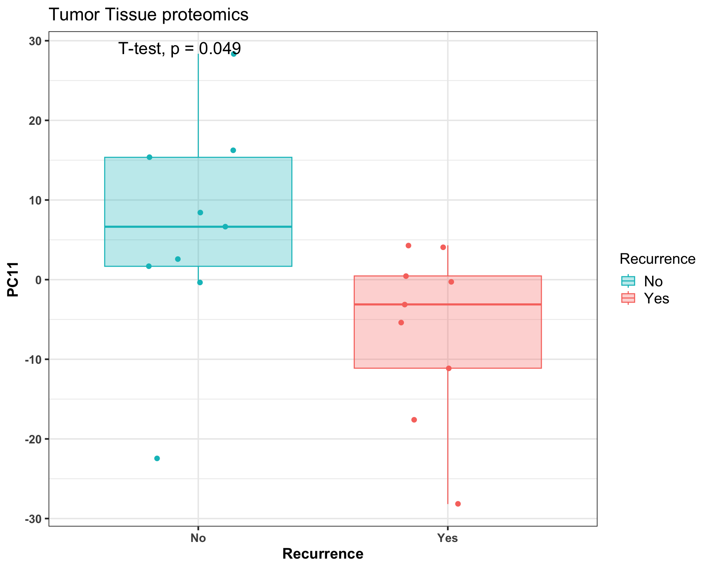
| Version | Author | Date |
|---|---|---|
| 2f62f8a | LiaoQianWu | 2023-05-17 |
Log2-FC cutoffs are 0.5 (FC=1.41) and -0.5 (FC=0.71).
# FPP
volTab <- proFoloVolTab
volTab['DE'] <- 'Not significant'
volTab$DE[volTab$pVal <= 0.05 & volTab$logFC > 0.5] <- 'Up'
volTab$DE[volTab$pVal <= 0.05 & volTab$logFC < -0.5] <- 'Down'
volTab['Label'] <- NA
label4SigFeats <- volTab$Gene[volTab$DE != 'Not significant']
volTab$Label[volTab$DE != 'Not significant'] <- label4SigFeats
ggplot(volTab, aes(x=logFC, y=-log10(pVal), col=DE, label=Label)) +
geom_point(size = 2) +
geom_hline(yintercept = -log10(0.05), col = 'red', linewidth = 0.4) +
geom_vline(xintercept = c(-0.5, 0.5), col = 'red', linewidth = 0.4) +
geom_text_repel(size = 4, show.legend = F) +
scale_color_manual(values = c('navy', 'grey', 'red')) +
labs(x = 'log2(FC)', title = 'Follow-up Plasma Proteomics') +
th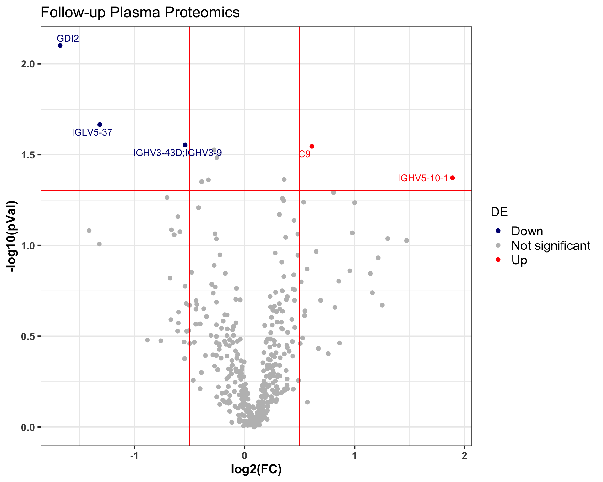
Display proportions of significant features that can separate cancer recurrence and non-recurrence patient groups for all datasets we currently have. Numbers above bars indicate total feature numbers.
# Specific functions for subsetting data
subPlasma <- function(summ_exp) {
smpAnno <- as.data.frame(colData(summ_exp))
base <- summ_exp[, smpAnno[['Condition']] == 'Baseline']
folo <- summ_exp[, smpAnno[['Condition']] != 'Baseline']
return(list(Base = base, Folo = folo))
}
subTissue <- function(summ_exp) {
smpAnno <- as.data.frame(colData(summ_exp))
tumor <- summ_exp[, smpAnno[['Condition']] == 'Tumor']
normal <- summ_exp[, smpAnno[['Condition']] == 'Normal']
return(list(Tumor = tumor, Normal = normal))
}
# Load normalized datasets and subset them into Baseline/Follow-up and Tumor/Normal datasets
# NO MISSINGNESS
# Targeted Plasma Metabolomics
metaPlasma_Hell <- readRDS('./data/AG_Hell/metaPlasmaNorm.rds')
metaBase_Hell <- subPlasma(metaPlasma_Hell)$Base
metaFolo_Hell <- subPlasma(metaPlasma_Hell)$Folo
# Targeted Tissue Metabolomics
metaTissue_Hell <- readRDS('./data/AG_Hell/metaTissueNorm.rds')
metaTumor_Hell <- subTissue(metaTissue_Hell)$Tumor
metaNormal_Hell <- subTissue(metaTissue_Hell)$Normal
# DDA Plasma Proteomics
proPlasma_Kri_DDA <- readRDS('./data/AG_Krijgsveld/proPlasmaNorm.rds')
proBase_Kri_DDA <- subPlasma(proPlasma_Kri_DDA)$Base
proFolo_Kri_DDA <- subPlasma(proPlasma_Kri_DDA)$Folo
# DDA Tissue Proteomics
proTissue_Kri_DDA <- readRDS('./data/AG_Krijgsveld/proTissueNorm.rds')
proTumor_Kri_DDA <- subTissue(proTissue_Kri_DDA)$Tumor
proNormal_Kri_DDA <- subTissue(proTissue_Kri_DDA)$Normal
# WITH MISSINGNESS
# Untargeted Plasma Metabolomics
metaPlasma_Hopf <- readRDS('./data/AG_Hopf/metaPlasmaVsn.rds')
metaBase_Hopf <- subPlasma(metaPlasma_Hopf)$Base
metaFolo_Hopf <- subPlasma(metaPlasma_Hopf)$Folo
# Untargeted Tissue Metabolomics
metaTissue_Hopf <- readRDS('./data/AG_Hopf/metaTissueVsn.rds')
metaTumor_Hopf <- subTissue(metaTissue_Hopf)$Tumor
metaNormal_Hopf <- subTissue(metaTissue_Hopf)$Normal
# Untargeted Plasma Lipidomics
lipPlasma_Hopf <- readRDS('./data/AG_Hopf/lipPlasmaVsn.rds')
lipBase_Hopf <- subPlasma(lipPlasma_Hopf)$Base
lipFolo_Hopf <- subPlasma(lipPlasma_Hopf)$Folo
# Untargeted Tissue Lipidomics
lipTissue_Hopf <- readRDS('./data/AG_Hopf/lipTissueVsn.rds')
lipTumor_Hopf <- subTissue(lipTissue_Hopf)$Tumor
lipNormal_Hopf <- subTissue(lipTissue_Hopf)$Normal
# DIA Plasma Proteomics
proPlasma_Kri_DIA <- readRDS('./data/AG_Krijgsveld/proPlasmaNorm_DIA.rds')
proBase_Kri_DIA <- subPlasma(proPlasma_Kri_DIA)$Base
proFolo_Kri_DIA <- subPlasma(proPlasma_Kri_DIA)$Folo
# DIA Tissue Proteomics
proTissue_Kri_DIA <- readRDS('./data/AG_Krijgsveld/proTissueNorm_DIA.rds')
proTumor_Kri_DIA <- subTissue(proTissue_Kri_DIA)$Tumor
proNormal_Kri_DIA <- subTissue(proTissue_Kri_DIA)$Normal# Prepare significant feature lists for all datasets
# NO MISSINGNESS
# Targeted Plasma Metabolomics
metaBaseRes_Hell <- doSOA(metaBase_Hell, meta_var = 'Recurrence')
metaFoloRes_Hell <- doSOA(metaFolo_Hell, meta_var = 'Recurrence')
# Targeted Tissue Metabolomics
metaTumorRes_Hell <- doSOA(metaTumor_Hell, meta_var = 'Recurrence')
metaNormalRes_Hell <- doSOA(metaNormal_Hell, meta_var = 'Recurrence')
# DDA Plasma Proteomics
proBaseRes_Kri_DDA <- doSOA(proBase_Kri_DDA, meta_var = 'Recurrence')
proFoloRes_Kri_DDA <- doSOA(proFolo_Kri_DDA, meta_var = 'Recurrence')
# DDA Tissue Proteomics
proTumorRes_Kri_DDA <- doSOA(proTumor_Kri_DDA, meta_var = 'Recurrence')
proNormalRes_Kri_DDA <- doSOA(proNormal_Kri_DDA, meta_var = 'Recurrence')
# WITH MISSINGNESS (use proDA)
# Untargeted Plasma Metabolomics
metaBaseRes_Hopf <- doSOA(metaBase_Hopf, meta_var = 'Recurrence')
datMat <- metaBaseRes_Hopf$data
smpAnno <- metaBaseRes_Hopf$smpMetadata
fit <- proDA::proDA(datMat, design = ~ smpAnno$Recurrence)
all_proDAmetaBaseRes_Hopf <- proDA::test_diff(fit,
contrast = Intercept + `smpAnno$RecurrenceYes` - Intercept,
sort_by = 'pval')
proDAmetaBaseRes_Hopf <- dplyr::filter(all_proDAmetaBaseRes_Hopf, pval < 0.05)
metaFoloRes_Hopf <- doSOA(metaFolo_Hopf, meta_var = 'Recurrence')
datMat <- metaFoloRes_Hopf$data
smpAnno <- metaFoloRes_Hopf$smpMetadata
fit <- proDA::proDA(datMat, design = ~ smpAnno$Recurrence)
all_proDAmetaFoloRes_Hopf <- proDA::test_diff(fit,
contrast = Intercept + `smpAnno$RecurrenceYes` - Intercept,
sort_by = 'pval')
proDAmetaFoloRes_Hopf <- dplyr::filter(all_proDAmetaFoloRes_Hopf, pval < 0.05)
# Untargeted Tissue Metabolomics
metaTumorRes_Hopf <- doSOA(metaTumor_Hopf, meta_var = 'Recurrence')
datMat <- metaTumorRes_Hopf$data
smpAnno <- metaTumorRes_Hopf$smpMetadata
fit <- proDA::proDA(datMat, design = ~ smpAnno$Recurrence)
all_proDAmetaTumorRes_Hopf <- proDA::test_diff(fit,
contrast = Intercept + `smpAnno$RecurrenceYes` - Intercept,
sort_by = 'pval')
proDAmetaTumorRes_Hopf <- dplyr::filter(all_proDAmetaTumorRes_Hopf, pval < 0.05)
metaNormalRes_Hopf <- doSOA(metaNormal_Hopf, meta_var = 'Recurrence')
datMat <- metaNormalRes_Hopf$data
smpAnno <- metaNormalRes_Hopf$smpMetadata
fit <- proDA::proDA(datMat, design = ~ smpAnno$Recurrence)
all_proDAmetaNormalRes_Hopf <- proDA::test_diff(fit,
contrast = Intercept + `smpAnno$RecurrenceYes` - Intercept,
sort_by = 'pval')
proDAmetaNormalRes_Hopf <- dplyr::filter(all_proDAmetaNormalRes_Hopf, pval < 0.05)
# Untargeted Plasma Lipidomics
lipBaseRes_Hopf <- doSOA(lipBase_Hopf, meta_var = 'Recurrence')
datMat <- lipBaseRes_Hopf$data
smpAnno <- lipBaseRes_Hopf$smpMetadata
fit <- proDA::proDA(datMat, design = ~ smpAnno$Recurrence)
all_proDAlipBaseRes_Hopf <- proDA::test_diff(fit,
contrast = Intercept + `smpAnno$RecurrenceYes` - Intercept,
sort_by = 'pval')
proDAlipBaseRes_Hopf <- dplyr::filter(all_proDAlipBaseRes_Hopf, pval < 0.05)
lipFoloRes_Hopf <- doSOA(lipFolo_Hopf, meta_var = 'Recurrence')
datMat <- lipFoloRes_Hopf$data
smpAnno <- lipFoloRes_Hopf$smpMetadata
fit <- proDA::proDA(datMat, design = ~ smpAnno$Recurrence)
all_proDAlipFoloRes_Hopf <- proDA::test_diff(fit,
contrast = Intercept + `smpAnno$RecurrenceYes` - Intercept,
sort_by = 'pval')
proDAlipFoloRes_Hopf <- dplyr::filter(all_proDAlipFoloRes_Hopf, pval < 0.05)
# Untargeted Tissue Lipidomics
lipTumorRes_Hopf <- doSOA(lipTumor_Hopf, meta_var = 'Recurrence')
datMat <- lipTumorRes_Hopf$data
smpAnno <- lipTumorRes_Hopf$smpMetadata
fit <- proDA::proDA(datMat, design = ~ smpAnno$Recurrence)
all_proDAlipTumorRes_Hopf <- proDA::test_diff(fit,
contrast = Intercept + `smpAnno$RecurrenceYes` - Intercept,
sort_by = 'pval')
proDAlipTumorRes_Hopf <- dplyr::filter(all_proDAlipTumorRes_Hopf, pval < 0.05)
lipNormalRes_Hopf <- doSOA(lipNormal_Hopf, meta_var = 'Recurrence')
datMat <- lipNormalRes_Hopf$data
smpAnno <- lipNormalRes_Hopf$smpMetadata
fit <- proDA::proDA(datMat, design = ~ smpAnno$Recurrence)
all_proDAlipNormalRes_Hopf <- proDA::test_diff(fit,
contrast = Intercept + `smpAnno$RecurrenceYes` - Intercept,
sort_by = 'pval')
proDAlipNormalRes_Hopf <- dplyr::filter(all_proDAlipNormalRes_Hopf, pval < 0.05)
# DIA Plasma Proteomics
proBaseRes_Kri_DIA <- doSOA(proBase_Kri_DIA, meta_var = 'Recurrence')
datMat <- proBaseRes_Kri_DIA$data
smpAnno <- proBaseRes_Kri_DIA$smpMetadata
fit <- proDA::proDA(datMat, design = ~ smpAnno$Recurrence)
all_proDAproBaseRes_Kri_DIA <- proDA::test_diff(fit,
contrast = Intercept + `smpAnno$RecurrenceYes` - Intercept,
sort_by = 'pval')
proDAproBaseRes_Kri_DIA <- dplyr::filter(all_proDAproBaseRes_Kri_DIA, pval < 0.05)
proFoloRes_Kri_DIA <- doSOA(proFolo_Kri_DIA, meta_var = 'Recurrence')
datMat <- proFoloRes_Kri_DIA$data
smpAnno <- proFoloRes_Kri_DIA$smpMetadata
fit <- proDA::proDA(datMat, design = ~ smpAnno$Recurrence)
all_proDAproFoloRes_Kri_DIA <- proDA::test_diff(fit,
contrast = Intercept + `smpAnno$RecurrenceYes` - Intercept,
sort_by = 'pval')
proDAproFoloRes_Kri_DIA <- dplyr::filter(all_proDAproFoloRes_Kri_DIA, pval < 0.05)
# DIA Tissue Proteomics
proTumorRes_Kri_DIA <- doSOA(proTumor_Kri_DIA, meta_var = 'Recurrence')
datMat <- proTumorRes_Kri_DIA$data
smpAnno <- proTumorRes_Kri_DIA$smpMetadata
fit <- proDA::proDA(datMat, design = ~ smpAnno$Recurrence)
all_proDAproTumorRes_Kri_DIA <- proDA::test_diff(fit,
contrast = Intercept + `smpAnno$RecurrenceYes` - Intercept,
sort_by = 'pval')
proDAproTumorRes_Kri_DIA <- dplyr::filter(all_proDAproTumorRes_Kri_DIA, pval < 0.05)
proNormalRes_Kri_DIA <- doSOA(proNormal_Kri_DIA, meta_var = 'Recurrence')
datMat <- proNormalRes_Kri_DIA$data
smpAnno <- proNormalRes_Kri_DIA$smpMetadata
fit <- proDA::proDA(datMat, design = ~ smpAnno$Recurrence)
all_proDAproNormalRes_Kri_DIA <- proDA::test_diff(fit,
contrast = Intercept + `smpAnno$RecurrenceYes` - Intercept,
sort_by = 'pval')
proDAproNormalRes_Kri_DIA <- dplyr::filter(all_proDAproNormalRes_Kri_DIA, pval < 0.05)# Make barplot about proportion of significant features in each dataset
# Compute proportion of significant features
metaBaseSigFeats_Hell <- nrow(metaBaseRes_Hell$tFeatSigRes) / nrow(metaBaseRes_Hell$data) * 100
metaFoloSigFeats_Hell <- nrow(metaFoloRes_Hell$tFeatSigRes) / nrow(metaFoloRes_Hell$data) * 100
metaTumorSigFeats_Hell <- nrow(metaTumorRes_Hell$tFeatSigRes) / nrow(metaTumorRes_Hell$data) * 100
metaNormalSigFeats_Hell <- nrow(metaNormalRes_Hell$tFeatSigRes) / nrow(metaNormalRes_Hell$data) * 100
proBaseSigFeats_Kri_DDA <- nrow(proBaseRes_Kri_DDA$tFeatSigRes) / nrow(proBaseRes_Kri_DDA$data) * 100
proFoloSigFeats_Kri_DDA <- nrow(proFoloRes_Kri_DDA$tFeatSigRes) / nrow(proFoloRes_Kri_DDA$data) * 100
proTumorSigFeats_Kri_DDA <- nrow(proTumorRes_Kri_DDA$tFeatSigRes) / nrow(proTumorRes_Kri_DDA$data) * 100
proNormalSigFeats_Kri_DDA <- nrow(proNormalRes_Kri_DDA$tFeatSigRes) / nrow(proNormalRes_Kri_DDA$data) * 100
metaBaseSigFeats_Hopf <- nrow(proDAmetaBaseRes_Hopf) / nrow(metaBaseRes_Hopf$data) * 100
metaFoloSigFeats_Hopf <- nrow(proDAmetaFoloRes_Hopf) / nrow(metaFoloRes_Hopf$data) * 100
metaTumorSigFeats_Hopf <- nrow(proDAmetaTumorRes_Hopf) / nrow(metaTumorRes_Hopf$data) * 100
metaNormalSigFeats_Hopf <- nrow(proDAmetaNormalRes_Hopf) / nrow(metaNormalRes_Hopf$data) * 100
lipBaseSigFeats_Hopf <- nrow(proDAlipBaseRes_Hopf) / nrow(lipBaseRes_Hopf$data) * 100
lipFoloSigFeats_Hopf <- nrow(proDAlipFoloRes_Hopf) / nrow(lipFoloRes_Hopf$data) * 100
lipTumorSigFeats_Hopf <- nrow(proDAlipTumorRes_Hopf) / nrow(lipTumorRes_Hopf$data) * 100
lipNormalSigFeats_Hopf <- nrow(proDAlipNormalRes_Hopf) / nrow(lipNormalRes_Hopf$data) * 100
proBaseSigFeats_Kri_DIA <- nrow(proDAproBaseRes_Kri_DIA) / nrow(proBaseRes_Kri_DIA$data) * 100
proFoloSigFeats_Kri_DIA <- nrow(proDAproFoloRes_Kri_DIA) / nrow(proFoloRes_Kri_DIA$data) * 100
proTumorSigFeats_Kri_DIA <- nrow(proDAproTumorRes_Kri_DIA) / nrow(proTumorRes_Kri_DIA$data) * 100
proNormalSigFeats_Kri_DIA <- nrow(proDAproNormalRes_Kri_DIA) / nrow(proNormalRes_Kri_DIA$data) * 100
# Prepare needed information for barplot
dat <- c('Untargeted Metabolomics', 'Untargeted Metabolomics',
'Targeted Metabolomics', 'Targeted Metabolomics',
'Untargeted Lipidomics', 'Untargeted Lipidomics',
'DIA Proteomics', 'DIA Proteomics',
'DDA Proteomics', 'DDA Proteomics',
'Untargeted Metabolomics', 'Untargeted Metabolomics',
'Targeted Metabolomics', 'Targeted Metabolomics',
'Untargeted Lipidomics', 'Untargeted Lipidomics',
'DIA Proteomics', 'DIA Proteomics',
'DDA Proteomics', 'DDA Proteomics')
datModal <- c(rep(c('Baseline', 'Follow-up'), 5), rep(c('Tumor', 'Normal'), 5))
datOf <- c(rep('Plasma', 10), rep('Tissue', 10))
proportion <- c(metaBaseSigFeats_Hopf, metaFoloSigFeats_Hopf,
metaBaseSigFeats_Hell, metaFoloSigFeats_Hell,
lipBaseSigFeats_Hopf, lipFoloSigFeats_Hopf,
proBaseSigFeats_Kri_DIA, proFoloSigFeats_Kri_DIA,
proBaseSigFeats_Kri_DDA, proFoloSigFeats_Kri_DDA,
metaTumorSigFeats_Hopf, metaNormalSigFeats_Hopf,
metaTumorSigFeats_Hell, metaNormalSigFeats_Hell,
lipTumorSigFeats_Hopf, lipNormalSigFeats_Hopf,
proTumorSigFeats_Kri_DIA, proNormalSigFeats_Kri_DIA,
proTumorSigFeats_Kri_DDA, proNormalSigFeats_Kri_DDA)
numFeat <- c(c(nrow(metaBaseRes_Hopf$data), NA), c(nrow(metaBaseRes_Hell$data), NA),
c(NA, nrow(lipFoloRes_Hopf$data)), c(nrow(proBaseRes_Kri_DIA$data), NA),
c(nrow(proBaseRes_Kri_DDA$data), NA),
c(nrow(metaTumorRes_Hopf$data), NA), c(nrow(metaTumorRes_Hell$data), NA),
c(NA, nrow(lipNormalRes_Hopf$data)), c(nrow(proTumorRes_Kri_DIA$data), NA),
c(nrow(proNormalRes_Kri_DDA$data), NA))
sigFeatPropTab <- data.frame(Data = factor(dat, levels = unique(dat)),
Data_modality = datModal,
Data_of = datOf,
Proportion = proportion,
Feature_number = numFeat)
ggplot(sigFeatPropTab, aes(x=Data, y=Proportion, fill = Data_modality, label=Feature_number)) +
geom_bar(stat = 'identity', position=position_dodge()) +
geom_text(size = 5, vjust = -0.3) +
facet_wrap(~Data_of) +
labs(x = 'Data', y = 'Percentage (%)',
title = 'Proportion of Cancer Recurrence-Related Features') +
scale_fill_discrete(name = 'Sample Condition') +
th + theme(axis.text.x = element_text(angle = 65, vjust = 1, hjust = 1),
strip.text = element_text(size = 16, face = 'bold'))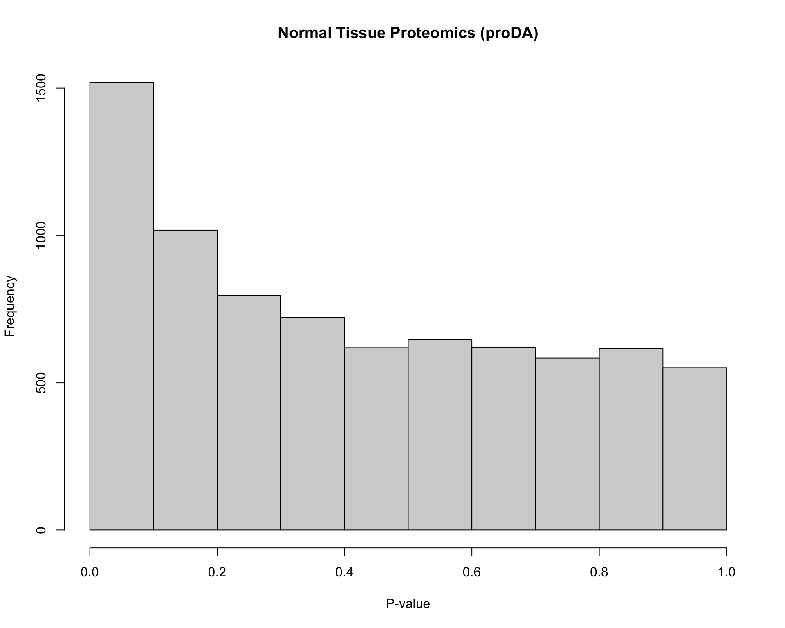
# theme(strip.text = element_text(size = 26), axis.title = element_text(size = 26),
# axis.text.x = element_text(size = 11.5, angle = 60, vjust = 1, hjust = 1), axis.text.y = element_text(size = 22),
# legend.title = element_text(size = 24), legend.text = element_text(size = 24),
# panel.background = element_blank(), axis.line = element_line(color = 'black'))
# ggsave('./output/percentage_sigFeats.png', device = 'png', dpi = 400, height = 8, width = 18)ADD COMMENT!
sessionInfo()R version 4.3.0 (2023-04-21)
Platform: aarch64-apple-darwin20 (64-bit)
Running under: macOS Ventura 13.4
Matrix products: default
BLAS: /Library/Frameworks/R.framework/Versions/4.3-arm64/Resources/lib/libRblas.0.dylib
LAPACK: /Library/Frameworks/R.framework/Versions/4.3-arm64/Resources/lib/libRlapack.dylib; LAPACK version 3.11.0
locale:
[1] en_US.UTF-8/en_US.UTF-8/en_US.UTF-8/C/en_US.UTF-8/en_US.UTF-8
time zone: Europe/Berlin
tzcode source: internal
attached base packages:
[1] stats4 stats graphics grDevices utils datasets methods
[8] base
other attached packages:
[1] lubridate_1.9.2 forcats_1.0.0
[3] stringr_1.5.0 dplyr_1.1.2
[5] purrr_1.0.1 readr_2.1.4
[7] tidyr_1.3.0 tibble_3.2.1
[9] tidyverse_2.0.0 openxlsx_4.2.5.2
[11] ggfortify_0.4.16 ggrepel_0.9.3
[13] ggplot2_3.4.2 proDA_1.14.0
[15] SummarizedExperiment_1.30.1 Biobase_2.60.0
[17] GenomicRanges_1.52.0 GenomeInfoDb_1.36.0
[19] IRanges_2.34.0 S4Vectors_0.38.1
[21] BiocGenerics_0.45.3 MatrixGenerics_1.12.0
[23] matrixStats_1.0.0
loaded via a namespace (and not attached):
[1] tidyselect_1.2.0 farver_2.1.1 bitops_1.0-7
[4] fastmap_1.1.1 RCurl_1.98-1.12 promises_1.2.0.1
[7] digest_0.6.31 timechange_0.2.0 lifecycle_1.0.3
[10] magrittr_2.0.3 compiler_4.3.0 rlang_1.1.1
[13] sass_0.4.6 tools_4.3.0 utf8_1.2.3
[16] yaml_2.3.7 knitr_1.43 ggsignif_0.6.4
[19] S4Arrays_1.0.4 labeling_0.4.2 DelayedArray_0.26.3
[22] RColorBrewer_1.1-3 plyr_1.8.8 abind_1.4-5
[25] workflowr_1.7.0 withr_2.5.0 grid_4.3.0
[28] fansi_1.0.4 ggpubr_0.6.0 git2r_0.32.0
[31] colorspace_2.1-0 scales_1.2.1 cli_3.6.1
[34] rmarkdown_2.22 crayon_1.5.2 generics_0.1.3
[37] rstudioapi_0.14 tzdb_0.4.0 cachem_1.0.8
[40] zlibbioc_1.46.0 XVector_0.40.0 vctrs_0.6.2
[43] Matrix_1.5-4.1 carData_3.0-5 jsonlite_1.8.4
[46] car_3.1-2 hms_1.1.3 rstatix_0.7.2
[49] jquerylib_0.1.4 glue_1.6.2 stringi_1.7.12
[52] gtable_0.3.3 later_1.3.1 munsell_0.5.0
[55] pillar_1.9.0 pcaMethods_1.92.0 htmltools_0.5.5
[58] GenomeInfoDbData_1.2.10 R6_2.5.1 rprojroot_2.0.3
[61] evaluate_0.21 lattice_0.21-8 extraDistr_1.9.1
[64] highr_0.10 backports_1.4.1 pheatmap_1.0.12
[67] broom_1.0.4 httpuv_1.6.11 bslib_0.4.2
[70] Rcpp_1.0.10 zip_2.3.0 gridExtra_2.3
[73] whisker_0.4.1 xfun_0.39 fs_1.6.2
[76] pkgconfig_2.0.3